| 黒子のバスケ―Replace IV― 1/6のキセキ | |
| 藤巻忠俊 & 平林佐和子 | |
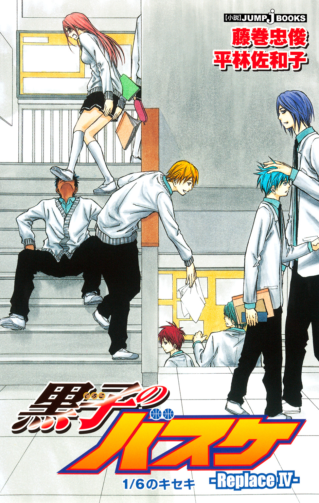
この本は縦書きでレイアウトされています。
また、ご覧になる機種により、表示の差が認められることがあります。
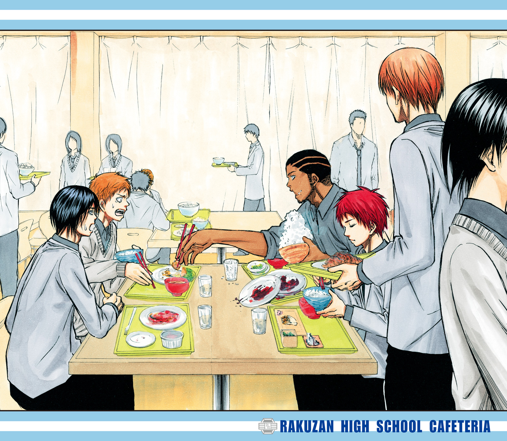
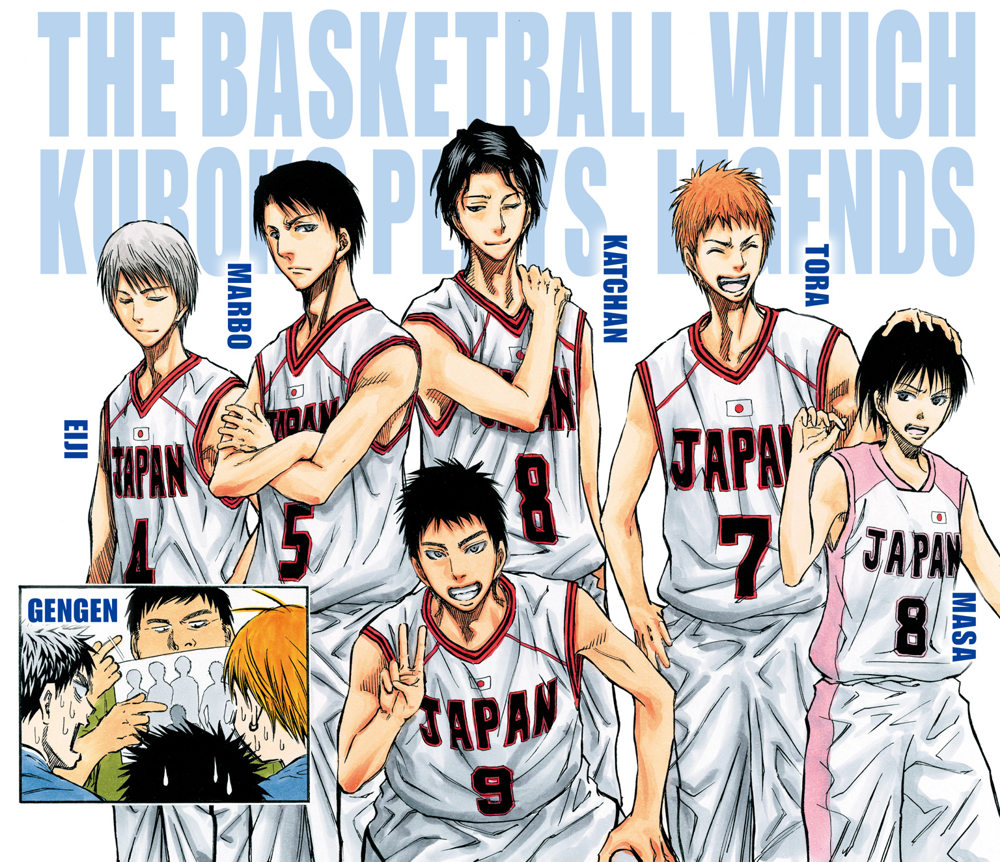
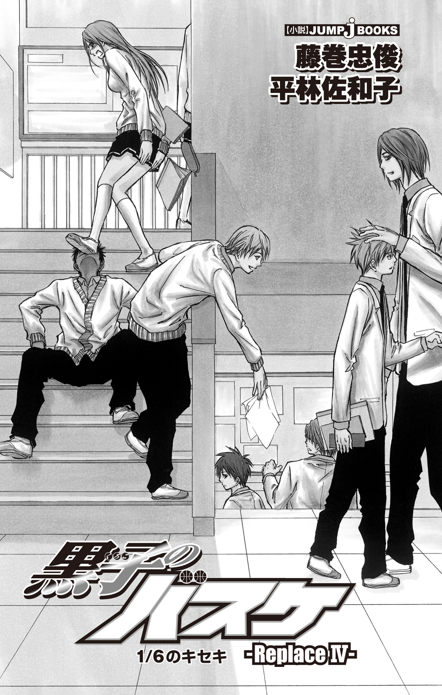
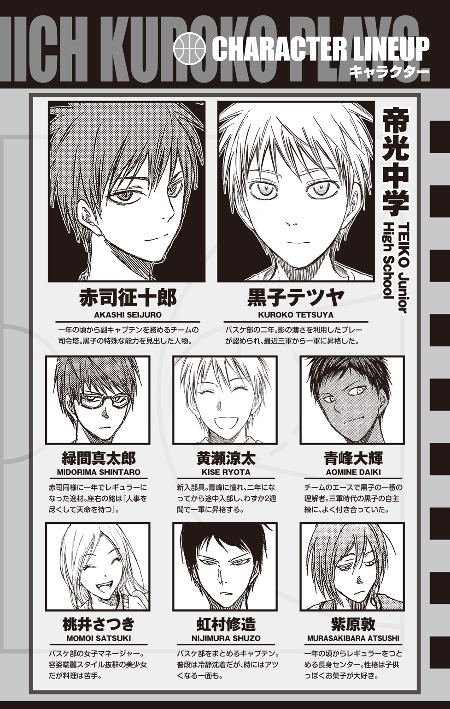
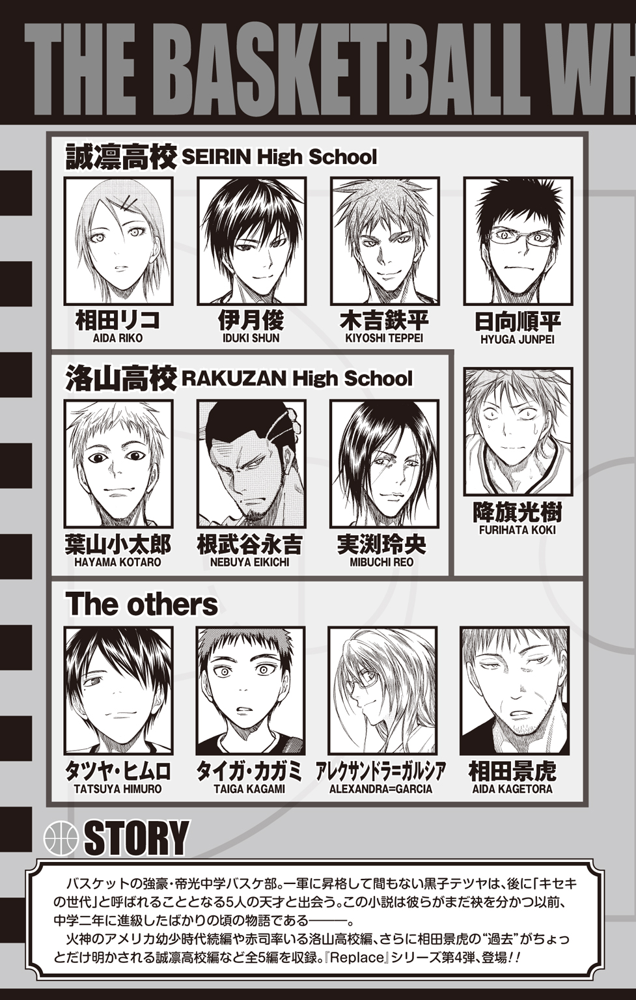
黒子のバスケ-Replace- １／６のキセキ
Replace...バスケット用語で「元いた場所に再び戻ること」
★この作品はフィクションです。実在の人物・団体・事件などには、いっさい関係ありません。
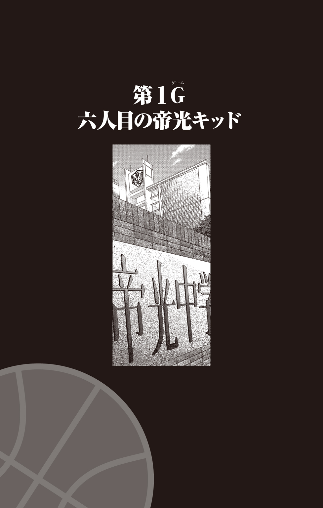
キセキの世代。
その年の全中決勝戦を見たとある記者が、彼らをそう呼んだ。
十年に一人、現れるか否かの天才が同じ世代にそろった。これはまさにキセキである、と。
その呼び名に、中学一年生らしからぬ長身のＣはこう言った。
「うーん......興味ない」
生真面目な印象のＳＧの彼はこうコメントする。
「ただ人事をつくした結果です」
どの取材に対してもケンカ腰で話すＳＦの彼は苛ついた様子で言った。
「あー、ウゼェ。名前とかどーでもいいじゃねーか」
もっとも得点に貢献したＡは驚いて目を丸くした。
「え、『キセキ』って語尾上げんの？ オレ、下げんだと思ってたわ」
ＰＧをつとめた少年は淡々と告げる。
「名誉なことだと思います。今後も研鑽に務めます」
そして、彼らをまとめ、次期主将と目される、ＰＦの少年は言った。
「大きな口叩いてるって言われるかもしんねーけど、あいつらはこんなところじゃ、終わりませんよ。その名前が一時のものじゃなくて、誰もが知るようになるのは、きっとこれからでしょうね」
そう語る少年の瞳は、期待と覚悟を内包した大人びたものだったと記者は個人的メモを残している。
時は移りゆき、彼らは幾つもの輝かしい記録を残して新たな学年にあがった。
迎えたのは出会いと別れの季節。彼らが新しい仲間を迎えた――春。

昼休みの廊下で、帝光中学二年黒子テツヤは思わずぽりぽりと頰をかいた。
「まさかこんなことになるとは、思いませんでした......」
「ん？ なんスか、黒子っち」
黒子のつぶやきを聞き逃した黄瀬涼太が首をかしげて聞き返す。その人なつっこい顔に、黒子は「いえ......なんでも」と軽く首を振った。
「そうスか？ つか、黒子っちと廊下ですれ違うとか、初めてじゃないスか？」
「そうでもないですよ。何度かすれ違っています。黄瀬くんは気づいてないみたいでしたけど」
「マジで？ あ、もしかして普通の生活でもあれ、使ってるとか？ えーっと、ほら、ミス......ディ......えーっと、ミスディレレ......あーもう、ミスディーって呼んでいいスか？」
「ミスディレクションです、黄瀬くん」
「そうそう、それ！ すごいっスよね、あれ」
まさに心からの賞賛といった様子で話す黄瀬を、黒子はじっと見つめた。
「なんスか？」
と、黒子を見つめ返す黄瀬の口元は、自然な笑みを浮かべている。この口が昨日までは黒子のことを「ショボイ奴」「ちんちくりん」「ウスイだけ」などと呼んでいたと聞かされても、それを信じる人間は百人中十人もいないだろう。
じっと見つめる黒子に、黄瀬は「なんなんスか～もー」と焦れた様子で口をとがらせた。黒子は仕方なく、正直な感想を述べた。
「......実は、昨日までの黄瀬くんと、全然違うので驚いています」
「あー、そりゃ仕方ないっスよ」
黄瀬はこともなげに言った。にこっと笑顔つきだ。
「仕方ないですか」
「そ。オレ、ケーイは隠さないほうなので。これからは、このオレでよろしく」
〝ケーイ〟が〝敬意〟のことだとわかるまで、黒子はコンマ一秒費やした。
黄瀬の急激な心変わりには心当たりがある。昨日、一緒に参加した二軍の試合だ。
それまで黄瀬は黒子のことを、レギュラーとして認めないと公言し、あまつさえ、昨日の試合では黒子のユニフォームを賭けて、どちらが点数を取れるか勝負しろとまで言ってきた。しかし、初めて一緒に試合に出場し、黒子の「影」というプレイスタイルを目の当たりにしたことで考えを変えたようだ。
おかげで格下扱いから一気に尊敬対象に格上げされ、呼び方も黄瀬の認める人限定の『～っち』になってしまった。
黄瀬は自分が認めない相手には不満を隠さない。ひっくり返せば、認める相手のことはとことん尊敬する素直さがあるのだとわかれば、この変化にも納得がいく。
納得はいくが、こうも突然態度が変わると、やはり少し戸惑う。
黒子の沈黙からその戸惑いを感じ取ったのか、黄瀬はまたもにこっと笑った。
「まあ、そう難しく考えないで。あ、そだ。よければこれ、お裾分け」
そう言って、黄瀬は手に持っていたクッキングシートの包みを差し出した。
包みからは、微かにバターの香ばしいかおりが漂う。
「......もしかして、調理実習のクッキーですか？」
「あたり～。よくわかったっスね」
「黄瀬くんの格好を見れば、わかりますよ」
「それもそっか」
黄瀬は制服である白いセーターの上にデニム地のエプロンをつけていた。頭には三角巾をちゃんと巻いているので、先ほどまで調理実習だったことは一目瞭然だ。
「黄瀬くんは食べないんですか？」
クッキーを受け取りながら黒子が尋ねると、
「モデルなんで、甘い物は制限中なんスわ」
さらりと前髪をかきあげ、まさにモデルらしく美しく笑う黄瀬。
「............」
「あれ、どうしたんスか？」
「..................もでるダケアッテ、三角巾モ似合ッテマスヨ」
「なぜ、片言の日本語!?」
ガーンッとショックを受ける黄瀬に、黒子は「でも、クッキーはありがとうございます」とお礼を言った。
「じゃあ、ボクはそろそろ行きますね。赤司くんに用があるので」
「え、赤司っち？」
バスケ部副主将の名に、黄瀬がぴくっと反応する。
「なんかあったんスか？」
黄瀬の問いに、黒子は「さぁ......」と首をかしげた。
その反応に黄瀬も「さぁ......？」と黒子と同じ方向に首をかしげる。
黒子は困ったように頰をかいて言った。
「ボクもよくわからないのですが、赤司くんはボクに話があるみたいです」
黒子が赤司に声をかけられたのは、朝練が終わった直後のことだ。
部員そろってコーチに一礼し、解散したところで、赤司が黒子に近づいてきた。
「黒子、ちょっといいかな。聞きたいことがあるんだ」
「はい......？」
なんだろう、と黒子は身構えた。赤司が自分に尋ねることなど、思いつかない。赤司は無駄話をしないタイプだ。なおさら気になる。
しかし、それ以上赤司が黒子に尋ねることはなかった。
「なんだそれ？ 赤司から声かけてきたんじゃねーのかよ」
黒子の話を聞いていた青峰大輝が、不思議そうに片眉をあげる。
黄瀬と別れたあと、黒子は青峰の教室を訪れていた。
そこで彼を廊下まで呼び出し、赤司とのやりとりを話したところである。
「なんで赤司、なにも言わなかったんだ？」
「主将が赤司くんを呼んだんです。だから、赤司くんは『またあとで......』と言って、主将のところに行ってしまいました」
「へー。でも、赤司がテツに何の用だろうな」
「わかりません。気になるので、ボクから聞きに行こうかと」
「で、オレのところに来たのか......って、おかしくないか？」
青峰は教室のドア枠にもたれかかり、相棒の黒子を見つめる。
「赤司の教室に直接行けよ」
「そうしたいのはやまやまですが、赤司くんが何組か知らないんです」
暦はまだ四月。クラス替え直後のため、誰がどのクラスなのか、誰もがまだ覚えきれていない。そもそも自分の新しいクラスさえ、頭からすっぽ抜けて、新二、三年生の生徒がうっかりと以前の教室に行ってしまう珍事が毎朝多発しているぐらいだ。黒子が赤司の教室を知らないのも、仕方のないことだった。
「赤司のクラスかー。なんか聞いた気はするんだけどなー。えーっと、あいつのクラス、クラス......」
青峰は目をつぶり、指先を額に当ててうんうん唸り始める。
黒子は青峰が思い出してくれることを期待して待った。
やがて青峰のうなり声が徐々に小さくなり、規則正しい呼吸音だけになる。眉間に寄っていた皺も、心なしか薄れている。
「..................青峰くん？」
「............はっ！」
不審に思った黒子が声をかけると、青峰はびくっとして目をぱちっと開けた。
「やべ、寝てたわっ！」
「......え？」
青峰は照れ笑いを浮かべ、頭をかいた。
「なんか、バスケ以外で頭使うと眠くなるんだよな」
「......それって、授業は大丈夫なんですか？」
「ん？ まあな。二年になってから急に背が伸びただろ。おかげで、うしろのほうの席になってさ。だから心配ねーよ」
つまり、授業中に居眠りをしても見つかりにくいと言いたいらしい。
「......別の意味で心配します」
その後、赤司の教室を思い出そうと再挑戦する青峰に、またも寝てしまうのではないかと黒子が考えていると、思わぬ助っ人が現れた。
「青峰くん、どうしたの？」
声をかけてきたのは、バスケ部マネージャーの桃井さつきである。
ちょうど青峰の教室を通りかかったところで、彼の悩める姿を見つけたようだ。
「なんかあったの？ こんなとこに一人で立っちゃって」
「一人じゃねーよ、テツもいるって」
「え？」
きょとんとする桃井に、黒子が軽く会釈した。
「どうも」
「ふぎゃぁ！」
突然、視界に現れた黒子に桃井は小さな悲鳴をあげた。その反応に青峰が吹き出す。
「ぶはっ！ なんだよ、それ！ 『ふぎゃぁ！』って！」
「だ、だって、驚いたんだから仕方ないじゃない！ く、黒子くんも、毎回いきなり現れないでよ！」
「すみません。驚かせるつもりはなかったのですが......」
素直に謝る黒子に、桃井は「うっ」と言葉を詰らせた。半分八つ当たりだったのに、それをまともに受け止めて謝ってくるとは思わなかった。
そもそも黒子のこの影の薄さこそが、試合展開を左右する力になることは、昨日同伴した二軍の試合を見てよくわかった。
充分活躍できる選手なのに、この主張のなさはなんなのだろう。
常日頃いくら言っても聞かない青峰を相手にしているので、この素直な反応は新鮮であり、どう返すべきか、迷う。
つまりは、
「............なんか、調子くるう」
桃井はぷいっとそっぽを向いた。その様子に青峰が怪訝そうな顔をする。
「どうしたんだよ、さつき」
「なんでもないっ！ それより、ふたりしてどうしたの？」
桃井の問いかけに、青峰が事情を説明した。桃井は「なんだ、そんなこと」と事もなげに言う。
「赤司くんのクラスなら、知ってるよ」
「マジか!?」
「教えて下さい、桃井さん」
「いいけど......。赤司くん、教室にいないと思うな」
「え？」
「だって、美術室の前にいたから。ミドリンと一緒に」
「え？」
聞き慣れない名前の登場に、黒子は桃井に聞き返した。
「すみません、誰と一緒なんですか？」
「え？ ミドリン」
「......そんな人、いましたか？」
黒子が青峰に尋ねると、青峰はにやにやと笑って答えた。
「緑間だよ」
「ミドリン......」
「何が言いたいのだよ、黒子」
緑間真太郎は、彼のニックネームを呼んだまま沈黙してしまった黒子を、むすっとした顔で見つめた。そんな黒子の隣で、口と腹を押さえ、必死に笑いをこらえている青峰の姿が、余計に緑間の眉間の皺を深くする。
「いえ、緑間くんのニックネームが意外とかわいらしいので驚きました」
「ぶはっ！ ほ、本人に言いやがった！ あははははっ！」
「うるさいのだよ、青峰！」
とうとう笑い出した青峰を緑間が一喝した。
「............あの呼び方は桃井が勝手に呼んでいるだけだ。オレは認めたつもりはないし、お前に呼ばれる筋合いもない」
「大丈夫です。ボクも緑間くんを『ミドリン』と呼ぶつもりはありません」
「ならばいい」
緑間はすっと眼鏡を押し上げた。
「それで、何の用だ。オレは忙しい」
黒子はぐるりと周囲を見回した。
桃井に教わったとおり、赤司を捜して美術室まで青峰とともにやってきた。しかし、ここにいるのは、どうやら緑間だけのように見える。
「赤司くんは一緒じゃないんですか？」
「赤司？ いや、あいつはここにはいないが......。どうかしたのか？」
笑いすぎて目に浮かんだ涙をぬぐいながら、青峰が言った。
「なんかさ、赤司のやつがテツに聞きたいことがあるみてーなんだ」
「赤司が？」
緑間は怪訝な顔でしばし考えると、
「............まさか灰崎がなにかやらかしたのか？」
またあいつか、というニュアンスを言外に含ませ、黒子に尋ねた。
「灰崎くん、ですか？ ボクは何も聞いていませんが......」
「そうか......。確かに灰崎のことなら、わざわざ黒子に聞く必要はないな。だったら......黄瀬だな？」
緑間の発言に黒子は「え？」と虚をつかれた顔をするが、聞いていた青峰は「ああ、それかもな」と納得した。
黄瀬がその持ち前の負けん気で、灰崎祥吾にスタメンの座をかけて勝負をふっかけたのは、つい先日のことだ。
入部二週間で一軍にあがるという成長著しい黄瀬であっても、やはり現スタメンの灰崎には力及ばず、勝負には負けてしまった。それ以降、灰崎はことあるごとに黄瀬にちょっかいを出し、黄瀬もそれに真っ向から反発して、部活中でも諍いが絶えない。
主将が注意するほどのことでもないが、部員間の中では見過ごせない状況になっている。
そしてその黄瀬が、灰崎の次、もしくは同程度に疎ましく思っている相手が、黒子であった――のだが、その棘が黄瀬からすっかり抜けてしまっていることを、青峰と緑間はまだ知らない。
このため、黄瀬がまた何かをしでかし、赤司はその事情を黒子に聞くつもりなのだろうと、緑間と青峰は推測したようだ。
「まさか黄瀬のやつ、テツにまでスタメンかけて勝負しろっつったんじゃねーだろな？」
「............」
ずばり言い当てた青峰に、黒子は沈黙するしかない。
沈黙を肯定と受け取った青峰と緑間はため息をついた。
「しょうがねーな、あいつは。テツと勝負しても意味ねーのに......。赤司のやつ、テツを通して黄瀬に注意するつもりかもな」
「赤司はそんなことしないのだよ。言うなら直接本人に伝える。だが、状況はきちんと把握したいだろうから、説明させるつもりなのだろう。その上で今後の対応策を練るのかもしれん」
「テツに勝ったせいで、黄瀬はますます『教育係替えろ！』って荒れるかもな」
「まったく黒子に勝ったぐらいで、黄瀬のやつは............」
やれやれと肩を落とすふたりに、黒子は「あの......」と会話に割って入った。
「そんなにボクが負けた負けた言われると、多少は気になるのですが......」
「事実だから仕方がないのだよ」
「事実じゃありません」
「え？ ......まさか勝ったのか!?」
青峰の発言に、緑間もぎょっとして眼鏡の奥の瞳を丸くする。驚愕の眼差しで黒子を見つめるふたりに、黒子は淡々と説明した。
「確かに黄瀬くんに勝負しようとは言われましたが、断ったんです。その後、黄瀬くんの態度が一変して、ボクも驚いています」
「はぁ？ なんだよ、それ」
青峰がきょとんとする隣で、緑間は思うところがあるらしく、すっと眼鏡に手をやった。
「......まあ、いい。話は赤司に直接聞きに行ったほうが早いのだよ」
そう言うと、緑間は黒子たちに背を向けて美術室奥の準備室へと向かった。その背に「だから、その赤司の居場所を探してるんだって」と青峰が言う。
「緑間くん、赤司くんがどこにいるか知りませんか？ 知っているなら教えて下さい」
黒子もお願いすると、緑間は足を止め、振り向いた。
「赤司なら、おそらく生徒会室なのだよ。うまくいけば、会えるだろう」
「よし、生徒会室な。テツ、行こうぜ！」
「はい。緑間くん、美術の準備があるのにお邪魔しました」
黒子がぺこりと頭を下げると、緑間はふと怪訝そうな顔をした。
「オレは美術の準備をするつもりはないが？」
「え？ そのために美術室にいたんじゃないのですか？」
「違う。オレは備品を譲ってもらう交換条件として、準備室の整理を引き受けただけなのだよ」
そう言うと、緑間は美術室の壁のほうに視線を向けた。
黒子もつられるようにそれに倣う。そこには壁に沿うようにして立体的なオブジェが幾つも並んでいた。特に目を引くのが、有名な彫刻のブロンズ製レプリカだ。
「あれを譲ってもらうんですか？」
「ああ。美術の先生に交渉したところ、備品整理を手伝うことを条件に承諾を得たのだよ」
青峰と緑間が「ほんと物好きだな」「おまえでは、あの希少価値がわからないのだよ」と言い交わす中、黒子はブロンズ像をじっと見つめた。
美術の教科書で見たことのある、ロダンの「考える人」だ。
黒子は緑間のことをまだあまり知らないが、彼がピアノを得意としていることは知っていた。というのも、先月の卒業式で在校生から卒業生に贈る歌の伴奏を務めたのは緑間だったのだ。一年生ながら伴奏者に抜擢されるだけあって、その演奏はすばらしかった。
緑間はおそらく音楽だけでなく、芸術全般に興味があるタイプなのだろう。そう考えれば、このブロンズ像に惹かれるのも納得できる。しかも、学校の備品なのに欲しがるということは、相当なこだわり派だ。
なので、青峰が「テツも、変な趣味だと思うだろ？」と同意を求めてきても、
「そうですか？ 悪くない趣味だと思いますよ」
と、黒子は答えた。緑間が満足げにうなずく。
「そうだろう。なかなか興味深い一品なのだよ」
そう言って、緑間はブロンズ像に近づき、ぽんと手を置いた。
黒子が「え？」と小さく目を見開く。なぜなら、緑間が手を置いたのは「考える人」の隣にひっそりと置かれたトーテムポールだったからだ。
緑間は語った。
「このトーテムポールは実に有用なのだよ。見ろ、この顔を。上から『喜怒哀楽』となっている。これがあれば、『おは朝』のラッキーアイテムが『トーテムポール』でも、『嬉しい顔』でも『悲しい顔』でも対応できる、実に有用な一品だ。ちなみに今日のラッキーアイテムは手鏡だ」
緑間が颯爽と手鏡を取り出して見せつける。
「ラッキーアイテム......？」
黒子は緑間が突き出す手鏡を見つめ、はてと首をかしげた。
その様子に緑間がむっと顔をしかめる。
「まさか、『おは朝』を知らないとでも？」
「知りません」
「なんだと!?」
驚きのあまり、緑間にしては珍しく大きな声を発した。その驚きは、思わず手鏡を持つ手を放してしまうほどだ。
「!?」
あらがいようのない重力に引かれ、手鏡は落下していく。
落ちてしまえば、割れることは避けられない。手鏡の運命は決まったかに見えた――が、
「ふぬっ」
緑間が持ち前の反射神経と執念でもって、手鏡を空中でつかんだ。
「あ、あぶなかったのだよ......!!」
「本当に危機一髪でした......」
見ていた黒子も、思わず呑んでしまった息を吐き、ゆっくりと深呼吸をした。
「オレがラッキーアイテムを手放すなど............ん？」
「どうしました？」
黒子は緑間に尋ねた。なぜか緑間がじっと黒子を見つめている。
「黒子、おまえの星座はなんだ？」
「え？」
「いいから、おまえの星座はなんだと聞いているのだよっ！」
やけにすごみのある声で尋ねる緑間に、黒子は思わず身を引きながら、
「......水瓶座です」
と答えた。
「そうか、やはりな......」
一転、緑間は得心がいったというように、鷹揚に腕組みをして言った。
「黒子。今日一日、オレの半径一メートル以内に近づくな」
「え？」
「『おは朝占い』によれば、本日の蟹座と水瓶座は相性最悪。だから近づいてはならん。いいか、絶対だぞ！ 絶対オレに近づくなよっ！」
それだけ言うと、緑間は黒子と青峰を美術室から追い出した。
生徒会室へ向かう道すがら、黒子は青峰から、緑間が『おは朝占い』の敬虔な信者であることを教えられた。
「じゃあ、ラッキーアイテムが『トーテムポール』だったら、あれを持ち続けるんですか？」
「そうなんじゃねーの？ ご苦労なことだよな」
「ご苦労というか......すごい執念ですね」
そういえば、練習中はいつも体育館の隅になにかしら不思議なものが置いてあったことを思い出す。確か、昨日は蚊取り豚さんで、その前は英字新聞だった。もしや、あれは緑間のラッキーアイテムだったのだろうか。
黒子が疑問を青峰にぶつけると、答えはイエスだった。
「なんだテツ、知らなかったのか」
「てっきり誰かの忘れ物かと......。まさか緑間くんのものとは思いませんでした」
「マジで？ だってあいつ、いつも何か手に持ってんだろ」
「......律儀な緑間くんが、忘れ物を預かっているのだと思っていました」
「思いこみってすげーな」
「すごいですね......」
ふたりはうんうんとうなずき、先を急いだ。
生徒会室を訪れた黒子と青峰は、緑間の言葉が実に的確であったことを思い知った。
「赤司？ ここにはいないよ。帝光祭実行委員会の打ち合わせに顔を出してるんじゃないかな」
と、生徒会室で役員に言われ、向かったのは帝光祭実行委員会の打ち合わせが行われている会議室。
「赤司くん？ もう帰られましたよ。運動部の定例会があるからって」
と、帝光祭の実行委員長に言われ、さらに向かったのは運動部の定例会が行われている第二会議室。
「赤司副主将？ いないよ。生徒指導の先生に話があるって急いでたけど」
と、バレー部の主将に言われ、次いで向かったのは職員室。
「赤司？ ああ、さっき来たぞ。このあと、食堂の試食会に呼ばれてるって言って帰ったけどな」
そしてやってきた食堂では、
「赤ちん？ いないよ」
遅めの昼ご飯を食べていた紫原に、赤司の不在を教えられた。
「あいつ、一体いくつ仕事やってんだ!?」
青峰はぼやいて、どかっと乱暴に食堂の椅子に座る。
「赤司くんって、実は三人ぐらいいるんじゃないでしょうか......」
黒子も青峰の隣に座り、小さくため息をついた。
そんなふたりを見つめつつ、紫原は絶え間なく手を動かし、ご飯を口に運びながら言った。
「赤ちん捜してるの？ それ、キビシーよ。ここでお昼食べるとき以外は、赤ちん超忙しーし」
黒子は一軍にあがってから知ったことだが、赤司たち同級生のスタメンは週に何回かは食堂で一緒にお昼ご飯を食べるのが習わしになっている。
マナーのお手本のように食事をする赤司しか知らなかったので、まさかその他の日には彼がこんなに多忙だとは思いもよらなかった。
「どうする、テツ。手がかりねーぞ」
「困りましたね......」
黒子と青峰が相談しはじめたところで、紫原が箸を置き、「ごちそうさま」と手を合わせた。そして次の瞬間、
「なんか、小腹すいた......」
と、切なげにつぶやく。
「相変わらず消化がはえーな」
青峰が呆れると、
「だって成長期だもーん」
紫原は口を尖らせた。そしてそのまま、しょんぼりとうつむく。いつもならすぐさま購買にお菓子を買いに行くのに、珍しく座ったままだ。
「紫原くん、今日はお菓子食べないんですか？」
「......昨日さ、下の兄貴とケンカしたの」
「......え？」
突然話題が変わって黒子は戸惑った。青峰も何を言い出すんだと紫原を見つめる。兄なのに「下」とか、意味がわからん。
「そしたら真ん中の兄貴に怒られて、姉ちゃんに両成敗つって、お菓子用の小遣い取り上げられた......酷くね？」
ぶう、とふて腐れる紫原に、青峰は「は？ え？ 真ん中？」と戸惑うばかりだ。
「つまり、紫原くんにはお兄さんが三人とお姉さんがいて、一番下のお兄さんと昨日ケンカしたということですね」
解釈に成功した黒子が言うと、紫原は「そうそう」とうなずき、ため息をつく。
「お菓子のない生活なんて、死ねって言ってるようなもんじゃん......飢え死にしちゃうよ」
「さっきまで昼飯がつがつ食ってたやつが何言ってんだ」
「あれは別腹」
ちなみに昼食代は毎日渡されているので、問題なかったらしい。
「家庭科の授業で作ったクッキー、残しておけばよかった......」
紫原のぼやきに、黒子はブレザーのポケットに入れっぱなしだったものを思い出す。
「よければ、どうぞ」
そう言って、黒子は黄瀬からもらったクッキーを机の上に広げた。
真っ暗な部屋に突然クリスマスツリーのライトが点灯されたかのごとく、紫原がぱぁぁぁっと顔を輝かせた。
「食べる食べる！ 黒ちんって、実はけっこういい奴だったんだね～」
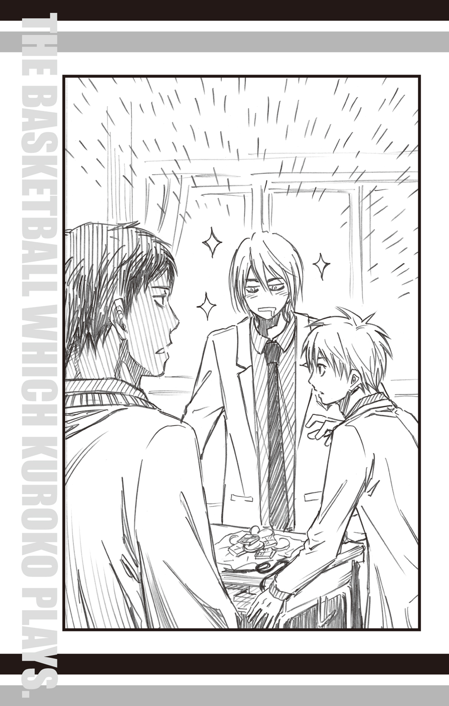
紫原が早速クッキーを口に運ぶ。黒子が今まで見た中で一番幸せそうな顔だった。
「テツも今日、家庭科だったのか？」
「いえ、これは黄瀬くんからもらったんです」
自分もクッキーを取って、口に入れようとした青峰の手が止まる。
「黄瀬がくれたのか、これを？ おまえに？」
じっとクッキーを見つめる瞳は、疑いに満ちていた。
「毒でも入ってんじゃねーの......？」
「......ボクってそんなに黄瀬くんに嫌われているように見えてたんですか」
青峰がクッキーを食べることを躊躇している間に、紫原は全体の三分の二を平らげた。
「そだ。お礼にいいこと教えてあげる」
紫原は指先についたクッキーの粉をぺろりと舐めて言った。
「赤ちんはミーティングルームじゃないかな」
知ってんなら早く言えよー、と思わずうなだれた青峰の手から、紫原はひょいとクッキーを取り上げて、ぽいっと口に放りこむ。
さすが末っ子。迷いのない動作だ。
黒子が感心していると、紫原は「そうそう」と付け足した。
「たぶんね、主将と一緒だと思うよ」
部室棟にあるバスケ部のミーティングルーム。そのドアの前で黒子は深呼吸をひとつ。
そして静かにノックする。
「......開いてるぞ」
「失礼します」
ドアを開けると、予想外の人物が黒子たちを迎えた。
「あれ、先輩たちだけすか？」
青峰が室内を見回す。主将の虹村修造と他に三年部員がふたり、テーブルを囲むように座っていた。中にいたのは、その三人だけだ。
「どうした、何か用か？」
虹村の問いかけに、黒子は赤司を捜していることと、その理由を簡潔に説明した。
「へー、赤司が黒子にな」
虹村が鋭い眼光をすっと細める。
「黒子、なんか悪さでもしたか？」
「え？」
驚く黒子の前に、立ち上がった虹村が近寄った。
「赤司が話を聞くくらいだ。おまえもあいつを怒らせるようなこと、したんだろう？」
「............え？」
ぴしり、と黒子の動きが止まる。青峰も息を呑んだ。
「どーなんだ。あぁ？」
虹村に詰め寄られても、黒子は何も答えられない。
黒子は心当たりがまったくなかった。
虹村の射貫くような眼差しが黒子の心の奥まで見通すかのように突き刺さる。
青峰も、三年生ふたりも、黒子と虹村を見守り、室内がしんと静まる。
その沈黙を破ったのは、虹村だった。
「......なんてな」
「え？」
冗談だよ、と虹村が口の端をあげた。途端に、張り詰めていた空気が緩む。
「なっ、冗談って、え？ 主将？」
青峰が忙しなく瞬きを繰り返し、黒子と虹村に視線を往復させる。
「だから、冗談だっての。おら、なに固まってんだ。しっかりしろ」
そう言うと、虹村は黒子の額を小突いた。金縛りが解けたように、黒子がびくっと肩を震わせる。
「............冗談がきついです、主将」
「おまえがやけに緊張してるからさ。からかいたくなったんだよ」
いたずらが成功し、虹村はにやりと笑った。
「オレに話しかけるの、そんなに緊張するか？」
のぞきこむようにして言われ、黒子は「それは......」と言葉を濁した。
聞いていた三年生たちが、はははと笑い、助け船を出す。
「虹村、あんまり黒子をいじるなよ。お前ににらまれたら、誰だって緊張するっての」
「わるいな、黒子。虹村は基本凶悪そうな顔をしてるけど、意外といたずら好きで、そこそこいい奴なんだ」
「誰が凶悪面だっ！」
虹村がむっとして三年生たちをにらむ。彼らは「その顔だよ」と笑った。
だが黒子はやはり戸惑った顔で尋ねた。
「......あの、何かあったんですか？」
「あん？」
黒子の質問に虹村が振り返る。
「いえ......ボクが緊張してしまったのは、ここに入ったとき、先輩がたが深刻そうな顔をしてらしたので......」
黒子の言葉に、虹村も含めた三年生たちは口をつぐんだ。その様子に、青峰も異変を感じる。
「マジでなんかあったんすか？」
青峰はうかがうように虹村を見つめた。黒子もじっと虹村を見つめる。
虹村は「あー......」とぼやき、頭をかいた。
「黒子は最近、やけにまわりのこと、見てんなって思ってたが、こういうことにまで目がいくとはな」
「すみません。聞いてはいけませんでしたか？」
「いや、いい。まあ、ここだけの話だが......灰崎がまたやらかしてな」
虹村が赤司から聞いた話によれば、灰崎が他校生と乱闘騒ぎを起こしたらしい。他校生は病院に運ばれ、全治三週間の傷を負った。だが、灰崎が加害者だという確たる証拠がなく、生徒指導の先生に至ってはその情報を未だに把握していないそうだ。
「当初、灰崎がケンカしてたって目撃情報があったんだが、いつの間にかうやむやになっちまっててな。あいつはそういうの、隠すのがうまいから......。まあ、おかげで部全体が連帯責任を取らされることはないとはいえ......喜べたことじゃねーな」
やるせないため息を虹村はつく。
「そう、でしたか......」
黒子が重く答える。青峰も口を閉じたまま、複雑そうな表情を浮かべた。そのふたりの様子に虹村は、
「バーカ。おまえらふたりが気にすることじゃねーんだよ」
と、ビシビシッと黒子と青峰の額にデコピン制裁を加えた。
「こういうのは、主将らが考えればいいんだから、おめーらはのほほんとバスケしてろ」
突然のデコピンに、青峰と黒子は額をさすりながら、虹村を見つめた。
「......けど、実際のほほんとバスケしたら、主将怒るじゃないすか」
「あたりまえだ。舐めてんのか」
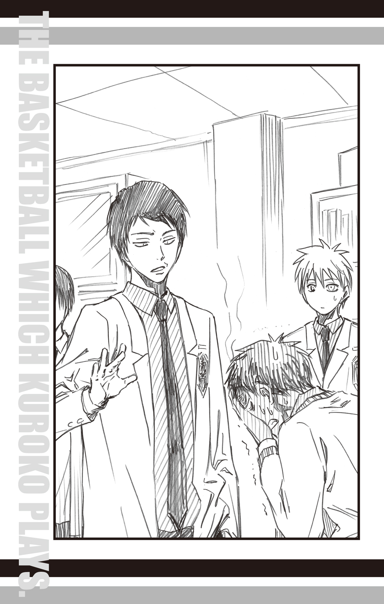
ビシッ。本日二度目のデコピンが青峰の額に決まる。
正確に同じところを狙われ、青峰は「いって～」とうめいた。そんな青峰を尻目に虹村は言う。
「んなことより、赤司捜してんだろ。あいつなら、今頃......」
そしてようやく、黒子は赤司の居場所についての有益な情報を得た。
黒子と青峰が退出したあと、ミーティングルームには虹村と三年生ふたりが残された。
「とっさによくあんな噓がつけたな」
三年生の一人が口を開いた。
「別に噓じゃねーだろ。実際、赤司がここにいたときはその話をしてたし」
虹村が椅子に座りながら言う。
「しかし、黒子がこっちの雰囲気に気づくとは思わなかった。......おめーらが深刻になりすぎんだよ」
「深刻にもなるだろ」
もう一人の三年生が呆れ顔で言った。
「虹村が主将をやめるなんて聞いたら」
三年生ふたりの視線が虹村に集まる。彼に呼び出され、そのことを聞かされたのはつい先ほどのことだ。正式に発表される前に一応伝えとく、と虹村は軽く前置きして言った。
自分に代わって、赤司征十郎が主将になる、と。
もちろん三年生ふたりは驚き、早まるなと諫めたが、虹村は「もうコーチには伝えた」と淡々と告げるだけだった。その後、彼の口から理由を聞かされたふたりは、もう何も言えなかった。
思わず沈黙したところへ、黒子と青峰が訪れたことは重くなった空気を変えるにはちょうどよかったのかもしれない。
黒子をからかう虹村からは、無理をしている様子もなく、いつもどおりの彼らしさが感じられた。それが余計に彼の決意が一時の感情によるものではなく、きちんと受け止めているのだと教えていた。その潔さが、友人としては少し寂しかった。
「......虹村はすげーよ」
三年の一人が頰杖をつく。
「そんな決断、なかなかできねーぜ？ いつの間にそんなに大人になったんだ」
後半、冗談めかして言う級友に、虹村は小さく笑った。
「決めたんだよ、去年の春に」
「なにを？」
「一番大事なものを奪わないでもらえるなら、どんなことも受け入れるってな」
虹村の願掛けにふたりは目を伏せた。その大事なものが奪われつつあるのを聞いたばかりだ。
虹村は静かな顔をしていた。本人自身も熱くなりやすいと自覚しているのに、とても静かな表情だった。
「......オレは虹村の主将、けっこう好きだったぜ」
「オレもだ」
級友ふたりの労いに、虹村ははっと鼻で笑う。
「なに終わったみたいな顔してんだ。まだ全中が残ってんだろ」
「......だよな」
そして彼らはようやく笑みを交わした。
「どうしたんだ、ふたりとも？」
「どうしたんだ、じゃねーよっ」
ようやく見つけた赤司に、青峰は思わず悪態をついた。
「おまえ、あちこち行きすぎだろ」
校内を散々歩き回り、最後に虹村に教えてもらった場所に赤司はいた。
彼らがもっとも馴染みのある場所――体育館である。
黒子と青峰が訪れたとき、赤司はひとりで黙々とシュートの練習をしていた。
「......赤司くんも自主練をするんですね」
黒子は驚きの眼差しで赤司を見つめる。昼休みにあれだけの仕事をこなし、さらにバスケの練習に精をだすとは。
「副主将を任されているのに、無様な真似はできないからね」
赤司は手に持っていたボールを撫でる。
「ふたりも練習に来たんじゃないのか？」
その問いかけに黒子は「あ」と小さく声を漏らした。赤司の勤勉さに圧倒され、当初の目的を忘れていた。黒子は朝からずっと気になっていたことを、赤司にぶつけた。
「赤司君、ボクに聞きたいことってなんですか？」
「......ああ、そのことか」
赤司は微笑する。
「黄瀬のことだよ」
青峰が「おっ」と目を丸くした。緑間の言っていたことが当たったようだ。
しかし、緑間の推測は完全な正解にはたどり着かなかった。
「昨日、二軍の練習試合に黄瀬と一緒に参加しただろう。どうだった？」
「どう......とは？」
「黄瀬の態度が変わったんじゃないか？ 少しは軟化しただろう」
まるで見てきたかのように言う赤司に、黒子は小さく息を呑んだ。そして青峰は、
「黄瀬、なんかしたのか？ 勝負は結局してねーんだろ？」
と首をかしげる。
「青峰、その『なんか』についてではないよ。オレが聞いたのは、黄瀬の黒子に対する態度が柔らかくなったのでは、ということだ」
赤司の丁寧な説明を聞き、やっと理解できた青峰は「そりゃねーよ」と笑った。
「だって、あの黄瀬だぜ？ テツに対してあんなにツンツンしてる奴が何で柔らかくなるんだよ」
「どうなんだ、黒子」
赤司が再度問いかける。黒子はうなずいた。
「赤司くんの言うとおりです。黄瀬くんの態度はボクが少し戸惑うぐらい変わりました」
青峰は本当だろうかと訝しげな顔をする。だが赤司にとっては想定していたことらしく、
「そうか。それを確認しておきたかったんだ」
とうなずいた。
ずっと気になっていたことがわかり、黒子が「胸のつかえが取れました」と満足げに微笑む一方で、青峰はやれやれと肩を落とした。
「あんだけ校内を歩き回って、結局それだけかよ......」
「オレもまさかわざわざ聞きにくるとは思わなかったよ」
「すみません。気になってしまって......」
黒子はぽりぽりと頰をかいた。赤司は微笑むと、体育館の隅に畳んでおいたブレザーを取りあげた。
それをまるで見計らったように午後の授業の予鈴が鳴り響く。
「やべっ！ 次、体育だ！ テツ、赤司、また放課後な！」
青峰は慌ただしく駆け出した。
「あ......」
黒子は何かを言いかけるが、脚の速い青峰は瞬く間に体育館から姿を消してしまった。
「青峰になにか伝え忘れか？」
ブレザーに腕を通しながら、赤司が黒子に尋ねた。
「お礼を言いたかったのですが、間に合いませんでした。......いつも言いそびれるんです」
「いつも、か」
赤司がふっと意味深に微笑を浮かべていることに気づき、黒子は「なんですか？」と赤司を見つめた。
「青峰とは距離が近すぎて、改まってお礼が言えないんだろう？」
赤司の言葉に黒子は息を呑んだ。
図星だった。
黒子は青峰にずっと伝えられずにいる。
感謝の言葉を。
バスケを諦めようと思ったあの日、青峰だけが黒子を信じてくれた。
一軍に入っても結果が出せずに降格されそうになったときは、自分自身の降格を賭けてまで黒子を庇い、信じてくれた。
青峰の信頼があるから、黒子はいまバスケを続けている。
その気持ちに応えるためにも、毎日厳しい練習に励んでいるが、本当は言葉でもきちんと伝えたいと思っていた。
もちろん、伝えたい相手は青峰だけではない。
体育館を出て教室へと向かう途中で、黒子は隣を歩く赤司をちらりと盗み見る。
「どうかしたか？」
赤司は黒子の視線に気づき、問いかけた。
他の人の名前を挙げられた直後では言えるはずもなく、黒子は別のことを尋ねることにした。
「......なんでわかったんですか？」
「顔に書いてあるからな」
「............」
黒子は思わず顔に手をやる。その様子に、赤司がくすりと笑った。
「安心していい。普通の人は気づかないレベルだ。オレが気づいたのは、黒子の言葉が呼び水になったからだよ」
「それだけで、わかるものですか？」
「わかるときはね。......青峰はまっすぐな奴だ。変にタイミングを考えず、面と向かって率直に言えばいいんじゃないかな」
「そうなんですが......いろいろお礼が貯まってしまって、もはや言葉だけじゃ足りないというか......」
黒子が困ったようにぽりぽりと頰をかくと、赤司は腕を組み、顎に手を添えた。
「なるほど......。だったら帝光祭でクイズ研のスタンプラリーに参加したらどうだ？ 今年の賞品なら青峰も喜ぶんじゃないかな」
「スタンプラリー、ですか......？」
赤司がクイズ研のスタンプラリーの説明を終える頃、ふたりは黒子の教室にたどり着いた。黒子はぺこりと赤司に頭を下げて、教室へと入っていく。
その背を一瞥した後、赤司も自分の教室へと歩き出した。
「......さて、どうするのかな」
赤司のつぶやきは誰に届くこともなく、廊下の喧噪に消えた。
その日の練習後。ロッカールームで青峰は信じられない光景を目の当たりにした。
「青峰っち、黒子っち!! 帰りにコンビニでアイスでも食ってかねーっスか？」
にこやかに黒子に話しかける黄瀬に青峰は思わず叫んだ。
「変わり身はえーなオイ！」
「何言ってんスかー。ソンケーする人にはケーイを忘れない男っスよオレは！ ねー、黒子っち！」
黒子は「はぁ」と答えるのみだ。
青峰はようやく昼休みに黒子が言っていたことの意味を理解した。まさに赤司が言っていたとおりだ。ちらりと周囲を見ると、緑間も多少は驚いているようだが、ある程度予想していたことらしく、帰る支度の手を止める様子はない。紫原に至ってはそもそも興味がないようだ。
「ま......まあ、よくわかんねーけど、テツを認めたってんなら、いーんじゃねーの？」
わかったのは、どうやら今回も赤司の掌の上だったってことだけだ。
黄瀬は青峰の返事を「行く」ととったらしく、「じゃー、決まりっスね！」と楽しげだ。続いて、帰る支度を終えた紫原と緑間に目をつけた。
「あ、紫っちも行くっスか？」
「えー......」
「おごるっスよ！」
「行く！」
「緑間っちは？」
「今日は遠慮しておく。赤司と少し話があるのだよ」
ロッカールームを出て、緑間とはそこで別れる。その後、偶然会った桃井も誘って総勢五名での帰宅となった。
一番星が輝き始めた空の下を、黒子たちは歩く。
「黄瀬くん、甘い物は控えているのでは？」
黒子が尋ねると、
「練習後は別っスよー」
と、黄瀬は笑った。
「そうそう。アイスは別腹だよねー」
「おめーはいつも別腹だろうが」
紫原の同意に青峰が突っこむ。そのやりとりに、一番うしろを歩いていた桃井はくすりと笑った。
「なんか......いいね」
「あん？」
青峰が桃井に振り向く。
「どうした？」
「こういうふうに、みんなでそろって帰るのって珍しいなと思って。仲間って感じがしていいよね」
桃井が嬉しそうに言うと、青峰は呆れ顔で答えた。
「感じってなんだよ。オレら、普通に仲間だろ。な、テツ？」
同意を求められ、黒子は隣を歩く青峰を見上げる。
青峰は彼を見ることなく、視線は前方に戻っていた。
返事をわざわざ待つまでもなく、青峰にとっては至極当然なことだったらしい。
黒子は小さく微笑んで言った。
「......そうですね」
温かな誇らしさが胸に溢れた。
同じ頃、緑間と赤司もまた帰宅の途にあった。
「昼間、黒子がおまえを捜していたが、会えたのか？」
緑間の問いに、赤司はうなずいた。
「ああ、会えたよ」
そう答えると、赤司は何かを考えるように沈黙した。
「どうした？」
緑間が尋ねる。すると赤司は、昼休みのことを思い出していた、と短く答え、
「......彼はどうするのだろうな」
と、ぽつりとつぶやいた。
「なにがだ？」
要領を得ない話し方に、緑間は怪訝そうに赤司をうかがう。
そのとき、風が吹いた。
春先の強い風に、緑間は思わず眼を細め、手をかざした。
風が緑間の視界と音を一瞬さらった。
その一瞬に――
「友情に浸るのもいいが、我が部の理念がそれと反したとき、彼はどうするのだろうと思ったんだ」
つぶやかれた言葉とともに、風に揺れた前髪の下で赤司の瞳が冷たく冴えていたことを知るものはいない。
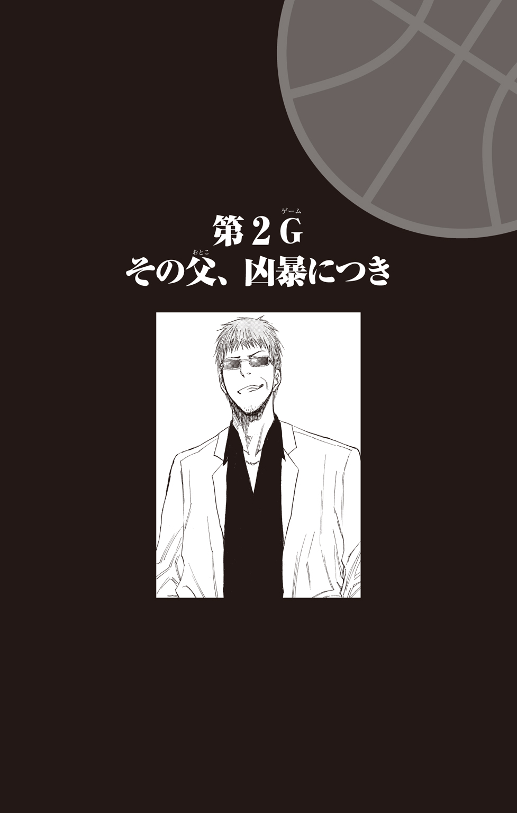
洗面所のドアを開けると、そこには――天使がいた。
「あれ、パパ？」
天使はドライヤーを片手に振り返る。
そのあまりのかわいらしさに、相田景虎は顔を洗いに来たことを忘れ、両手を広げて狭い洗面所を突進した。
「リコたん、今日も一段ときゃわいいっっ!!」
されど天使こと、景虎の一人娘リコも慣れたもので、
「だから、そういうのいいってばっ」
と、ドライヤーの送風口を躊躇なく景虎に突きだす。
「ぶおぅ!?」
ほどよい温風も顔面に吹きつければ充分な牽制になる。景虎は驚きの声をあげて、足を止めた。
「リ、リコたん、ひどい......」
「いくら言っても学習しないパパが悪いんじゃない」
リコはやれやれと呆れ顔で、ドライヤーのスイッチを切った。そのままコードを回収し、洗面台の棚にしまう。どうやらこれから出かけるらしく、ロングセーターにショートパンツを合わせ、いつも元気に歩き回る脚はカラータイツできめている。髪をふわりと整え、身支度はすんだようだ。
「こんな朝早くから出かけるのか？」
「うん。久しぶりに買い物してこようと思って。うっかりしてたけど、今ってクリスマスセール中なのよね」
暦は師走に入り、世間はすっかりクリスマス一色になっていた。だが、誠凛高校バスケ部のメンバーには、そんなものは目に入らない。たとえ目に入っても、「ああ、そんなものもあったよね」程度のことで現実味がない。なにしろ、同時期にウィンターカップが控えているのだ。出場を決めてから平日も休日もバスケ一色の毎日となっている。
しかし何事も行き過ぎては毒となる。特にスポーツ選手のオーバーワークは怪我につながりやすい。このため今日は学校も休みということもあり、練習を完全にオフにしていた。
その貴重な休日を利用して、リコは買い物に出かけることにしたようだ。
「じゃあ、行ってくるね」
リコはそう言って、洗面所を出ていく。
そんなリコに景虎は何気なく声をかけた。
「車で送ってやろうか？」
「えっ......!?」
景虎は「ん？」と首をひねる。てっきり喜ばれるかと思ったのだが、今のリコの反応は、明らかに狼狽しているように見えた。
「い、いーよ！ パパもここんとこ忙しかったでしょ？ 家でゆっくりしてて」
「車で送るぐらい、たいしたことないぞ？」
「へーきっ、へーきっ！ ひとりで行けるから！ じゃねっ！」
リコは早口でまくしたてると、逃げるように洗面所をあとにした。
ぽつねんと取り残された景虎は、無精ひげが伸びた顎を撫でて考える。
どう考えても、さっきのリコの態度は怪しい。
まるで自分と一緒に出かけるのはまずいというようなそぶりだった。
誰かと待ち合わせていて、その相手に父親を見られるのが恥ずかしいのだろうか。
しかし景虎はその可能性を否定する。
景虎は娘に慕われているという揺るぎない自信があった。これは自慢ではなく、厳然たる事実だと景虎は認識している。
ならば、考えられるのは逆の可能性。
誰かと待ち合わせをしていて、その相手を父親に見られたくない。つまり、それは――
男!?
雷に打たれたような衝撃が景虎の体を駆け抜ける。
娘を持つ父親が一度は味わう最悪で苦渋の日がいま、始まろうとしていた。
「まさか、おまえだったとはな......!!」
銀色の鈍い輝きを放つ銃、コルト・ガバメントをぐりっと少年の背に押しつけ、景虎は引き金に手をかけたまま、呪いの言葉を吐くように少年の名前を呼んだ。
「薄いの!!」
「......黒子です」
相変わらずの感情の読めない表情ではあるが、状況が状況だけに若干困惑の色をにじませて、黒子テツヤは答えた。
なにしろ十二月の寒空の下、屋外バスケコートの片隅で黒子は両肘を曲げた形でホールドアップさせられているのだ。困惑するなというほうが難しい。
ちなみにコートには景虎と黒子のみで、リコの姿はない。彼女は黒子との約束をすますと、コートを出て行った。黒子は彼女を見送り、帰る支度をしようとしたところで景虎に背後をとられて、いまに至る。
黒子は小さく息を吐くと、言った。
「......そろそろ理由をお聞きしたいのですが」
「んなもん、自分の胸に手をあてりゃ、わかるだろ」
黒子は左右のホールドアップしている両手を見上げつつ、言った。
「手を下ろしていいですか？」
「いいわけねえだろ」
黒子の背中にあてられた銃口がさらにぐりっと押しつけられる。
「......理不尽です」
黒子はますます困り、小さく首をかしげた。
その背に向かい、景虎は冷徹に宣告する。
「とりあえず死んで、詫びろ」
「とりあえずで殺されては困ります。自分では胸に手をやれないので、やはり理由を教えてください」
黒子の再度の願いに、景虎が小さく舌打ちした。
「往生際が悪ぃな。......んなもん、オレの娘とデートしたからに決まってるだろうが！」
娘を持つ父親にとってこの世で一番おぞましい単語を口にし、景虎の怒りのボルテージがさらに上がる。すると、目の前の少年はさらりと、
「ボクとカントクはデートしていません」
真っ向から否定され、景虎はいきりたった。
「ばかやろう！ おまえとリコがここにいたってことはわかってんだ。ネタはあがってんだよ！」
ネタどころか、景虎はその現場を目撃していた。
父親が娘のデートを知った場合の行動は大きく分けて二つ。
娘が帰ってくるのをそわそわと待つ『見守り派』と、何も気づいてないふりをして娘に頻繁にメールを送り続けるなどの行動に出る『現状確認派』である。
無論、景虎は後者であり、しかも過激派であった。
自宅の洗面所で愛娘の異変に気づいた景虎は、すぐさま動いた。害虫を追っ払うのに必要と思われるもの一式をすばやく身につけ、リコの後を追ったのである。聞きこみなどをしながらリコを捜していくと、やがてこの屋外コートへとたどり着き、リコと親しげに話す黒子の姿を見つけた。
オレのリコたんがあんな薄いやつと......!?
一番予想外な少年の登場に、景虎がいぶかしんでいると、ふたりは驚くべきことをした。
なんとリコが黒子に市販のスポーツ飲料を差し出し、それをあろうことか、この影の薄い少年は受け取ったのだ。
景虎はその光景を思い出し、殺気を孕んだ声で言った。
「リコからドリンクを差し入れしてもらうなんざ、てめぇには早すぎだ！」
黒子は虚を衝かれたように目をまるくし、しばし考えてから口を開いた。
「でも、あそこでお断りしたらカントクに失礼です」
「当たりめぇだ！ そんなことしたら、脳天ブチ割るだけじゃすまさねぇ！」
景虎の剣幕に黒子は上げたままの両手を見上げる。
「受け取ったら受け取ったで、この扱いでは理不尽です」
「愛情ってのは理不尽なもんなんだ」
「それを力説されても......」
黒子はますます困り果て、「それに......」と続けた。
「カントクの本当の目的地はここじゃないと思いますよ」
「なんだと!?」
ようやく聞く耳を持った景虎に、黒子はまずリコと会った理由を説明した。それによると、リコがここに来たのは、黒子の体調チェックのためだという。
本来、今日は休息日なのだが、黒子はリコに相談し、条件付きで午前中の二時間だけ練習する許可をもらった。その条件とは、オーバーワークにならないよう、練習後の黒子の体をリコがチェックし、マッサージなどのアドバイスをするというものだった。
「そこまでしていただくのは気が引けたので遠慮したんですが、カントクは出かける用事があるから、そのついでだって言ってくださって」
「ということは、おまえはオマケか!?」
「......そうなると思います」
黒子はこくりとうなずいた。と、次の瞬間、景虎の手がバシッと黒子の背中を打った。突然のことに黒子がびくっとなる。
「なんだ............なんだ、そうだったのか！」
景虎は晴れやかに笑って黒子の背をバシバシと豪快に叩いた。
「オレもおかしいと思ったんだ！ おまえみたいな、いるかいないか、わからねー奴とリコが釣り合うわけないもんな！」
「............そうですか」
バシバシと叩かれる背は痛いが、背中の銃口が下ろされたのを感じ、黒子がようやく緊張の糸をほどいたとき、景虎がぴたりと手を止めた。
「待てよ......だったら、リコの本当の目的ってなんだ？」
黒子はズキズキする痛みに耐えながら、「さぁ......」とか細い声で答える。
「さぁ、じゃねぇ！ どこに行くとか、聞いてないのか！」
「......そういえば、駅前で待ち合わせがあると言ってました」
なにっ、と景虎は目を見開いた。待ち合わせということは、それはやはり......、
デートか!!
「おのれ、どこのどいつだ！」
景虎はそう叫ぶと、がしっと黒子の腕をつかんだ。
「え？」
黒子が驚きの声をあげ、景虎を振り返る。そして彼は見た。
この世で一番厄介なイキモノ――娘を溺愛する父を。
「おまえが案内しろっ」
景虎はそう言うと、絶句したままの黒子を引きずるようにして駆け出した。
最寄り駅の南側にはバスロータリーがある。その円の内側はちょっとした憩いの場として、花壇やベンチが設けられていた。このため、地元の人間にとって「駅前で待ち合わせ」とは、この広場を意味する。休日ではあるが午前中のせいか、それほど人は多くない。おかげで道路の向こうに広場が見えた段階で、黒子に案内されてやってきた景虎はリコの姿を容易に見つけることができた。
だが、同時に忌まわしき存在も発見する。
「おのれ、キューティクルサラ男......!!」
リコと楽しげに会話する、サラサラヘアが特徴的な少年・伊月俊を見つけた景虎は、またも呪いの言葉を吐いた。
「二度とリコをデートに誘えないぐらい、パンチパーマにしてやる......！」
そのまま突進して行く景虎を黒子は必死に引き留めた。
「待ってください。そんなことをしたら、伊月先輩は試合に出られなくなります」
「そりゃあ、自業自得だ。つか、今どきパーマじゃ出場禁止にはならねーだろ」
「出場禁止にならなくても、羞恥心のあまり先輩が出場辞退してしまうかもです」
「じゃあ、ますます自業自得だな」
景虎は黒子の制止を振り切り、ずんずんと広場へ近づく。あとは横断歩道を渡れば広場......というところで、黒子の一言が景虎の動きを止めた。
「尾行していることがバレたら、カントクに軽蔑されますよ」
歩みを止めた景虎の目の前で、歩行者用の信号が赤に変わる。どうにか引き留めることに成功した黒子に景虎が振り返り、ジロリとにらみつけた。
「......軽蔑するわけ、ねーだろ」
景虎の口調は相変わらず強いものだったが、うっすらと疑念の色があることを黒子は見逃さない。
「ないとは言い切れません。年頃の女性はいろいろ難しいと本で読みました」
「............」
黒子の一言は景虎の心を捕まえたようだ。
事実、景虎に多少の迷いが生じていた。
今すぐ出て行って、リコとキューティクルサラ男を引き離したいが、ここで姿を見せるとリコに「あとをつけてきたの!? サイテー!!」と言われる可能性も否定しきれない。
娘は大事だが、娘に嫌われることはしたくないのが父親だ。
となれば、どうにかしてリコが見ていない瞬間を狙い、キューティクルサラ男だけを捕まえる必要がある。
「......仕方ねぇ。少し様子を見るぞ」
景虎はそう言うと、黒子を連れて近くのビルの陰へと入った。そこに身を隠し、広場を監視しながらキューティクルサラ男を捕獲する算段を練る。
リコとキューティクルサラ男の仲の良さそうな姿が、景虎の理性をジリジリと削る。それにつれて、徐々に不穏な雰囲気を増していく様子に、黒子もどうしたものかと考えをめぐらせていると、
「やっほー、カントク～！」
聞き覚えのある、明るく元気な声が聞こえた。
景虎が建物の陰から首を伸ばし、目を瞠った。彼らがいる場所とは、広場を挟んでちょうど反対側の道から、人なつっこい顔の少年と、穏やかな笑みを浮かべた長身の少年が姿を見せたのだ。
「ニャンコ小僧とムッツリ......!?」
広場へやってきた二人、ニャンコ小僧こと小金井慎二は「遅れてごめーん」と手を合わせて謝り、ムッツリこと水戸部凛之助も申し訳なさそうに頭を下げた。
リコは笑顔で、伊月は困り笑いで二人を迎えている。
「......わりと大人数で待ち合わせていたんですね」
予想を上回る集合ぶりに、黒子も多少驚きの眼差しで四人を見つめた。二年生みんなで遊ぶ予定なのだろうかと考えていると、
「リコを待たせただと......？」
ふしゅーっと荒い鼻息が聞こえ、黒子ははっと景虎を見た。
景虎は闘志溢れる闘牛のような様子で、小金井と水戸部をにらみつけている。
「デートだけでも罪深いってのに、遅刻するとはいい度胸じゃねぇか......！」
「......」
目をギラギラと光らせ、ボキボキッと拳を鳴らす姿に黒子もかける言葉が見つからない。
だが、「見つかれば、軽蔑される」という忠告がまだ効いているらしく、景虎は虎視眈々と獲物を狙うだけだ。
しかし、好機は突如訪れた。
ふいにリコが小金井たちから離れたのだ。
どうやら電話がかかってきたらしく、彼女は携帯電話を耳にあて、身振りで「ごめん」と三人に伝えると、背を向けて話ながら歩き出した。しかも、景虎がいる方向とは逆方向にだ。
景虎の行動は速かった。すぐさまジャケットの内側に隠していた捕獲網を取り出すと、黒子が止めるより速く、伊月たちへと駆け寄り、それを投げつけた。
「へ？」
予期せぬ襲撃に、伊月と小金井が間抜けな声を漏らし、水戸部も口をぽかんと開く。そんな彼らの頭上にばさぁぁっと落下する網。
「ん、なんの音？」
奇妙な気配にリコが振り向くと、もはやそこに人影はなく、伊月たちの姿は忽然と消えていた。
小金井たちにとって、まさにそれは未知の経験だった。
自分めがけて網が降ってくることも初体験なら、その捕獲者に凄まれ、言われるがままに引っ張られて路地裏に転がされるのも初体験だ。小金井、伊月、水戸部はそろって捕獲網の中でおろおろしていた。
「か、景虎さん、これなんですか!? 新しい練習!?」
小金井は自分をぐるんと包む網の中から、目の前で仁王立ちする景虎を見上げた。
「そんなわけがあると思うのか？」
有無を言わさぬ雰囲気の低い声に、小金井は「ですよねっ！」と身を固くする。
「あの......できれば説明していただきたいのですが......」
伊月が困惑した顔で尋ねる隣で、水戸部もこくこくとうなずく。そんな彼らに景虎は苛ついた顔で怒鳴った。
「自覚がねぇとは言わせねぇぞ！ んなもんっ、リコとデートして、あまつさえ遅刻したからに決まってるだろうが!!」
「デート！」
耳にまったく馴染みのない単語に小金井が思わず叫ぶ。悲しいかな、その単語と小金井自身の接点はゼロだ。ということは、
「えぇ!? 伊月、そうなの!? カントクと!?」
小金井はぱっと、バスケ部で一番モテる男、伊月に振り向いた。
「ち、ちがっ！ オレはしてないよ！」
「じゃあ、水戸部!? いつの間に!!」
小金井の問いかけに水戸部がぶるぶるぶるっと勢いよく首を振る。
薄々わかってはいたことだが、改めて他のふたりに確認をとった小金井は景虎を見上げた。
「景虎さん、それオレたちじゃないですよ！」
「なに言ってんだ！ ついさっき、待ち合わせしてたのが何よりの証拠だろうが！」
「待ち合わせ!? オレたち、カントクとは待ち合わせてないですっ！」
「......なに？」
小金井が語るには、待ち合わせをしていたのは伊月、小金井、水戸部の三人で、小金井の寝坊のせいで、彼を迎えに行った水戸部も約束の時間に遅れ、ひとり待っていた伊月がたまたまリコと会っただけ、ということだった。
「偶然会った？ そんなこと信じられるか！」
景虎は凄み、ギロリと伊月をにらむ。
「そんなこと言われても、待ち合わせに駅前を使うのは、よくあることですし......。ハッ、駅前の店は、えっ、気前いい！」
「伊月、空気読んで！」
小金井と水戸部が慌てて伊月の口を塞ぎ、おそるおそる景虎を見上げた。これ以上、事態が混乱することは避けたかったのだが、予想に反して景虎はなにやら考えこんでいた。
「確かに駅前で待ち合わせするのはよくあることだ......」
「そ、そうですよ！ それにほら、オレたち三人とカントクがデートって、おかしいじゃないですか」
「そうだな。おまえらみたいな、ノンオイルドレッシングな奴らにリコは似合わん」
「ノ、ノンオイルドレッシング......？」
小金井たちは互いに顔を見合わせた。それは油っぽいという意味なのだろうか。しかしノンオイルなら、そうではなさそうだ。三人はまじまじと互いの顔を見つめた。
「あの、それって......もしかして草食系男子ってことですかって水戸部が聞きたいみたいなんですけど......？」
「違うわ。男の顔を分類するなら、しょうゆ顔ソース顔って決まってんだろ。そのどっちにも当てはまる顔じゃねぇから、まあ、ノンオイルドレッシングってとこだ」
ジェネレーションギャップだ、と小金井たちは思った。不本意ではあるが、草食系男子と言われるほうが、まだわかりやすい。
「って、オレたちの顔のことは関係なくて！ デートするなら普通は一対一でするはずだってことですよ。オレたち三人とカントクじゃ、単なるグループ行動になっちゃう」
「なるほど、一理ある......」
小金井の指摘に景虎は素直にうなずいた。となると、リコが待っていたのは別の人物となる。
思い返してみると、彼らを捕獲する前にリコは誰かと電話していた。もしかしたら、それこそが本当の約束の相手かもしれない。ということは、今度こそ......
男か！
「まずい、移動したか!?」
景虎は踵を返し、路地裏を飛び出した。その後ろ姿を小金井たちは呆然と見送る。
「大変だなー、カントクも」
小金井がしみじみと言った。水戸部も苦笑いを浮かべてうなずく。伊月は肩を落とし、からみつく網を引っ張った。
「それより早く出よう。せっかくの休日がこれじゃあな......」
そう言うと、伊月は顔を上げて声をかけた。
「黒子、手伝ってくれ」
「え、黒子!?」
小金井が驚いて伊月の視線の先をたどると、先ほどまで景虎が立っていた場所の脇に、黒子がひっそりと立っていた。
「......どうも」
黒子はぺこりと頭を下げた。
「なっ、いつからいたんだよ、黒子！」
「最初からいました。ですが景虎さんの剣幕がすごくて、すっかり見えなくなってしまったようで......すみません」
黒子が申し訳なさそうに頭を下げる。
「見てたなら、助けてくれよー」
「それが......とても口を挟める雰囲気ではなかったので......」
黒子の言い分に小金井は、「だよね......」と苦笑する。
伊月は小さく息をつき、天を仰いだ。
「......あれが、相田家の愛だ」
「うん、もういいから。黒子、手伝ってー」
水戸部と小金井は肩を落とし、黒子に救助を要請した。
景虎が駅前の広場に戻ったとき、すでにリコの姿はなかった。
念のため周囲の人に聞いてみたが、リコらしき少女を見たという人は見つからない。
電車に乗ったのであれば追いかけようがなく、万事休すだ。
自分がここを離れてどれくらい経つだろうかと、景虎は腕時計に目を落とした。
時刻はちょうど十二時。お昼時である。
閃くものがあり、景虎はぱっと周囲を見回した。探したのは若者が入りそうな飲食店。時間的にどこかの店に入り、お昼ご飯を食べている可能性は高いだろう。
どんな小さな店も見落とさないように目を皿のようにして周囲を見回す。
狙いは、当たった。
バスロータリーを囲むようにして並ぶビルの中に、マジバーガーのチェーン店があり、その二階の窓辺のテーブル席に、なにより大切な娘の姿と、
「天然ボケ男、貴様か......!!」
のほほんとした笑顔を見せる木吉鉄平が座っているのを見つけたのだ。
ふたりはハンバーガーやポテトを口に運びながら、楽しげに話している。
どう見てもデートだった。
「とうとう見つけたぞ......！」
広場で仁王立ちする景虎は、殺意の矛先を木吉に狙い定める。
マジバーガーに向かい、怒りの一歩を踏み出したところで、リコたちに変化があった。
天然ボケ男の隣に、新たな人物が座ったのである。
景虎もよく知るあの人物だ。
「プ、プッツンメガネ、おまえもか......！」
席に座ったのはメガネをかけた少年、日向順平。彼は木吉に何か言っている。木吉が朗らかに答えると、なぜか日向は顔をしかめ、リコはからからと笑った。
とても微笑ましい雰囲気だ。だがもちろん、景虎が微笑ましく思えるわけがない。
「ふたりして、よっぽど生き急ぎてぇようだな......」
微笑みの代わりに残忍な笑みを浮かべ、景虎はジャケットの背中に隠し持っていた木刀を、すらりと抜き出した。
広場の通行人が、どこから出したのだろうかと思わず目を擦る。
景虎は周囲の視線を気にすることなく、ジャケットを脱ぎ木刀をブンッと振るった。
「仲良く送り出してやるよ、あの世に......ん？」
マジバーガーへと再度歩き出した景虎の動きがぴたりと止まる。改めて、窓辺に座るリコたちをじいっと見つめた。
リコの前にはテーブルを挟んで天然ボケ男。その隣にプッツンメガネ。
脳裏に思い出されたのは、小金井の言葉だ。
『デートをするならば一対一』
けれどリコたちは、一対二。
――どっちが本命だ？
じいっとリコたちを凝視していた景虎だが、はっと我に返ると近くの植木に駆け寄り、その陰に身を隠した。迂闊に棒立ちしていては気づかれる可能性がある。リコの本命、つまり始末すべき相手がどちらかわかるまで、隠れて観察したほうがよさそうだ。
景虎は植木の陰からぐーっと首を伸ばす。その明らかに不審な行動に広場を歩く人々が自然と距離をとる中、ひとりの男が景虎へと近づいた。
「......なにをやってんだ、おまえは」
「あん？」
突然声をかけられ、景虎は剣呑な顔で振り返る。見れば、でっぷりとした下腹が目を引く男が立っていた。男は威圧的な眼差しで景虎を見つめ返した。
「久しぶりだな、景虎」
「おまえ......！」
景虎は驚愕に目を見開くとさっと向き直った。
「久しぶりじゃねーか、ゲンゲン!!」
「その名前で呼ぶなぁあああ!!」
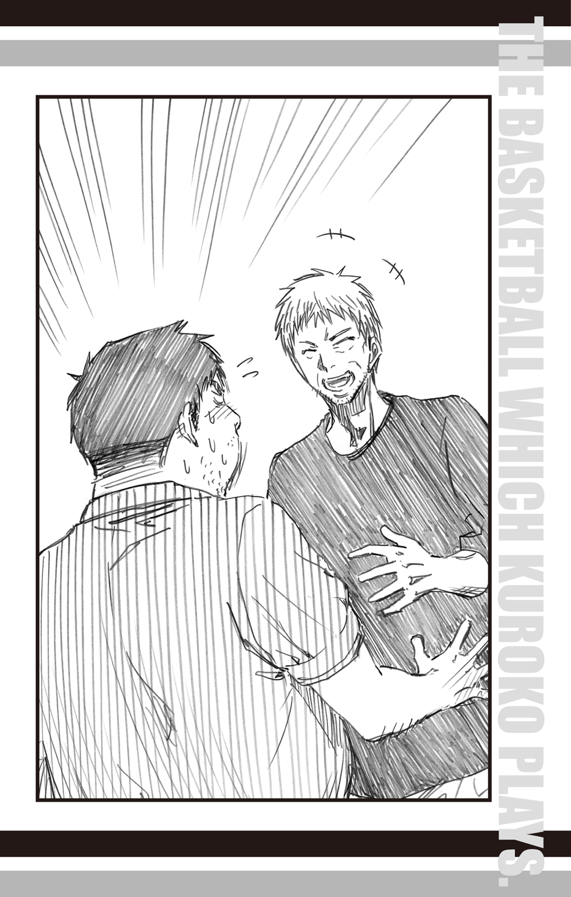
ゲンゲンと呼ばれた男は怒りに顔を赤く染め、叫んだ。
その不機嫌な顔に昔の面影が重なり、景虎はつい懐かしくなって口元に笑みを浮かべる。
男の名前は武内源太。かつて景虎と一緒に全日本のユニフォームを着て共に戦ったチームメイトにして、海常高校バスケ部の現監督である。
「なんだよ、まだこの名前が気に入らないのか、ゲンゲン」
「だから、その名前を連発するなと言ってんだろーが！ そんなダサい名前を公衆の面前で呼ばれたくない」
「そうかー？ オレはチャーミングでいいと思うけどな......」
首をかしげる景虎に、武内は「おまえのセンスは聞いてない」と吐き捨てるように言う。
「それで、おまえはこんなところでなにやってんだ？ そんな木刀持ち出して、ワシが警官なら職質かけるところだぞ」
「おっと、そうか」
そう言うと、景虎は植木の傍に木刀をぐさっと突き刺した。
「これで、気づかれないだろ」
「ますます怪しいぞ......」
武内が顔をしかめ、木刀と景虎を見つめた。
「こいつにはあとで役に立ってもらう予定だからな。今、手放すわけにはいかねーんだ」
景虎が背後のマジバーガーを振り返ったので、武内もつられて顔を向けた。
店の二階にリコたちの姿を見つけ、「あれは......」と目を見開く。
「〝鉄心〟に、誠凛の女監督と主将じゃねーか」
「オレの娘だ」
景虎が両手を腰に当て、威張るように胸を張った。
「かわいいだろう？」
「はぁ!? 娘!?」
武内は驚き、リコと景虎を見比べた。やがて呆然としつつも、どこか合点がいったというようにうなずく。
「......なんとなく雰囲気が誰かに似てるとは思ってたんだ。おまえの娘だったとはな......。ん？ いや待て。あそこにいるのがおまえの娘で、ここに木刀があるってことは、おまえそれって......」
思わず顔を引きつらせて尋ねる武内に、景虎は親指を立てた。
「もちろん、娘に寄りつく害虫退治用だ」
「アホか！ 娘のデートの邪魔をするバカ親がどこにいんだよ！」
「バカとはなんだ、バカとは！ オレの天使に近づく虫は未来永劫許しゃしねぇ！」
「それがバカなことなんだよ！ 娘のあとをつけ回すって、男のやることじゃねーだろ！」
「うっせ！ 娘のあともつけられねー奴のほうが、男じゃねー！」
堂々と言い切る景虎を、武内は軽蔑の目で見つめ、思わず一歩退いた。
武内はじろじろと景虎を観察した後、わざとらしくため息をつくと、
「まったく、こんな男が昔のチームメイトかと思うと、恥ずかしくなるぜ」
鼻で笑いながら、やれやれと大げさに肩を揺らした。肩とともにでっぷりした腹も揺れる。
それを見た景虎の口から、ダイレクトな感想が飛び出した。
「太ったなー......」
「なっ!?」
武内が言葉に詰まり、思わず両手で腹を隠す。しかし本人は隠したつもりでも、隠しきれる面積ではなく、手を添えているようにしか見えない。
景虎は視線を武内の腹に注いだまま、言った。
「マー坊もカッちゃんも変わらないのに、おまえだけどんどん肥えるな。ウチの嫁さんも、心配してたぞ」
「え......？」
武内が目を丸くし、次いで思わずにやけた口元を隠すように顎を撫でた。
かつて景虎と武内はとある女性をめぐり、恋のライバル関係だった。
ただしライバルとはいっても、武内のアタックは空振るばかりで、景虎と彼女は互いの仲を順調に交際へと発展させていった。
そのような関係であったので、この恋の勝負は早々に景虎が勝利をおさめて幕を閉じた。
勝負に敗れた武内だが、かつての想い人が心配してくれていると聞けば、昔のときめきも思わず蘇るというものだ。
「そ、そうか......彼女が、オレのことをな......。ほ、他にはなにか言ってなかったか？」
武内はちらちらと景虎を見ては、そわそわとした様子で聞いた。
そんな武内の様子に気づかず、景虎は腹を注視したまま、口を開く。
「他に？ そうだな......ダイエットメニューを作ってあげたいって息巻いてた」
「............」
武内の顔から音を立てて血の気が引いた。同時に、当時食した彼女の手料理の味が思い出される。
昔の想い人が心配してくれるのは嬉しいが、あの手作り料理を食べるのは勇気と体力が必要とされる。かなり、必要とされる。
急に黙りこんだ武内の変化に気づかず、「まあ、そのうち遊びに来いよ」と景虎は朗らかに言って、顔を上げた。
「そういや、おまえ結婚は？ 結局、マサは口説き落とせなかったんだよな？」
「マっ!?」
青ざめていた武内の顔が今度は一瞬にして赤くなる。一方、景虎は昔を懐かしむように目を細めた。
「懐かしいなぁ。おまえ、絶対マサとつきあうって何度も女子寮に通ってたもんなー」
「そ、そそそそ、それは!!」
「そんで、おまえのこと聞きつけて集まってきたマサの舎弟どもに囲まれてたよなぁ」
「だ、だだだだ、だから、それは!!」
「オレは忘れねぇよ。ボコボコにされて帰ってきたおまえが、『運命の絆ってのは、障害によって試され、その結果強く結ばれるんだ』って言ったことをよ。ありゃぁ、かっこよかったぞ」
「ぬぉぉぉぉぉぉぉぉ!!」
若さゆえの〝名（迷）言〟を掘り起こされ、武内は頭を抱えてしゃがみこんだ。
驚いた景虎が、武内の肩に手を置き、「どうした、腹でも痛むのか!?」と尋ねると、武内はその手をはねのけ、
「違うわ！ おまえがいらんことを蒸し返すからだ！ ワシはもう、荒木のことはなんとも思ってない!!」
ダラダラと冷や汗を流しながらも、反論した。
ちなみに荒木とは、陽泉高校バスケ部で監督を務める荒木雅子のことである。彼女もかつては全日本のユニフォームを着てコートを走る、バスケプレイヤーであった。今では堅気な指導者である彼女だが、実は元ヤンという過去を持つ。しかもなかなかの立場まで昇り詰めたらしく、いまも彼女を慕う元舎弟たちが全国各地に存在するらしい。
現役時代、その荒木を武内は何度となくデートに誘った。
「オレに見合うのは荒木ぐらいだ」
という謎の自信が武内を燃え上がらせ、いくら押してもまったくその気のない荒木の態度がさらに彼を熱くさせた。何度断られてもめげない武内に、やがて「姐さんにまとわりつく、うぜぇ奴がいる！」という情報をどこからか聞きつけた彼女の舎弟が、彼を締め上げる事件まで発生した。それでも武内は怯むことなく、荒木に果敢にアタックし続け、最後は彼女に一本背負いで投げ飛ばされて、この恋も幕を閉じる結果となった。
いまとなっては過去の話である。
しかし『若気の至り』という一言では言い尽くせない過去を掘り返され、武内は息も絶え絶えの状態だ。ぜぇぜぇと荒い呼吸を繰り返す武内を景虎は心配し、「大丈夫かよ」と背中をさすってやろうかとも思ったが、またも邪険に扱われそうなので結局、声をかけるだけにとどめた。
景虎は仕方なくマジバーガーに振り向く。そして、悲鳴をあげた。
「......あ？」
武内が額に浮いた汗を拭きながら、景虎を見る。景虎は店を凝視したまま、言った。
「リコが......いない!!」
「はぁ？」
武内が見ると、窓辺の席に座っていたはずの彼らの姿がいつの間にか消えている。
「ど、どこ行った!?」
景虎は慌てて周囲を見回すが、リコの姿は見当たらなかった。
せっかく見つけた愛娘を見失い、景虎は愕然と固まった。かと思いきや、ぐるっと武内に振り向いた。
「おまえのせいだ！」
「八つ当たりか！ 関係ねぇだろ！」
「おまえが昔話なんかするからだろうが！」
「先にしてきたのはそっちだろ！ だいたい、娘が楽しくデートしてるなら、祝ってやれよ！」
「オレからリコたんを奪う奴を祝う義理はない！」
「自分だって奪った経験あるだろうが！」
「............うるせーよ、ゲンゲンのくせに！」
「その名前で呼ぶなぁぁぁ！」
中年男子の非生産的な口論は続き、周囲の人々の好奇な目に見守られながら、休日の午後は暮れていった。
自宅のリビングですっかり冷めたコーヒーを片手に、景虎は何度目かわからないため息をついた。
武内と喧嘩別れをし、自宅に戻ってからは、ただただぼんやりとしてしまう。何もする気が起こらなかった。
そのためリコの帰宅にも気づくことがなく、彼女に声をかけられたときは、思わず跳び上がって驚いた。
「......パパ、どうしたの？」
跳び上がった拍子にコーヒーをこぼしてしまい、わたわたとする景虎にリコが呆れた顔で尋ねた。
「なんかあった？ ぼーっとしてたけど」
「い、いやっ......なんでもない。いいい、いつ帰ってきたんだ？」
「今よ。リビングの前通ったら、パパがいるの見えたから」
部屋に行く前に寄ったと言うリコの顔からは楽しい一日を過ごしたことがうかがえた。
愛娘を見つめているうちに、景虎の胸に一つの決意が芽生える。
どっちが本命でもかまわない。プッツンメガネと天然ボケ男はそろってあの世に送ろう。
景虎が密かに物騒な決意していると、リコが「あのね......」と後ろ手に隠し持っていたものを差し出した。
「パパにプレゼント！」
「え？」
小さな紙袋を景虎に渡し、リコははにかむ。
「今年の父の日はインターハイの予選で忙しくて何も渡せなかったし、今もみんなの練習につきあってもらってるから、少しでもお礼したくて。だから、プレゼント」
「リコ......!!」
景虎は喜びに目を潤ませた。
「あ、あ、ありがとう!! パパ、感激......!!」
思わず大きな声でお礼を言う景虎に、リコは「大げさだよ～」と嬉しそうに笑う。
「中、見てよ」
「お、おお、そうだな......」
景虎は紙袋の中に手を入れ、ラッピングされた箱を取り出す。包装紙を慎重に解いてみると、現れたのは細身のサングラスだった。
「パパが喜ぶものって、なかなか思いつかなくて。気に入ってくれた？」
「すごく気に入った!!」
景虎はさっそくサングラスをかけ、「こんなフィット感あるサングラスは初めてだ！」と絶賛した。
景虎の中から先ほどまで感じていた空しさがすべて霧散していく。
リコが貴重な休日を使って、自分にプレゼントを選んできてくれたという事実がなにより嬉しく、生きる活力が沸いてくるようだ。
「リコ、ありがとう」
「うん。私こそ、いつもありがとう」
リコの笑顔に景虎はますますメロメロになり、このサングラスはオレが死ぬときに棺桶に入れてもらおうと心に誓う。
だから、有頂天の父は気づかなかった。
リビングを出て行く娘の、なにげない一言に。
充実した一日を過ごした彼女は、満足げな様子でつぶやいた。
「やっぱりメガネはメガネ男子に選んでもらうのが一番ねー」
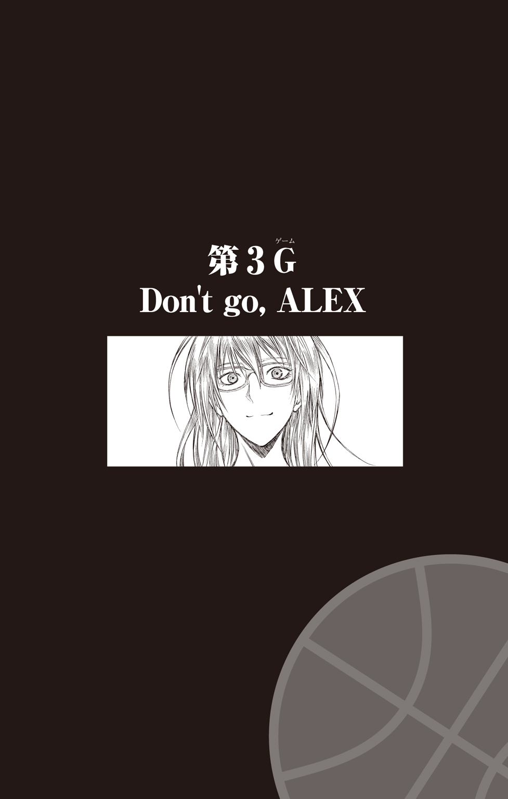
かわいい子には旅をさせよ。
旅という名の遠出は人をたくましくする。いつもと違う景色や出会いは何ものにも代え難く、それゆえに若いうちから旅はさせたほうがいい――という意味がこのことわざにはこめられている。
されど、勝手に遠出をしてはいけない。
ましてや十歳と十一歳の少年、タイガ・カガミとタツヤ・ヒムロが大人たちに内緒でこっそりと一泊二日の旅に出たことは、決して褒められたことではなく、むしろ大目玉をくらう羽目になる出来事だった。
ロサンゼルスの片隅で小さな冒険をした二人に、双方の家族がきっちりと教育的指導を行ってから、そろそろ二か月が経とうとしていた頃。タイガとタツヤは彼らのバスケの師匠であるアレクサンドラ＝ガルシア――アレックスと共に、近所の屋外バスケコートにいた。
「なぁなぁ、アレックス。あれやって、指の上でボール回すやつ！」
いつものようにアレックスからバスケの指導を受け、ベンチで一息ついたところでタイガが無邪気にリクエストした。
「ん？ いいぞ。タツヤ、ボールくれ」
「うん」
タイガとアレックスに挟まれて座っていたタツヤがボールを渡すと、アレックスは右手の人差し指の先にボールをのせ、左手でボールの側面を素早く撫でた。
ジリッと小さな摩擦音をたて、ボールは指先を支点に勢いよく回転を始める。
「おおー、かっけぇ！」
目を輝かせてボールを見つめるタイガにアレックスは微笑み、ボールが落ちないように再度、左手で回転を加えた。
「タイガはこれがお気に入りだな」
「おうっ！ 練習してるんだけどさ、うまく回らないんだよな。なんかコツあるのか？」
タイガは身を乗り出し、タツヤ越しにアレックスに問いかけた。
「そーだなぁ。まあ、これぐらいは自分で試行錯誤したらどうだ？ そのほうが達成感あるだろ？」
「えー、オレは早くできるようになりたいのに！」
「タツヤはどうだ？」
アレックスはタツヤに視線を向ける。
「これ、できるか？」
「ボクもまだ練習中。でも、なんとなくコツはつかめてきた」
嬉しそうに笑うタツヤにタイガが「え、マジで!?」とさらに目を輝かせた。
「タツヤ、すげーな！ できるようになったら、すぐに見せてくれよ！」
「うん、一番に見せるよ。アレックスにも」
「ああ、楽しみにしてる」
アレックスは目を細めて微笑むと、ボールに左手を添えて回転を止めた。そして「ほい」とボールをタツヤに渡し、ベンチから立ち上がる。
――その一瞬。
タツヤは眉をひそめ、なにかを思案するように顔をうつむかせた。が、すぐに柔らかい笑顔でアレックスを見上げる。
「練習、再開する？」
「いーや、今日はここまでにしよう。ちょっと用事があるんだ」
「えーっ!? 帰っちゃうのかよ〜」
不満を口にするタイガの頭をアレックスはわしゃわしゃと撫で、「また明日な」と言うと、コートから出て行った。
「タツヤ、ワンオンワンしようぜ」
タイガがベンチから立ち上がり、フリースローラインへと向かう。しかし、突然うしろに大きくバランスを崩した。歩き出したタイガの手を、タツヤがつかんで引き戻したのだ。
「うおわっ、なんだよ！」
タイガが振り向くと、タツヤはコートの外、アレックスの歩き去った方角を見つめたまま、「タイガ......気にならないか？」と言った。
「ん？ なにが？」
きょとんとするタイガに、タツヤはここ数日ずっと考えていたことをそっと打ち明けた。
「アレックスはたぶん......なにかを隠してるよ」
タツヤが言うには、最近のアレックスはいつもとちょっと違うらしい。
ベンチに座り直し、タツヤから話を聞いたタイガは首をひねった。
「そうか？ アレックスは、今日もいつもどおりだったぞ。髪も金色だったし、眼鏡もかけてたし、背も高かった」
「そんな外見的なことが違うって言ってるんじゃないんだ。もっと内面的なことだよ」
「な、ないめんてき......？」
聞いたことのない単語の登場にタイガが盛大に眉を寄せるので、タツヤは「内面的っていうのは、もっと心理面......だから、心の問題ってこと！」と丁寧に説明する。
「心の問題って......アレックスが？」
タイガは改めてここ最近のアレックスを思い浮かべた。まず浮かんだのは、彼女の不敵な笑みだ。
それを見かけたのは、ちょうど昨日のこと。久しぶりに行った賭けバスケのコートで、
「元プロっつっても、引退したらただの女だろ」
と、揶揄した新参者の大男に、「じゃあ、やってみるか」と言ったときの彼女は、口元は笑っているが、全身から怒りのオーラを漂わせ、見守っていたタイガとタツヤさえぞっとするような凄みがあった。
だが、それよりも印象に残っているのが、試合後の彼女の笑みだ。アレックスの圧倒的なプレイに絶句する新参者に、「生まれ変わって出直せよ、ボーヤ」と言ってのける彼女の姿は、ぞぞっとするほどおそろしく――かっこよかった。
相手が誰であろうと売られたケンカは買う。その姿勢は、心が強い証拠ではなかろうか。タツヤの言う、心の問題は特にないように思える。
そうタイガが反論すると、タツヤは首を左右に振った。
「あれは心が強いんじゃなくて、気が強いっていうんだよ。心の問題っていうのは、そうじゃなくて、もっとデリケートっていうか......」
「デ、デリケート..................って？」
またも単語でつまってしまったタイガに、タツヤは困り、眉を八の字に下げる。
「......タイガ、話が進まないよ」
「えっ!? じゃあ、オレは気にせず、進めてくれ！」
「いや、タイガにわかってもらわないと意味ないし......」
タツヤはタイガにもわかる言葉をあれこれと脳内で探しているようで、しばし考えたすえに、「これはボクの直感だけど」と前置きしたうえで、言った。
「アレックス、最近女っぽくないか？」
「......は？」
タイガは混乱した。タツヤの意味するところがわからない。なぜなら、
「............タツヤ、アレックスは女だぞ？」
「わかってるよ。でも、タイガはアレックスが女の人だって意識したことある？」
「............」
答えはＮＯだった。
アレックスが女だということは、もちろん理解している。だが、それ以前に彼女はタイガとタツヤにとって、『師匠』と呼ぶべき存在なのだ。そこには性別や年齢差はふくまれず、ただただ『師匠』として、ふたりの心の中に座している。
タイガは以前、小学校のクラスメイトから「女からバスケ教わるのかよ。ダセー」と言われたことがある。そのとき怒りが沸くよりもまず一番に思ったことは、
「そういや、アレックスって女だった！」
ということだった。
それほどにタイガはアレックスの性別を意識したことがない。
しかし『師匠』という肩書きだけが彼女を、性別を超えた存在にしているわけではないと、タツヤは言う。
「やっぱり『女の人』っぽくないっていうのも、大きな原因だと思うんだ」
動きやすいからという理由で、大抵はＴシャツにパンツルック。バスケで汗かくから面倒という理由で化粧もしない。肩が凝るからという理由で、家ではノーブラで歩き回る。しかもタイガとタツヤが遊びに行ってもそれを隠そうともしないので、逆にタツヤが焦る始末だ。
アレックスがだらしないのではない。ただ、女らしさを感じさせる部分が多少薄く、それゆえに自分たち（特にタイガ）は意識しなくなってしまったのだと、タツヤは結論づけた。
「なるほど......」
タイガは納得し、うんうんとうなずいた。その様子に、タツヤが「ここからが本題だよ」と真剣な顔で身を乗り出す。
「そのアレックスがだよ？ 普通の女の人みたいに、香水をつけていたら、どう思う？」
「アレックスが？ つけないだろ、そんなのー」
ないないと笑うタイガに、タツヤは首を振って言った。
「今日、つけてたんだ、香水」
「............え？」
「だから、つけていたんだよ、香水」
丁寧にはっきりと言うタツヤに、タイガはゆっくりと目を丸くした。
「アレックスが......？」
「ああ、アレックスが」
「マジで......？」
「うん。ベンチから立ったとき、ふわっと匂ったから、たぶん......」
「アレックス、どうしちゃったんだ!?」
「だから、そう言ってるんだって。アレックスが変だって」
タツヤが気づく限り、アレックスのらしくない行動は他にもあるという。
最近やけに日差しの強さを気にしたり、ふいに自分の腕の筋肉を見ては首をひねったり、ついにはタツヤの頰を撫でてため息をついたというのだ。
「なんでため息？」
タイガが尋ねると、タツヤは思い出すように自分の頰を撫でて言った。
「よくわからないけど、『おまえみたいなのをモチ肌っていうのか』って言いながら、ぐにぐにもまれた」
「意味わかんねー......」
タイガが困惑して顔をしかめた。タツヤも「あのときはちょっと怖かった......」と顔を暗くする。
「......そういや、オレも変なこと言われたわ」
「え、タイガも？」
タイガはこくりとうなずいた。今までは気にしてなかったが、タツヤの話を聞いているうちに、アレックスの不思議な行動を思い出したのだ。
「こないだ、アレックスから電話かかってきてさ。そんときのアレックスが変だったんだ」
「変......？」
タツヤが聞き返すと、タイガはこくりとうなずいた。
「なんつーか、変なんだ」
「なにが変だったの？」
「電話でた瞬間、アレックス、なんて言ったと思う？ 『オッス！ オラ、アレックス！』って言ったんだぜ？ わざわざ日本語で」
意味わかんねーよな、とタイガはタツヤに同意を求めようとして、ぎょっとした。てっきり不思議がるだろうと思ったタツヤが、額に片手をあて深くうつむいていたのだ。おまけに長いため息をついている。タイガは慌てた。
「え、やばかったか、この話!? アレックス、マジでヤバイ状態なのか!?」
「......タイガ、たぶんそれは今回のこととは違う」
顔を上げたタツヤは、どこか疲れた様子で言った。
「そうなのか!? アレックス、大丈夫なんだな？」
「ああ。それは単に、アレックスが日本のアニメを見過ぎなだけだよ」
「へ？」
アレックスの趣味は日本のアニメ鑑賞だ。最近のものから過去の作品まで、ジャンルにこだわることなく観ている。特にお気に入り作品については、作中のセリフを暗記できるほど繰り返し観るのが常だ。おかげで彼女の日本語は流暢で語彙も豊富だが、その反面、日本語も英語も時折奇妙な影響を受けていた。
「じゃあ、『オッス！ オラ、アレックス！』ってのも、アニメの影響だってのか？」
「たぶんそうだろうね。『オラ』とか言ってるあたり、アニメっぽい......！」
「なんだよ、心配して損した！」
タイガはぷうと頰を膨らませる。タツヤは苦笑しながらも「ちなみに、アレックスからの電話はなんだったの？」と尋ねた。
「あー、それも変だったんだよ！ 『弁当を作ってほしいんだ。ちゃんとランチボックスに入れたやつな。丸いケチャップライスのおにぎりに細く切った海苔を横一本、縦三本のせてくれ。縦三本の内、外側の二本は両端を外のほうに曲げるんだ』って言うんだよ。で、そのまま作ったら、どうなったと思う？」
「......どうなったの？」
「すげーんだよ！ おにぎりがバスケットボールに見えんの！ さらにアレックスのリクエストどおりに作ったらさ、ゆで卵と海苔でオレとタツヤの顔ができちゃったんだよ！ オレ、テンションあがっちまって、タコウィンナーでゴールっぽいのも作っちまった！ あんなこと思いつくアレックス、マジ天才なんじゃねーかな！」
「むしろそれをちゃんと作れるタイガがすごいとボクは思うよ」
タツヤは知らず知らずのうちにキャラ弁作りにはまっている弟分を褒めた。
「でもそれ、アレックスが考え出したことじゃなくて、アニメの影響だ」
「そうなのか!? 日本のアニメって、弁当をバスケにすんのか!?」
「それはアニメのせいじゃないと思うけど......そもそもタイガにお弁当を作らせるアレックスもアレックスだよ」
「そうか？ まあ、作るのキライじゃねーから、オレはいいけど......。アレックスも日本の米はうまいって言ってたし。オレんち、米はいっぱいあるから」
「たしかにお米を俵単位で輸入してるのは、タイガの家ぐらいだろうね......」
検討の結果、タイガの感じていたアレックスの変化には理由が見つかったが、タツヤが感じていたものについては不明のままだった。
ふたりが悩んでいるうちにコートには別の子供たちが現れ、ゲームが始まった。いつもなら仲間に加わるところだが、とてもそんな気にはなれない。
そこで続きはタツヤの家で考えることにして、ふたりは早々にコートを出ることにした。
歩きながらも、話題はやはりアレックスのらしくない行動についてだ。
「たぶん、なにかを隠しているんだよ」
「なにかってなんだ？」
タイガが尋ねると、タツヤは「わからない」と首を振る。
「でも、きっと女っぽくしようとする理由が、そこにあると思う。今日だって変だよね。今までアレックスが、用事があるからって練習を切り上げたことなんて一度もなかった気がするし......」
「そういや、そうかもな。でも、アレックスが隠すようなことって......あれ？」
タイガが急に足を止めた。大きく目を見開き、道路を挟んだ反対側の歩道のほうを指さす。
「あ、あそこっ......」
わなわなと唇を震わせるタイガを不審に思い、タツヤはタイガの指した方角に目をこらした。
歩道のすぐ向こうには白い小さな教会が建っていた。その前を歩いていくのは、なんと先ほど別れたばかりのアレックスである。
タイガとタツヤに衝撃が走る。
偶然にも再会したことに、ではない。
アレックスの隣で、親しげに彼女と話す、連れの存在から目が離せない。
「お、とこ......？」
タツヤとタイガは目を丸くした。アレックスの隣で、彼女と歩調を合わせて歩くのは、紺色のスーツを着た、大人の男だったのだ。
年齢はおそらく二十代後半。短めのダークブラウンの髪、深いブルーの瞳。スーツの袖口からのぞく金色の大きめの腕時計がいかにも働く大人の男、といったふうに少年たちの目には映る。
アレックスとその男は教会の隣に建つ店の前で歩みを止めた。
男が率先して扉を開き、アレックスに「どうぞ」とエスコートする。
アレックスは笑顔で彼になにか言うと、店の中へと入り、続いて男も扉の奥に姿を消した。
タイガとタツヤは無言のまま顔を見合わせ、無言のまま道路を渡った。
白い壁に大きめのショーウィンドウが目を引く店だった。
ふたりがそっとショーウィンドウの中をのぞくと、キラキラと光る大きなダイヤのついたネックレスや、小さなパールをあしらったティアラなどが飾られていた。
鈍いタイガでもわかる。そこはジュエリーショップだった。
タイガとタツヤは呆然として顔を見合わせた。
アレックスが自分たちの知らない男と仲よさげにジュエリーショップへと入っていった。その意味が脳に達したとき、ふたりは叫んだ。
「恋人―――――!?」
驚きのあまり叫んでしまったが、幸いにも店内には聞こえなかったらしく、訝しんだ誰かが外へ出てくることはなかった。
ふたりはもう何を見ても叫ばないようにと、口を両手で押さえたままショーウィンドウをさらにのぞく。ショーウィンドウスペースに対して店内側からの仕切りは一切なく、そのまま楽に店内をうかがうことができた。
そこにはジュエリーを選ぶアレックスと男の姿があった。慣れないものを選ぶからなのか、それとも恋人と一緒だからなのか、アレックスの表情はどこか照れくさそうだ。
タツヤとタイガはそっと店を離れた。
「マジ驚いた......アレックス、つきあってる奴がいたんだな......」
ジュエリーショップから隣の教会のほうへ移動したところで口を塞いでいた手を離し、タイガが言った。まだショック状態が抜けないらしく、その後も「やべー、すげー、やべー、すげー......」と意味のない単語を絶え間なくつぶやいている。一方、タツヤは右手を顎にあて、右の肘を左手でつかむという、まさに考えるポーズをとったまま、
「最近、彼氏ができたのかも。そうか、日差しを気にしてたのは、日焼けしたくなかったからだったんだ......！」
と、納得のいった顔でこくこくとうなずく。
アレックスの秘密を知りたいと思っていたのだが、いざ知ったその事実はあまりにも予想外だった。
「でもアレックスって、ああいう奴が好きだったんだな！」
タイガは先ほど見た若い男を思い出す。スーツに身を包んだ、優しそうな男だった。華奢な体型で、アレックスと並んだとき身長で負けていた。
「ボクたちのまわりにいないタイプだよね。かえってそこがよかったのかも」
タツヤは賭けバスケのコートを思い出していた。そこにはいつも、二メートル超えの身長と、はちきれんばかりの筋肉を持った、『屈強』という言葉が似合う男たちが集っていた。
「けど、あの人、あんまりバスケはできなさそうだったよな。そんな奴とつきあって、おもしろいのかなぁ」
「恋人にまでバスケは求めてないのかもしれないよ。もしくは、バスケしなくても、もっと魅力的な部分が、あの人にはあるのかも......」
「魅力ってどんな？」
「そこまではわからないよ。でも、きっとアレックスが好きになるところが、あの人にはあったんだ」
「ふーん............」
タイガは頭のうしろで両手を組んだ。驚きと興奮は収まりつつあるが、代わりに胸の奥がずしりと重くなっていく気がする。
「あ............」
突然、タツヤが小さく声を漏らし、教会を見上げた。タイガもつられて目の前の建物に視線を向ける。そこはごく普通の教会だった。歩道に沿って垣根の低木が並び、その内側に芝生の生えそろった小さな庭、そしてその奥に白い教会の建物が建っていた。
タツヤはすたすたと、芝生の庭に入った。まっすぐに進み、ジュエリーショップを振り返る。ジュエリーショップは教会の敷地内に建っていた。
「やっぱり......あの店、この教会と関係があるんだ」
「へー」
タイガはジュエリーショップを振り返った。
教会ってのは、宝石店も経営するんだな、とぼんやりと考えているとき、
「アレックス、結婚するのかも............」
「はぁ!?」
タツヤの予想外の一言にタイガは大きく目を見開いた。あまりの衝撃の大きさに、自慢の眉がさらに枝分かれするのではないかと思ったほどだ。
「結婚ってなんで!?」
「以前、この教会で結婚式を挙げてる人を見たことあるし。それに教会の敷地内にジュエリーショップがあるってことは、たぶんあそこはウェディング系のお店なんだよ。結婚指輪とか、あそこで買うんじゃないのかな」
「け、結婚指輪って......じゃあ、アレックスも!?」
「たぶん......」
タツヤが、困惑と切なさが入り交じる眼差しで、ジュエリーショップを見つめる。
結婚という単語がタイガの中に遠慮なく侵入する。それに伴って、胸の奥の重みが急に膨れあがり、タイガは堪らず叫んだ。
「アレックスが結婚なんて、嫌だよ！」
「......タイガ？」
「アレックスが結婚だなんて、わけわかんねーよ！ だって、アレックスだぞ!?」
はき出すように言う言葉は、意味をなさず、むしろタイガ本人をさらに混乱させた。
そんなタイガを前にして、タツヤはかえって冷静になったようで、静かに言った。
「今まで気にしてなかったけど、アレックスだって大人なんだから結婚ぐらいするよ」
「け、けどさ、アレックスだぞ？ あのアレックスが......」
「彼氏がいるなら、結婚も考えるんじゃないのかな」
「だ......だからって!!」
タイガは言葉を詰まらせ、思わず黙る。自分でも何が言いたいのかわからない。
「結婚したら......そいつが一番になるんだろ？ それって、なんかなんか......！ わかんねーけど、アレックス、変わるかもしれねーじゃん！ もしかしたら、もうオレたちとバスケしてくれないかもってことじゃん！ そんなの嫌だよ！」
「............」
タツヤは何も答えず、黙って教会を見上げる。タイガは自分の中で勝手に湧いてくるやるせなさと、不安を叫んだ。
「だって！ だって......結婚って、それって......！」
――知らない人になるみたいじゃん。
口にしそうになった言葉をギリギリで呑みこみ、タイガは唇を嚙んでうつむいた。
心に浮かんだ言葉を声にするのが嫌だった。アレックスを遠く感じるのは避けたかった。
「タイガ............」
「..................」
黙りこんだタイガの頭をタツヤはぐしゃっと撫でる。
「帰ろう、タイガ」
タツヤがタイガの腕を引いて歩きだすと、タイガは何も言わずに一緒に歩いた。
翌日、いつもの屋外コートでタツヤはそわそわと待っていた。
気を落ち着かせようと、ボールハンドリングの練習をはじめるが、途中で何度も手を滑らせ、ボールを落としてしまう。
転がるボールを拾いに走り、タツヤはふうとため息をつく。
「タイガ、今日は来ないのかな......」
昨日のタイガを思い出すと、今日は現れないかも......という予感が強くなる。
しかし、タイガが来なかった場合、今日の練習はアレックスと自分のふたりだけになる。そうなったとき、いつものように振る舞えるか、タツヤは自信がなかった。困ったなぁとつぶやきながらボールを拾い上げたとき、コート出入り口に取りつけられたフェンスの扉がカチャンと鳴った。
タツヤがぱっと振り向くと、扉を開けるタイガの姿が目に入った。
「タイガ！ 待ってたよ」
タツヤが駆け寄ると、タイガは気まずげに首のうしろをかいて、「わりぃ......」と小さく謝った。
「あと......昨日もごめん。なんかオレ、いろいろわけわかんなくてさ......」
「......うん、しょうがないよ。ボクだって......驚いたし」
もう大丈夫なのか、とタツヤが尋ねると、タイガはしばし沈黙し、口を開いた。
「......昨日の夜、オレ、いっぱい考えてさ。なんで嫌なんだろうとか、理由がないのに嫌とかわけわかんねーとか、でもなんかこう、もやもやするーってすげーいっぱい考えて......」
「うん......」
タイガの気持ちがタツヤにもよくわかった。タツヤ自身も昨日の夜は同じような気持ちで過ごしたのだ。その結果、タイガは自分の気持ちにどう結論をつけたのだろう、とタツヤは続くタイガの言葉を待った。
タイガは言った。
「やめた！」
はっきりと断じた声に、タツヤが呆然と聞き返す。
「......え？」
「悩むのやめたんだ。わかんねーなら、アレックスに聞くのが一番だと思う」
「う......うん。けど......」
「そこで、タツヤにお願いがあるんだ」
タイガのいつにない真剣な目がタツヤを見つめた。その真剣さにタツヤは身構えた。
「なに？」
「アレックスに聞いてくれ！」
「......ボクが？」
「うん!!」
「............」
きっちり十秒おいてから、タツヤは尋ねた。
「なんで、ボク？」
瞬間、タイガの頰がぼっと赤くなる。
「だ、だって......け、結婚するの？ とか、聞けねーよ！ け、け、結婚とか、そーゆーの、男が言うのって..................恥ずかしいじゃん！」
「ボクだって恥ずかしいよ!?」
「え、そうなの!?」
タイガは信じられないという顔でタツヤを見つめた。
「だってタツヤはいつも飄々として、ちゃんとしてるじゃんか！」
「それとこれとは別だよっ！ は、恥ずかしいものは恥ずかしいんだから！ がんばれることと、がんばれないことがあるよ！」
「タツヤならできるって！」
タイガが信頼の眼差しでタツヤを見つめた。タツヤがうっと息を呑み、目をそらした。彼の弱点とも言える、タイガの絶大な信頼。
だが、タツヤは「うん」とうなずくわけにはいかなかった。
「男として恥ずかしい」とまで言われているものを、引き受けるわけにはいかない。
アレックスに真偽を尋ねるということは、タツヤも考えたことだった。
だが、これまで『師匠』以外のなにものでもなかったアレックスを、いきなり『女性』として見て、さらに女性にとっては重要問題と思われる『結婚』の話題を振るのは、かなり勇気がいる。ハードルも高い。どんなタイミングで、どんな顔で聞けばいいのか、答えとなる方法がまったく思いつかず、タツヤはその案を諦めたのだ。
だから今さら、タイガに頼まれたからといって聞けるものではない。
「............」
タツヤはそっとタイガをうかがった。タイガはなおも期待の眼差しでタツヤを見つめていた。
謎の罪悪感にちくちくと胸が痛むタツヤだが、ふいにアレックスの言葉を思い出した。
アレックスは言った。
『タイガのために自分をしまいこむな』と。
そうだ、今こそ、それを実行すべきだ。アレックス、ボクがんばるよっ。
タツヤは決意を胸に、ぐっと腹に力をこめた。
「ボク、アレックスには聞かないから」
「ええーっ！ なんでダメなの!?」
タツヤの強い拒否表明に、タイガが情けない顔で眉尻を下げた。その様子を目の当たりにして、決意が揺るぎそうになる自分を叱咤し、タツヤはいま一度息を吸った。理由はいろいろあるが、ここはわかりやすい理屈で説得するのが一番だろう。
「......いいかい？ アレックスにそれを聞くと、十中八九『どうしてそんなこと聞くんだ？』って聞き返される。そのとき、『実はのぞき見しました』なんてかっこわるいこと、言えないだろ？」
「た、たしかに......」
タイガが納得したのを確認し、タツヤは自分なりに考えていたことを述べた。
「となれば、ボクたちにできることはひとつしかない」
タツヤの真剣な声にタイガはごくりを唾を飲んだ。
「昨日見たことは、ボクたちだけの秘密にするんだ」
へ？ とタイガは目を丸くした。タツヤは説得力を持たせようと、声に力をこめる。
「もう少し見守っていようよ。もしも本当にアレックスが......結婚、するなら、ボクたちにちゃんと言ってくれると思う。それまで待つしかないと思うんだ」
「......そう、かな」
半信半疑の様子でタイガが小さな声で言った。タツヤも百パーセントの自信はない。しかし、これがタツヤの考え得る最善の方法だった。
「そのうち、話してくれるよ」
大事なことは、きっといつか話してくれる。タツヤはそう信じることにして、タイガににこっと笑いかけた。
タイガは信じていいのか迷うようにタツヤを見つめていた。タツヤが辛抱強く待っていると、やがて「......そっか、そうだな！」と、タイガも笑顔を見せた。
その笑顔にタツヤのほうがほっとする。ふたりなら信じ切れる。そう思えた。
それから数日間、タツヤとタイガはアレックスといつもどおりに過ごした。いつもどおりにバスケを教わり、いつもどおりの会話を心がけた。「あれ、オレたちっていつもどんなことを話してたっけ？」と記憶をたどることもしばしばだったが、どうにか『普通』らしくあるように努力し続けた。
その努力の甲斐あってか、それともなかったのか。
アレックスはそれらしきことを一切話さなかった。
話がある、と言われるたびに極度に緊張し、全身を耳にしてその話を待つのだが、たいていは、いやすべてがバスケについてだった。
何度となく「そうじゃないよ！」と言いたいところをタイガとタツヤは必死に言葉を呑みこみ、ぐっと耐えた。
もしかして彼氏のことは見間違いだったのか、それとも完全黙秘を通すつもりか......とふたりが悩み始めた頃。
その日の練習を終え、商店が並ぶ通りを三人で歩いていると、突然アレックスが立ち止まった。アレックスは心奪われたような眼差しで店のショーウィンドウを見つめている。
「アレックス、どうしたの？」
タイガが尋ねる隣で、タツヤはアレックスが見つめているものを見て、ぎょっとした。
「んーわりぃ、つい見とれた」
照れ笑いするアレックスが見ていたのは、大きな三段重ねの真っ白なケーキだった。
「ウェディングケーキ......」
タツヤのつぶやきを聞いたタイガもはっとしてショーウィンドウを見つめ、目をむいた。
タイガとタツヤは顔を見合わせた。アイコンタクトで「これってそういうことだよな？」と確認しあう。
アレックスがウェディングケーキに見とれていた。ということはやはり......とふたりが深刻に受け止めていると、隣の店のドアが開く音がした。
中から出てきた人物を見て、アレックスは嬉しげに声をかける。
「神父さま！」
アレックスの呼びかけに、店から出てきた初老の男が立ち止まった。黒い神父服に身を包んだ初老の男性はアレックスに気づくと、にこやかに微笑んだ。
「ガルシアさん、こんにちは。今日は生徒さんとご一緒ですか？」
神父は柔らかい笑みをタツヤとタイガに向ける。ふたりがそろって「こんにちは」と挨拶をすると、神父も挨拶を返した。
アレックスは嬉しそうにタイガとタツヤの頭に手を置いて、「こいつらはスクールの生徒じゃなくて、個人的な弟子なんです」と紹介した。
ほう、と神父は感心するように微笑む。
「将来有望なやつらですよ」
思いがけない褒め言葉に、タツヤとタイガの顔がぱっと輝く。そしてアレックスはさらに思いがけないことを言った。
「それより、神父さま。あの件で相談したいことがあって......」
「ああ、では教会のほうでお聞きしましょう」
ぎょぎょっと顔を強張らせてタイガとタツヤが顔を見合わせる。
教会。
相談。
あの件。
この三点が意味するところ。つまりそれって......と、ふたりの心臓はバクバクと鼓動を打った。あまりにも強く鳴りすぎて、このままではその振動が頭にのせられたアレックスの手に伝わってしまうのではないかと思った瞬間、
「タイガ、タツヤ。今日はここでバイバイだ」
アレックスの手はふたりから離れ、そのまま軽く振られた。
「う、うん......。じゃあ、また明日ね」
タツヤがどうにか笑顔をつくり、アレックスを見上げると、彼女は何かを思い出したように「あ......」と小さくつぶやいた。
「わりぃ。明日の練習は無理だ」
「え？」
「......ちょっと、な」
アレックスは照れたように笑った。珍しく頰も赤く染まっている。
タイガとタツヤは今度こそ本当に固まった。
明日なの!?
その確信に近い内なる叫び声は、ふたりの心の中で長く長くこだました。
翌日、ふたりはいてもたってもいられず、学校帰りに教会の前で待ち合わせた。
教会の生垣に身を隠し、そっと首を伸ばして中をうかがう。
教会は静かだった。入り口は閉じられ、庭にも人影はない。
「なんか......イメージと違うな」
タイガが声を落として感想を述べると、
「うん、そうだね......」
タツヤもうなずいた。
参加したことはないが、結婚式といえばもっと賑やかで華やかなイメージだ。
「もう終わっちゃったのかな......」
タツヤの発言にタイガが「えぇ!?」と叫びそうになったとき、教会の扉が開いた。
「！」
タツヤとタイガが息を呑む。教会の中から、スーツを着た男とアロハシャツを着た男が話しながら現れたのだ。
そのうちのひとり、スーツをきっちりと着た男には見覚えがある。
タイガは少しでも近くで見ようと、生垣にずぶずぶと顔を埋め、
「......間違いねぇ、アレックスと一緒に宝石選んでた奴だ」
生垣の枝の中で断じた。
「......ということは、アレックスはここにいるんだ」
タツヤが開いたままの教会の扉に目をこらす。
しかし、扉は開いていても角度が悪く教会の中にアレックスがいるかどうかはわからない。
タツヤが小さく舌打ちしたとき、
「しっかし、いい花嫁さんを見つけたなぁ」
男たちの会話がタイガたちの耳に届いた。
花嫁という単語に敏感に反応し、タイガとタツヤは男たちの会話に耳を澄まして、そっとふたりの様子を盗み見る。
男たちは庭の中ほどでタバコに火をつけ、一服はじめていた。
「きれいだろ、彼女。はじめて会ったときから、この人だって思ったんだよ」
見覚えのある男がにこにことしながら言うと、アロハシャツの男がうんうんとうなずく。
「おまえが一生懸命口説き落としたくなるのもわかる。おまえがやってなかったら、オレが口説いてた」
「そうだろ？ 俺も最後だと思って、がんばったよ」
スーツの男が照れたように笑う。一方、タイガとタツヤにとっては笑い事ではない。
予想はしていたが、あの男こそがアレックスの彼氏だということがわかったのだ。
タイガは勢いよく垣根から顔を引き抜いて振り向いた。
「タツヤ！ あいつが......」
アレックスの彼氏だっ、とは言えなかった。
タイガの前には、いつもの優しく柔らかい印象の少年はいなかった。
代わりにいたのは、
「なに笑ってんだよ......。目の前に自分の彼女を口説くってほざく男がいるんだぞ......！」
静かに怒りのオーラを立ち上らせ、射殺すようににらみつけている少年、タツヤ。
「タ、タツヤ......？」
「結婚するなら、そういうの許しちゃダメだろ......」
この年齢特有の純粋潔癖フェミニスト発言にタイガはたじろいだ。むしろ、引く。
それでも、許せないという感情では一致していることに気づき、「そうだよなっ」と身を戻してうなずいた。
怒りのオーラを発しながら、タツヤとタイガは男たちを見張った。
のんびりとタバコを楽しんでいた男たちの話題はいつしかアレックスのことから、彼らの近況へと移っていたようだ。
やがて聞こえてきた一言が、タツヤとタイガの思考を止めた。
「それで、いつニューヨークに行くんだ？」
アロハシャツの男がスーツの男に尋ねたのだ。
ニューヨークに行く？ タツヤとタイガは耳をそばだてた。
スーツの男は静かに答えた。
「週末にはこっちを発つよ。週明けから向こうで仕事が待ってる」
アロハシャツの男は携帯用灰皿にタバコを押しつけ、残念そうに言う。
「おまえがいなくなると、寂しくなるなぁ。新しい家族も連れて行くのか？」
「もちろん」
スーツの男は幸せそうな笑顔でうなずいた。
「せっかくできた家族だからね。アレックスも連れて行くつもりだ」
「うそだっ!!」
突然の大音量の声に、スーツの男とアロハシャツの男が驚き、周囲を見回した。
生垣の外に、アジア系の少年がふたり、彼らをにらみつけて立っていた。
「いまの声、きみ......？」
スーツの男が戸惑った顔で、少年たち――タイガとタツヤを見つめる。
強い眼差しでにらみつけていたタイガが、大きく口を開き、叫ぶ。
「そんなのうそだ！」
「そうだ。アレックスはそんなこと言わなかった。ボクたちにそんな大事なこと隠すわけがない！」
タツヤが抑えながらも迫力のある声ではっきりと言ったとき――。
「なんの騒ぎだ？」
コツコツと靴音を立てて、教会の中から人影が現れる。
「あれ？ おまえら、なんでこんなところにいるんだ？」
タイガとタツヤの姿を見つけた人影――アレックスは目を丸くした。
ずっと捜していた師匠の登場にタツヤとタイガは息を止めた。
会えたことにではない。彼女の姿に息を止めた。
光沢のある白いシルクがつくる、すっきりと伸びたＡライン。しなやかにくびれた腰はシンプルにおさえ、豊かな胸元はレースで飾られたビスチェスタイル。白い首には大粒のダイヤのネックレスが輝き、結い上げられた金髪はマリアヴェールがふわりと覆っていた。
アレックスのウェディングドレス姿は美しかった。
息を止めたままのタイガとタツヤにアレックスは視線を注いでいたが、ふいにそらすとスーツの男に「なにかあったんですか？」と、尋ねた。
それが引き金となった。
アレックスの視線が外れた瞬間、まるで金縛りが解けたようにタイガとタツヤは動いた。ふたりは同時に駆けだし、
「アレックスは行かせないっ！」
叫ぶと同時に地を蹴り、スーツの男めがけて見事な跳び蹴りをきめた。
一瞬にしてあたりは騒然とした。
少年ふたりの渾身の一撃を腹に受けたスーツの男は、体をくの字に曲げてその場にうずくまる。さらに攻撃を加えようとするふたりを止めようと、アロハシャツの男がタツヤの腕をつかむ。しかし二対一では分が悪く、暴れまくるタツヤと攻撃の対象を変えたタイガにアロハシャツの男はぼこぼこと総攻撃を受け、思わず悲鳴をあげた。
アレックスはぎょっとし、「タツヤ！ タイガ！ おまえら、やめろ!!」と叫ぶ。
その声に条件反射的に少年ふたりは視線を向けた。そして、見た。
ドレスの裾を抱えるようにたくしあげ、慌てて近寄ろうとしたアレックスが、
「おわぁぁ！」
慣れないヒール靴とドレスの重さに前のめりにバランスを崩す姿を。
「アレックス！」
タイガが猛ダッシュで彼女に駆け寄る。タツヤもアロハシャツの男の腕を振り払い、あとを追った。
「......っと、あぶねぇ」
てっきり転ぶと思っていたアレックスだったが、持ち前の運動神経でどうにか体勢を立て直した。
「危なかった......ドレス、汚すとこだった......」
ほっと息をつくアレックスに、駆け寄ってきたタイガががしっと抱きついた。続いてタツヤも抱きつく。
「ちょっ、ふたりとも、どうしたんだ!? ドレスにシワが寄る！」
「アレックス！ 行かないで!!」
「はぁ？」
タイガは抱きついたまま、アレックスを見上げてもう一度言った。
「オレたちをおいて、勝手に行ったりしないよな？」
「なんのことだ？」
困惑するアレックスに、タツヤが言った。
「ボクたち聞いたんだ、アレックスがニューヨークに行くって。あいつから」
タツヤはアレックスの腰に回していた腕をほどき、スーツの男を指さした。
スーツの男はまだうずくまっており、アロハシャツの男が「しっかりしろ」と声をかけている。
「勝手に結婚して、勝手にいなくなるなよ！ オレたちの師匠だろ！」
タイガの必死な訴えに、アレックスはきょとんとして言った。
「............なんの話だ？」
「ほんっとーに申し訳ありませんっ!!」
アレックスに頭を押さえられ、タイガとタツヤは頭を下げた。
たとえ彼女に頭を押さえられなくても、ふたりは顔を上げる気にはなれなかった。むしろこのまま地面にずぶずぶと埋まってしまいたい気分だ。
三人に頭を下げられ、スーツを着た男は困ったような顔をした。ふたりの渾身の一撃をくらった腹を撫でつつ、「もう大丈夫ですよ。それにしても、誤解だとわかってもらえてよかった」と苦笑する。タツヤとタイガはますます身を小さくした。
アレックスの説明によれば、彼はブライダルコーディネーターで、この教会も隣のジュエリーショップも、彼が勤める会社の持ち物らしい。
そして今日は、その会社が新しくリリースするウェディングドレスの撮影があったという。
もちろんモデルはアレックスだ。
スーツの男とアレックスが出会ったのは、とある迷子犬を通してだった。
その迷子犬の名前はアレックス。タイガとタツヤが親たちに黙って遠出をした時に見つけた犬だ。
アレックスは迷子犬の本当の飼い主を捜して奔走したが見つからず、動物愛護センターと相談した結果、新しい飼い主を探すことにした。そこで知り合ったのが、彼だったのだ。
ちょうどモデルを探していた男はアレックスならイメージに合うからと依頼し、アレックスも一度だけなら、という条件で今日の撮影となったという。
アレックスが頭を下げたまま言った。
「元はといえば、私が今回のことをこいつらに黙ったままだったのが原因で......本当にすみません」
「話してらっしゃらなかったんですね、この仕事のこと」
と、スーツの男に言われ、アレックスは「ええ......」と気恥ずかしげに答えた。
「バイトとはいえ、ウェディングドレスを着るのは、自分のキャラじゃないかなって......」
そんな彼女に「もったいない！」と言ったのは、アロハシャツを着た男だ。
「とてもお似合いですよ。なあ、坊主どももそう思うよな？」
アロハシャツの男に声をかけられ、タイガとタツヤは顔を上げられないまま、「え......」と口ごもる。そんなふたりの頭をアレックスが乱暴に撫でた。
「おい、なんか言ってくれよ。そうじゃねーと、よけい恥ずかしいだろ」
タイガとタツヤはうつむいたまま顔を見合わせ、やがておそるおそる顔を上げた。
ウェディングドレス姿のアレックスを間近に見上げる。タイガはいつもと違う雰囲気に呑まれてしどろもどろになり、タツヤはちらりと男たちを見て、沈黙した。
「なんだよ、感想なしかー？ ひどいなー」
アレックスは口をとがらせる。
「ここはジョークでも『きれいだ』ぐらい言うもんだぞ。さっきは『アレックスは行かせない』なんて、かわいいこと言ってくれたのになー」
「それはっっ!!」
タイガとタツヤが同時に叫んだ。叫んだところで、自分たちの行動が勘違いによるものだったということがまず思い出され、恥ずかしさにしおしおと口を閉じる。
なにも言い返せない状況に焦れて、タツヤは責任転嫁を試みた。
「......そもそも、アレックスだって思わせぶりな態度が多かったじゃないか」
「思わせぶり？ どんな？」
「髪型とか日焼けとか、急に気にしたりさ」
「そりゃ気にするさ。写真がパンフレットに残るんだぞ？ すこしでもきれいに写りたいしな」
「でも、いきなり香水なんかつけたら驚くよ」
タツヤの八つ当たり気味の言いぐさに、アレックスが「香水？」と首をかしげる。
「そんなの、つけてないぞ？」
「え!? でも、この前、香りが違ってたよ！」
反論するタツヤにアレックスが「うーん......」と記憶をたどる。
「......ああ、もしかして日焼け止めの匂いじゃないな？」
「ひ、日焼け止め......？」
「そう。だいぶ昔に買ったやつを久しぶりにつけたから、ちょっと匂いがきつかったかもな」
あっけらかんと笑うアレックスにタツヤは言葉を失った。次に口を開いたのはタイガだ。
「じゃあ、あんときのは!? 昨日、ウェディングケーキをじっと見てたろ！」
「え？ あれは単に、うまそうだなーって思って」
「ええぇ!?」
「そんなに驚くなよ。タイガだって、三段のケーキ見たら、そう思うだろ？」
「そりゃ思うけど！ じゃあ、神父さんとの話はなんだったんだよ！」
「あの神父さまとはご近所さんなんだよ。もうすぐ恒例のチャリティーバザーがあるから、その打ち合わせをしたんだ」
「な、なんだよ、それ......」
タイガは脱力し、口をぽかんと開けた。
「おまえら、ずいぶんいろんなことを考えてたんだな」
アレックスが呆れつつも楽しそうに笑う。
「しかし、タイガはわかるとして、タツヤまでそんな早とちりをするとはな」
彼女はタツヤの額をこつんと押した。
「おまえは意外なところで子どもだな」
タツヤはぶうと口をとがらせ、
「ボクだって、間違えることぐらいあるよ......」
と、ふて腐れた。その隣で、タイガは「なんだよ、オレは早とちりしやすいっていうのか！」と憤慨した。
そんな三人のやりとりを見守っていたスーツの男が「ああ、そうだ」と手を打った。
「よかったら三人の写真を撮りましょうか。今日の記念に」
「ああ、そりゃいいな。せっかくだし」
アロハシャツの男が賛成し、「カメラ持ってくるわ」と教会の中へ入っていく。
「一緒に撮ってくれるってさ。いいよな？」
アレックスが笑いかけると、憤慨していたタイガが、ぱっと顔を輝かせて「いいのか、いいのか!?」と興奮気味に聞く。反して、タツヤは戸惑ったように顔を背けた。
「タツヤ、嫌か？」
アレックスが尋ねると、しばらくタツヤはそっぽを向いたままだったが、やがて手を伸ばして、ドレスの裾を引っ張った。
「しゃがんで」
「ん？ どうした、タツヤ」
「いいから、しゃがんで」
「おう......？」
アレックスが言われるままに、身を屈める。
「どうした？」
タツヤに目線を合わせながら問うと、タツヤがすっとアレックスに顔を寄せた。
そっと小さな手をアレックスの耳の前に立て、内緒話のように言った。
「......すごく、きれいだと思う」
アレックスが驚き、何か言うより先に、タツヤはぷいっとアレックスから離れた。
「いまのは......？」
「......言わされるのは嫌なんだ。言うなら、自分から言う」
顔を背けても耳まで赤くしていては照れているのが丸わかりだ。
「そっか。ありがとなっ！」
アレックスは照れと嬉しさと感謝をこめて、腕を伸ばしてふたりを抱きしめた。
「ちょ、アレックス！」
「なんだよ、急に！」
抗議とともにじたばたとするタツヤとタイガをアレックスはさらに抱きしめる。
純白の花嫁は、その日仕事で撮影したどの写真よりも幸せそうな笑みを浮かべて言った。
「師匠は幸せだぞ、バカ弟子ども！」
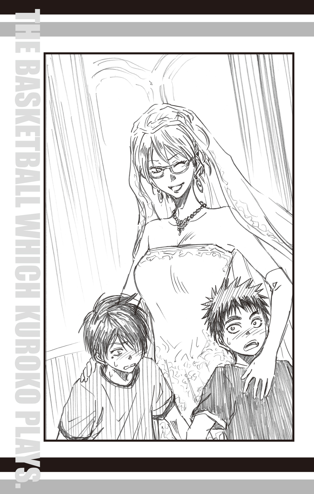
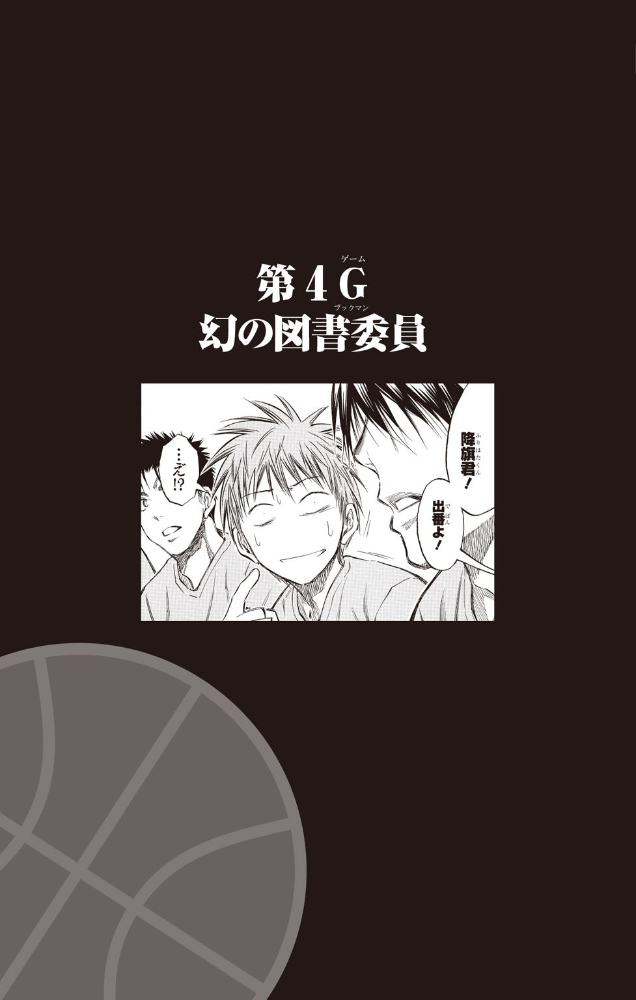
窓を開けると、早朝にもかかわらず蝉の鳴き声が聞こえた。
夏がくる。
閉め切っていた部室に流れこむ微風に、小金井慎二はそんな感傷めいたことを考える――わけがなかった。
「うーっ、あっちいよーっ！」
小金井は嘆きの声をあげた。
なにしろ部室にはバスケ部の男子全員が、ぎゅうぎゅうに詰めこまれているのだ。朝練のあとなので、全員が汗だくである。
つまるところ、部室内は非常に暑い。
「もうなんか、すげーもわっとしてるっ！ もわっとしすぎて、外の風も入りこめない感じ！ ......え、なに水戸部？ エントロピーの法則？ いまそんなの聞いてないよ！」
一見一人芝居のように見える発言だが、実は寡黙な水戸部凛之助の面持ちから細やかな心情を読み取っての会話である。常人にはなかなか真似できない器用さを発揮する小金井に、主将の日向順平が口を開いた。
「口動かす暇があったら、さっさと着替えろ。遅刻すっぞ！」
「へーい......」
小金井はとほほ......と肩を落とし、窓辺を離れて自分のロッカーへと向かう。
「............あの、よかったらオレ、外で着替えましょうか......？」
そう申し出たのは、一年の降旗光樹だ。小金井が「え、なんで？」ときょとんとすると、降旗は恐る恐るといった様子で言った。
「いや、あの......何人かが外で着替えれば、少しは部室広くなるし、涼しいかなって......それにオレ、一年ですし......」
「降旗、そういう気づかいはしなくていいぞ」
伊月俊がふんわりと笑って言った。
「一年だから外とか、二年が優先とか、誠凜バスケ部では気にしなくていいから」
「そうだな。せっかく全員分のロッカーが部室にあるんだ。中で着替えればいいさ」
伊月の言葉に木吉鉄平も笑顔で同意する。
先輩ふたりに言われ、降旗は照れたようにはにかむと「......はい」とうなずいた。
「つーか、外で着替えなくても、ドアも開けとけば風が入るんじゃねーの？」
そう言って、火神大我はドアノブに手をかけた。それを見て黒子テツヤが「それはどうでしょう......？」と遠回しにいさめる。
「なんだよ、黒子。ドア開けたほうが、風の通り道ができるだろ」
「火神くんにしてはとても理にかなった意見ですが......」
「おいっ」
「その格好で開けるのはどうかと思います」
黒子の指摘に火神は自分の服装を見下ろした。
「なんで？」
「いや、だめだろう、それ！ 丸見えじゃん！」
同じく一年の河原浩一がすかさず言うと、やはり一年の福田寛がうなずいた。
「火神、ドア開けるなら、せめて着替え終わってからにしろよ」
「ああ、そういうことか」
ようやく火神は納得し、Ｔシャツをかぶる。
「でも、たしか着替え中はドア開放禁止になったんじゃなかったっけ？」
おだやかに言う土田聡史に、「そうなんですか？」と黒子が振り向いて尋ねた。
「校則で決まってるわけじゃないけど、暗黙の了解っていうのかな。去年、アメフト部とラグビー部が着替え中にドアを開けっ放しにして、女子生徒からクレームが出てね。『見たくもないものを、見せるな』って」
土田の説明に、黒子たち一年生はなるほどとうなずく。唯一、火神はげんなりとして、
「『見たくもないもの』って......なんか、すげー扱いっすね」
「リコだったらむしろ、『見てあげるわよ』って言うんだろうけどな」
木吉が誠凜バスケ部のカントク、相田リコの名をあげて、どこか誇らしげに言うと、小金井が「それはそれでどうかと思うけどね......」と微妙な顔をした。
「おい、口を動かすのはそれぐらいにして、さっさと着替えろ！ 遅刻したら午後練、倍だぞ」
いい加減、苛つきを含みはじめた日向の声に各自、いそいそと手を動かし始める。
だが、手を動かしながら、口も同時に動かせるもので、
「......つか、水戸部先輩のロッカーって開いたとこ、見たことないんすけど」
「それはさぁ、すげー技があんだよっ！ 知りたいっ!?」
「小金井先輩、ぜひ教えて下さい。興味あります」
「よしよし！ 教えてしんぜよう......えー、いいじゃん、水戸部教えてあげようよ！」
黙々と着替えることができるのは、常に寡黙な水戸部ぐらいで、エネルギー溢れる男子高校生が口を閉じることはない。そして口の動きがなめらかになると同時に、手がおろそかになってしまうのも、世の常。
珍しく抵抗する水戸部を土田がホールドし、「実はさ......」と声をひそめる小金井の周囲に、日向を除く全員が体を寄せ合った。そして、小金井の話がいよいよ核心に触れようとした、そのとき、
「だ～か～らっ、早く着替えろっっ!! ダアホッ!! 時間を無駄にすんなっ」
日向の怒声が部室の外にまで響いた。
青空の青が日に日に濃くなっていく七月中旬。
インターハイ予選の対桐皇戦で敗北して以来、調子を崩していた誠凛メンバーは、徐々にその〝敗北〟を乗り越え、次のステップへと進もうとしていた。
次なる目標はウィンターカップ。
そしてその前に迎えるのが、天下分け目の夏休みである。
着替えを終えて部室を出た一同がぞろぞろと教室へと移動していると、黒子と降旗が連れだって、最後尾を歩いていた日向に近寄った。
「キャプテン、ちょっといいですか？」
「ああ、どうした？」
「今日の午後練なんですけど、ボクと降旗くんは一時間ほど遅れます。図書委員の仕事が放課後に入ってしまって」
「いつもは昼休みの係に回してもらってるんですけど、今日はどうしても放課後にも入ってくれって言われて」
降旗と黒子は共に図書委員会に所属している。図書委員の活動は昼休みと放課後に開放する図書室での仕事がメインだが、ふたりは部活があるため他の委員と相談し、昼休みを主な担当とさせてもらっていた。しかし、いつも放課後を担当している委員から急遽頼まれ、今日は放課後も受けもつことになってしまったのだ。
「ま、委員会なら仕方ねぇな。カントクにはオレが伝えておくよ」
「お願いします」
降旗と黒子はそろってぺこりと日向に頭を下げた。
「図書室っていえばさー、知ってる？」
話を聞いていたらしい小金井が、器用にも後ろ歩きで三人に近づいて言った。
「誠凛高校七不思議のひとつが、図書室にあるんだよ」
「え？」
黒子がきょとんと目を丸くし、隣の降旗はぎょっと目を見開いた。
小金井はにやーっと目を細めると、声を落として続ける。
「図書室の奥にある、準備室。あそこってエアコンがあるわけじゃないのに、なぜか一年通していつも涼しいんだよね。それにはわけがあってさ........................」
「ど、どんなわけなんですか!?」
ドキドキと降旗が先を急かすと、小金井はますます猫のような顔をして笑った。
「それは......あ、オレこっちだわ」
「へ？」
気づくとそこは階段前。二年生の小金井の教室はその階段を上った先にある。
「残念。今日はここまで！」
「えーっ！ 気になりますよ、小金井先輩！」
降旗が情けない声を出すと、小金井は「まあまあ、あとでのお楽しみに！」と笑って階段を駆け上がっていった。続いて日向も「じゃあ、放課後な」と階段を上っていく。
「気になる......」
「気になりますね......」
降旗と黒子が気持ちを一つにしたとき、
「おーい、ベル鳴るぞー」
先を歩いていた火神に急かされ、ふたりは慌てて教室へと向かった。
図書委員の昼休みの活動は、本の貸し出しと返却の手続きだ。
カウンターの内側に並んで座り、黒子と降旗は訪れる生徒たちに対応していた。
夏休みが近いことから、長期貸し出しが始まっている。このため図書室へ本を借りに来る生徒も、通常よりもやや多いようだ。
貸し出し対応が一息ついたところで、降旗は「んーっ」と大きく伸びをした。
「けっこうみんな、本を借りていくんだなー。ちょっと驚いた」
降旗の隣では、黒子が本に挟まれていた貸し出しカードを重ねてトントンとそろえている。これがお札なら、ちょっとした豪遊ができそうな枚数だ。
「夏休み中に今まで読めなかった本を読もうと思う人は多いと思いますよ。長編に挑戦するのもいいですよね」
「そっかー。黒子も、夏休みに読むぞって決めてる本とかあるの？」
「はい。ハードカバーの分厚い本、購入済みです。作者が構想十年かけた大作らしいので、腰をすえて取り組もうと思っています」
黒子がどことなく気合いをこめて鼻を膨らませるので、降旗は「おお......」と感嘆する。
いつも必要最低限のことしか話さない黒子だが、本については別だということを降旗は同じ委員会に入って知った。
他にも、返却された本を書架にしまいに行くとそのまま本棚の物色をはじめてしまい、なかなか作業が進まなくなるクセがあること、ページを開いたまま伏せて置かれている本を見かけると、栞を挟んで本を閉じておくことも、今では知っている。
委員会の仕事と部活の両立は大変だが、この寡黙なチームメイトの知られざる一面が垣間見えるので、降旗は図書委員であることを意外と楽しんでいた。
クラスの違うふたりが、部活を離れたところで話すのも、同じ委員会ならではだ。
「そう言えば、この前教えてくれた映画、面白かったよ。ほら、ミステリーのやつ」
「もう観たんですね。ボクは原作だけ読んで、まだ映画は観てないんです」
「映画は原作とラストが違うらしいよ。ちなみに映画では、途中で死んだと思った奴が......」
と、降旗が語ろうすると、黒子はさっと両耳を手で塞いだ。
「あ、言っちゃだめ？」
「当たり前です。降旗くんは今、世界中のミステリーファンを敵に回すことをしています」
「そんな大げさな......」
小声でふたりが話していると、「ちょっといいかな」と声をかける人があった。
「はい、返却ですか......あれ？」
降旗は顔を上げ、カウンターの向こう側に立っていた意外な人物に目を瞬いた。
「伊月先輩、どうしたんですか？」
「今日はふたりが図書当番って聞いたから、寄ったんだ。ちょっと探している本があって」
伊月はにこにこと人の良さそうな笑顔で答えた。
「何という本ですか？」
黒子が尋ねる。伊月はどんな本を読むのだろうと、降旗は興味津々で伊月の答えを待った。
「『サラリーマン川柳』って、あるかな？」
「......はい？」
降旗がぽかんとして、聞き直す。
「なんですか？」
「『サラリーマン川柳』の本、置いてないかなと思って」
「......さすがに置いてないですね」
申し訳なさそうに答える黒子に、伊月が「そうか......」と肩を落とした。
「ダジャレの勉強に『サラリーマン川柳』がいいと薦められたから、読んでみたいと思ったんだよね」
降旗はまじまじと伊月を見つめた。目の前に立つ先輩は心の底から「サラリーマン川柳」がないことを残念がっているように見える。黙っていれば、美形の部類に入るこの先輩と「サラリーマン川柳」が結びつかず、降旗は思わず尋ねた。
「誰に薦められたんですか？」
「木吉から」
「............」
降旗は思わず沈黙した。木吉はつい最近、部に復帰したばかりなので、降旗はまだ彼のことをよく理解していない。だが、日向が「変人」と称するだけあって、やはり少し変わっている人のようだ。
一方で黒子は別のところが琴線に触れたようだ。
「まさか伊月先輩がダジャレも勉強されてるとは知りませんでした。すごいです」
黒子の尊敬の念のこもった言葉に、降旗が「そっちなの!?」と驚いていると、伊月は少し照れ笑いした。
「やっぱり何事も研究は大事だと思ってね。それに最近、どうもネタのキレが悪くて。ちょっとスランプなのかもしれない......」
「最近はどういうのを思いついたんですか？」
「今日ネタ帳に書いたのは『優雅な日向』『伊月のいいズッキーニ』」
「スランプですね」
そんなはっきりと言うなんて、と思わずハラハラする降旗だが、伊月は気にしてないようで、「スランプなんだよ」といたって深刻そうに答える。
真剣に悩むふたりを交互に見つつ、降旗はこっそりと「レベル的にはいつもどおりだった気がする......」と思った。
「『サラリーマン川柳』の本、購入希望を出してみてはどうでしょうか。審査が通れば、図書室に入れてもらえるかもしれませんよ」
そう言うと、黒子はカウンターの脇に置いてある「購入希望用紙」の山から一枚とり、伊月の前に置いた。
伊月は言われるままに用紙に必要事項を埋めていく。
「審査って、厳しいのか？」
「そのようです。でも、勉強目的だということが伝われば比較的通りやすいそうですよ」
「よし、オレの熱意をこの用紙にこめる」
「蛍光ペンでアンダーラインとか引いてはどうですか？」
「名案だ。審査する先生の目に留まらないといけないからな」
それって懸賞はがきの技なんじゃ......と、降旗は心の中で思ったが、伊月が蛍光ペンで慎重に用紙の縁取りをする姿を見ては、何も言えなくなってしまう。
伊月がダジャレに関する研究への熱意を購入希望用紙にこめていると、「あれ、そろってるな」と声をかける人物がいた。
入り口のへりに頭をぶつけないように、ひょいと背中を丸めて入ってきた木吉だ。
「木吉、おまえも来たのか」
「ああ。借りてたカセットを返却しにな」
そう言うと、木吉はカセットをごそっとカウンターに置いた。
図書室には貸し出し対象としてカセットも用意されている。ＣＤではなくカセットなのは、おそらく誰かの寄付なのだろう。
降旗は返却手続きをしようとカセットを手に取り、おやと動きを止めた。
「これ全部、落語なんですね」
どのカセットのケースにも、大きく『落語』と書かれていた。
黒子もカセットを手に取り、「ああ、古典ですか」とひとり得心する。
「木吉先輩らしい、いい趣味ですね」
「んー、やっぱりオレってそう見えるか」
木吉はほがらかに笑う。木吉の発言の意図するところがわからず、黒子が尋ねた。
「違うんですか？」
「これはオレが借りたんじゃないんだ。リコと日向が借りてくれたんだよ」
「カントクとキャプテンが......？」
「オレが入院している間の差し入れにさ。オレが好きそうだからって選んでくれたらしい」
「......そうでしたか」
リコと日向が木吉のためになにを差し入れようか一生懸命に考えている姿を思うと、微笑ましかった。思わずほっこりする黒子と降旗だが、
「でも、オレはそれまで落語ってまったく聞いたことなくてなぁ、慣れるまで苦労したよ。しかもカセットを聞くラジカセもなくて、初期投資がけっこうかかったんだ」
いやぁ、まいったまいった、と笑う木吉に「それってかえって迷惑だったんじゃ......」と微妙な感想が芽生えるが、木吉が幸せそうに言うので、降旗と黒子には何も言うことはなかった。もちろん伊月も、同中のよしみであるリコと日向には秘密にしようと心に誓う。
「......えっと、返却手続きすませますね」
降旗はカセットの貸し出しカードと、木吉の読書カードに返却日を記入する。何気なく見ると、カセット以外では太宰治の作品名が並んでいた。筆跡が違うので、木吉の趣味はこちらなのだろう。
黒子は返却されたカセットをカウンター奥の返却用ラックに運んだ。しかし、なにを思ったのか、ラックには置かずにカウンターに戻り、伊月の前に置いた。
「伊月先輩。この落語のカセット、聞いてみてはいかがですか？」
「え？ なんで？」
「ダジャレを勉強するなら、落語の下げは参考になると思います」
降旗が「下げってなに？」と尋ねると、「オチのことですよ」と黒子が説明した。
「サラリーマン川柳がいつ入ってくるかわかりませんから、ひとまずこれで勉強されてはどうでしょうか？」
「なるほど......。じゃあ、そうしようかな」
聞いていた木吉も、「おお、いいんじゃないか。どれも面白かったぞ」と太鼓判をおす。
「しっかり勉強して、夏合宿では傑作を披露するよ」
さわやかな笑みを見せる伊月に、
「楽しみにしています」
黒子が本気とも冗談ともわからない、いつもの無表情で答える。
いや、違うなと降旗は思い直す。黒子は冗談が苦手だから、おそらく本気で伊月に面白いダジャレを期待しているのだろう。
ハードル高くしてるな......と降旗は思う。そして、ハードルが高いといえば。
「夏合宿か......」
降旗はつぶやいた。
「どうかしましたか、降旗くん」
小さな声だったが、聞こえたらしく、黒子が降旗に振り返った。
「い、いや、なんでもないよ！ あの、伊月先輩。カセットの貸し出し手続きをしますね」
降旗は伊月から読書カードを受け取り、手続きをはじめた。
伊月にカセットを渡したところで、
「お、やってるな」
と、今度は日向が現れた。
「日向も本を借りに来たのか？」
木吉が尋ねると、日向はふるりと首を振る。
「いや、今日は新刊のチェック。黒子、今月の新刊入ったか？」
「はい。そこの掲示板にリストが貼ってあります。でも、今月は日向先輩が読みたい本は入ってないですね」
黒子の答えに日向が残念そうに肩を落とした。
「そうか......無駄足だったか......」
「なにか探してる本があったのか？」
伊月が問うと、日向は言った。
「戦国時代の本が新しく入ってないかと思ってさ」
「主将は図書室にある戦国本は全部読破されたそうなので、新刊待ちなんです」
「全部!? すっごいなっ、日向！」
木吉が驚きのあまり、思わず大きな声を出す。途端、図書室にいた他の生徒からギロリと鋭い一瞥をくらう。慌てて日向と伊月と降旗はぺこぺこと周囲に頭を下げた。
「ばかっ、声がでけーんだよ！ ただでさえ、その身長で目立つってのにっ！」
日向が音量抑え気味の声とともに、木吉の脇に鋭い一撃を決める。うぐっとうめきたいところを、木吉は呑みこみ、「......すまん。つい、な」と小さな声で謝った。
「でも、図書室にある戦国本を全部読んでるって聞いたら、誰でも驚きますよね」
降旗が木吉の肩を持つと、「そうだよな」と木吉が真顔でうなずいた。
「読破するなんて、なかなかできねーよ。ほんとすごいぞ、日向」
「............なんか、おまえに褒めらても嬉しくないんだが」
「なんで？」
「......なんとなく裏がありそうで」
「ああ、たしかに......」
伊月が苦笑する。日頃、天然とも計算とも取れる発言の多い木吉だけに、日向の疑いももっともだ。
「オレは本気で褒めたんだけどな......」
木吉が寂しく肩を落とす。
「でも、もしかしたらバスケ部で一番の読書家は日向かもしれないな」
その伊月の言葉に、日向の耳がぴくりと反応した。
「まあたしかに......この読書カードも裏面までいったけどなっ」
縁なし眼鏡をキランッと光らせ、日向は自分の読書カードをぴしっと黒子たちに突きつけた。
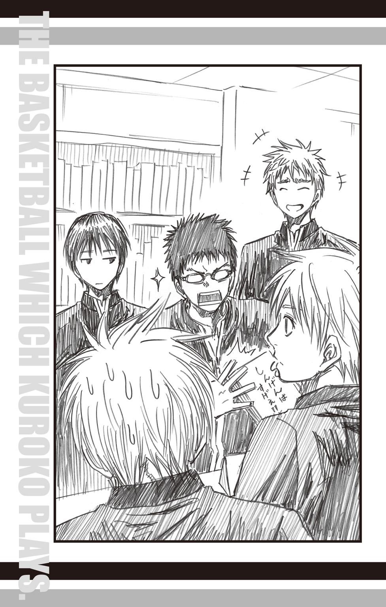
学年が変わる度に新調される読書カードだが、日向のカードはすでに両面びっしりと書名が並び、さらにカードの右上に書かれた通し番号は「三」にまで達していた。
「すごいですね、キャプテン......！」
降旗が尊敬の眼差しで日向を見つめる。降旗の読書カードは図書委員であるにもかかわらず、まだ三行しか埋まっていない。
「そうだろうそうだろう、もっと尊敬するがよい」
日向は腕を組み、満足そうにうなずいた。
「......ちなみにボクの読書カードはこんな感じです」
そう言うと、黒子も自分の読書カードを差し出す。
黒子の読書カードは表面だけ本の名前で埋まっていた。しかし、その通し番号は、
「え、十!?」
一同は目を丸くし、その数字を見つめた。日向の手から音もなくカードが滑り落ちる。
「............黒子って、意外と負けず嫌いだよね」
伊月と木吉、そしてしょんぼりと肩を落とした日向が教室へと戻っていく姿を見送りながら、降旗が言うと、黒子は「そうですか？」としれっと言った。
降旗はやれやれと苦笑交じりの息をつくと、頭を切り換える。そろそろ図書室が一番混む時間帯――昼休み終了十分前なのだ。
昼食を終えた生徒たちが続々と図書室を訪れ、貸し出しと返却でカウンターは忙しさのピークを迎える。
「よし、頑張ろうぜ」
「はい。今日こそは降旗くんの前に行列を作らないよう努力します」
「うん。オレも黒子が気づいてもらえるよう、サポートする」
「はい。よろしくお願いします」
そうこうしているうちに、次々と生徒が押し寄せ、まさに怒濤の十分間が始まった。
協力し合ってどうにか滞ることなく手続き処理をこなし、予鈴とともに図書室を出る。
廊下に出たところで、見慣れたうしろ姿が目に入った。
「河原、福田！」
降旗が声をかけると、前を歩いていたふたりが振り返る。
「おー、降旗、黒子。図書委員、おつかれ」
河原は立ち止まり、にっと黒子たちに笑いかけた。
「火神くんは一緒じゃないんですか？ 今日はおふたりと一緒にお昼を食べるって言ってましたけど」
「昼飯は一緒に食ったよ。で、あいつは今、職員室。なんか呼び出しかかったんだって」
やはり立ち止まっていた福田が苦笑しつつ教えてくれた。
降旗と黒子がふたりに追いつくと、四人はそろって歩き出す。
「呼び出しってことは......成績のことかな？」
降旗が言うと、黒子がうなずいた。
「かもしれません。期末テストの結果がちょっと厳しそうでした」
「『ちょっと』で済めばいいけどなー」
「だよなー。『ちょっと』じゃすまないのが、バカガミがバカガミたるゆえんだよな」
降旗、河原、福田がうんうんとうなずきあう。
「そういやさっき、キャプテンに会ったんだけど、なんかすげー落ちこんでた」
どうしたんだろうな、と心配する福田と河原に、降旗はちらりと黒子を見た。
黒子は困ったように、ぽりぽりと頰をかいている。それを見て福田が尋ねる。
「火神、もしかして成績が悪くて夏合宿行けないとか？」
「いや、そうじゃないんだ......」
降旗が図書室での一件を話すと、河原と福田はぽかんとし、その後、吹き出した。
「黒子、それはねーよっ！」
「やり過ぎだって！」
けらけらと笑う河原と福田に、黒子は首をひねる。その様子がさらに河原と福田の笑いを誘った。
「でもさ、キャプテンも黒子もすごいよな。毎日あんだけ部活してて、よく本が読めるよ」
「あーっ！ それはオレも思う！ 最近の生活って、寝る・学校・バスケの三拍子だもんな。家に帰って本読むなんて、完全に別次元だわ」
河原の言葉に、降旗は思わず息を呑む。
あの日以来、ずっと胸の奥でくすぶってる思いを打ち明けるべきか迷い、逡巡し、やがて、
「だよなぁ！」
と、その場に合わせた口調で答えた。うまく笑えているかが少しだけ気がかりだった。
放課後、降旗と黒子が連れだって廊下を歩いていると、図書室の前に水戸部が立っていた。
水戸部は図書室の中をのぞきこみ、きょろきょろと何かを探しているようだ。
「水戸部先輩、どうかしたんですか？」
黒子が声をかけると、水戸部がほっとした顔で黒子と降旗に向き直った。
「誰か捜しているんですか？」
降旗が尋ねると、水戸部はこくりとうなずいて、黒子と降旗を見つめる。どうやら自分たちに用があるとわかり、黒子と降旗は思わず顔を見合わせた。
「なにか本をお探しですか？」
黒子の問いに水戸部は首を振り、手に持っていた筒状のものを差し出した。
それは大きな白い紙をくるくると巻いたもの。
降旗が紙を受け取り、広げる。白い紙はＡ３サイズのケント紙で、その中央に黒い文字が並んでいた。
「『過信注意！ 熱中症』......？」
キレイにレタリングされた文字を降旗が読み上げると、水戸部はこくりをうなずく。
「もしかして、保健委員会の啓蒙ポスターですか？」
黒子が水戸部を見上げると、彼は嬉しそうにこくこくとうなずいた。
啓蒙って言葉をはじめて日常生活で聞いたな、と降旗は思いつつ、水戸部が保健委員だったことを思い出す。
ポスターの端に生徒会の許可印がおしてある。正式なポスターのようだ。それを水戸部が持ってきて、黒子と降旗を捜していたということは、つまり――。
「このポスターを図書室に貼ればいいんですね？」
降旗が尋ねると、水戸部はぱっと顔を輝かせ、うんと深くうなずいた。
「わかりました。では図書室の目立つところに貼っておきますね」
黒子が言うと、水戸部は「よろしく」というように頭を下げて去っていった。
降旗は水戸部を見送り、ささやかな達成感に包まれた。
「はじめて水戸部先輩とちゃんと会話できた気がする」
じぃぃぃんと達成感の余韻に浸っていると、
「なになに、こんなところでどうしたの？」
明るく声をかけてきたのは小金井であった。小金井の隣には土田も立っている。部活に向かう途中で立ち寄ったようだ。
黒子が水戸部からポスターを預かったことを伝えると、土田が感心した様子で言った。
「ちゃんと意思の疎通ができて、きっと水戸部もうれしがってると思うよ」
「そうそう！ これからじゃんじゃん話すといいんじゃないかな！ 水戸部っていろんなこと考えてるから、話聞いてると楽しいし！」
「え、聞く......？」
小金井の勧めに思わず固まる二人を見て、土田は苦笑する。
「うん、まあ、そんなに深く考えないで、普通に接すればいいと思うよ。ちなみにオレも水戸部の声は聞いたことないけど、会話に困ることはないかな」
「そ、そうですよね......」
「それよりさぁ、あの話はもう聞いちゃった？」
小金井が黒子と降旗を交互に見て言った。
「あの話って......なんですか？」
「ほらほら、図書室にある誠凛高校の七不思議だよっ！」
降旗が「あっ！」と声をあげる。
朝練のあとに小金井からそのような話を聞いたことを思い出す。すっかり忘れていた。
「他の誰かからもう聞いた？」
「いえ、まだです」
降旗が答えると、小金井はにまっと嬉しそうに笑った。
小金井は怪談好きだ。聞くのも好きだが、語るのも好きだった。そして語るなら、相手が初めて聞く話のほうが、反応が楽しめる。
「ではではー、教えてあげましょう。えーっと、どこまで話したっけ？」
「図書室の準備室は、一年中涼しいってところまで聞きました」
降旗が答えると、「では、その続きから」と小金井は声をひそめる。
「......これは去年の夏休み明けの話。図書室の準備室が涼しいって噂が立ちはじめてだいぶたった頃、ふたりの男子生徒が授業をサボって準備室に忍びこんだんだって。あそこは人目もないからサボるにはぴったりだったんだろうね。ふたりは準備室で雑談しているうちに......眠ってしまった。夕方になり、ひとりの男子生徒が目を覚ました。西日が差しこんでいるのに、室内はやっぱり涼しい。なのに、その生徒は汗をかいていた。涼しいはずなのに、なぜか汗がとまらない。呼吸も荒くなる。彼は混乱し、一緒にいた友人を捜した。......いないんだ。一緒にいたはずの男子生徒はいなくなっていた。先に帰ったのかなと思うけれど、鞄は置いてある。そこでようやく彼は認める気になった。一緒にいた友人がいなくなったのも、どうして自分が汗をかいているのかも、本当はわかっていたんだ。ただ、彼は現実を認めるのが怖かった。目を覚ましたときから聞こえる、地を這うようなうめき声。そして、彼の足をつかむ、血まみれの友人の手が！」
「ギャ――――ッッ!!」
「ひぃぃぃぃぃぃ!!」
突然の叫び声に、降旗は飛び上がり、咄嗟に黒子の背に隠れる。
「なっなっなっななな!?」
驚きのあまり歯の根が合わずにいる降旗に、小金井はにゃはっと笑った。
「いやー、見事な驚きっぷりだな、降旗」
「そこまで驚いてくれると、オレも協力した甲斐があるよ」
土田もにこにこと笑う。
「しかし黒子は驚かないなー。びっくりした顔が見たかったのに」
小金井が残念そうに言うと、「すみません、オチが見えてしまって......」と黒子はぽりぽりと頰をかいた。
「この怪談はふたりで話すのが定番なんですか？」
「そうそう。ひとりが話して、もうひとりが悲鳴を担当するの。凝ってるでしょ？」
と小金井はあっさりと仕掛けをバラす。
「凝ってるって......ひどいですよ。オレ、すげー驚いて、恥ずかしいじゃないすか......！」
降旗が抗議すると、土田が「ごめんごめん」と困り顔で謝った。
「でも大丈夫。オレも最初にコガと伊月から聞かされたときは、同じぐらい驚いたよ」
「日向なんて、驚いたあとむちゃくちゃ怒って怒って、大変だったよね！」
「......そんなに怒られたのに話すんですね......」
黒子が呆れたようにつぶやいた。小金井には聞こえなかったようで、「ん、なに？」と聞き返され、黒子はなんでもないと首を振る。
小金井は黒子の様子に「なんだよぉ」と口を尖らせるが、ふと思い出したように言った。
「この怪談って、あながち噓じゃなくて、準備室からうめき声が聞こえたって言う生徒はけっこういるんだよ」
「え............」
降旗が大きく目を見開き、確認するように土田を見た。土田はにっこりと微笑みながら、肯定するようにうなずく。
そこは笑顔でなくてもいいのに、と降旗はぞっとしながら思った。
土田と小金井が降旗の心にやっかいな置き土産を残して部室へと立ち去ったあと、図書委員のふたりはようやく仕事に取りかかった。
いつもならカウンターの貸し出し手続きの他に、本を書棚に戻す作業があるのだが、今日はさらに別の仕事も与えられている。
延滞図書の催促だ。
夏休みが始まる前に返却期限を過ぎても返ってきていない本を速やかに回収することが、この時期の図書委員にとって大事な任務となっている。
司書の先生から延滞者一覧のメモをもらい、黒子と降旗は催促するために出かけた。
メモをもとに生徒を訪ねては本の返却をお願いして回るのだが、当然生徒に会えない場合もある。そのときは「図書委員からのお知らせ」というメモ――通称、催促状を残していく。放課後なので会えない確率のほうが高いが、会えれば直接会いに来たということもあり、本の返却率がぐっと高くなるという寸法だ。ときには、そのまま本を預かることもあった。
ふたりはまず二年Ｃ組のクラスへと赴いた。
教室をのぞくと、目的の生徒――相田リコの姿はなかった。
「ここにいないとなると......」
「あそこですね」
降旗と黒子は教室を出て、生徒会室へと向かう。
リコはバスケ部のカントクを務めながら、生徒会の副会長にも就いていた。今日は生徒会の定例会議があるはずなので、今から行けばおそらく会えるだろう。
予想は的中し、生徒会室前の廊下でリコを見つけることができた。
ちょうど生徒会の会議が終わったところらしく、書類を手にしていた。リコは黒子と降旗に気づくと「あら？」と驚いた。
「今日は図書委員で部活に出るのが遅れるって、日向くんから聞いたけど？」
「はい。あの、図書委員の仕事で来ました」
降旗が返却されていない本があることを告げると、リコははっとして謝った。
「ごめんっ！ 借りっぱなしだったわね！ すぐ返すわ！」
持って行ってほしいというリコの要望に従い、黒子と降旗は二年Ｃ組のクラスへ戻った。
「これなんだけど......」
リコはそう言って、自分のロッカーから未返却だった本を取り出す。
その数十冊。貸し出し上限いっぱいまで借りた本は、どれもがスポーツトレーニング関連のもののようだった。
「全部読み終わってたんだけどインターハイでばたばたしてて、返すのが遅くなっちゃった......ごめんね」
頭を下げるリコに、降旗は慌てて「大丈夫です。オレたちで返しておきます」と答えた。
「助かるわ。借りるときは一冊ずつだったんだけど、これだけそろうと、運ぶのがちょっと大変だなって思ってたの」
「そうですよね......」
降旗は改めて本の山を見る。どの本も分厚いハードカバーだ。しかもカラーページが多いようで、けっこう重い。
「では、これはボクたちが預かります。カントクの読書カード、こちらで返却印をおしますけど、いいですか？」
黒子が確認すると、リコは「よろしくね！」とにっこり笑った。
降旗と黒子は手分けをして、「よいしょ」と本を抱きかかえた。
「じゃあ、カントク。オレたちはこれで......」
「うん。またあとで、部活でね」
挨拶を交わし、それぞれが別方向に歩き出したとき、
「あ、そうだ」
リコはくるりと振り返り、ぱたぱたと降旗に駆け寄った。
「降旗くん」
「はい？」
「夏合宿のアレ、早く出してね」
「あ......はい」
「じゃ、またあとで」
リコはそれだけ言うと踵を返し、体育館へと歩いて行った。
降旗はそのうしろ姿をじっと見送る。
「......降旗くん？」
黒子に名前を呼ばれ、降旗が我に返った。
「あ、ごめん。えっと......一度、図書室に戻ろうか」
「そうですね。これを持って歩くのは大変そうですし......。あれ？」
「どうした？」
「いえ......たいしたことじゃないんですけど、カントクの本の中に、一冊ジャンルが違うものがあるなと思って」
そう言う黒子の視線は、降旗が抱える本の一冊に注がれていた。
降旗も抱えている本の背表紙を見ようと、身をひねる。
スポーツトレーニングの本ばかりだと思っていた中に、たしかに一冊だけ別の本が紛れている。黒子が本のタイトルを読み上げた。
「『ボリューム満点！ デリシャスクッキング』......料理の本みたいですね」
「カントクも女の子らしいところあるんだ」
「降旗くん、それをカントクに聞かれたら危険だと思います」
「......ナイショにしておいてください」
「わかりました」
ふたりは顔を見合わせてふふっと笑いあう。
このふたりが、リコのデリシャス以前のデンジャラスクッキングを味わうのは、これから数日後の話である。
延滞者全員を回り、図書室に戻ると今度は返却本の片づけが待っていた。
黒子と降旗は返却された本を載せたラックを押して、図書室を回る。
分類番号に従って本を書棚に戻しながら、なんとはなしに話しているうちに、話題は先日の練習試合のことになった。
木吉の提案により、スタメン全員が一年生という異例な形で行った試合のことだ。
降旗、河原、福田の三人は初めてユニフォームを着てスタメン出場し、非常に緊張していたが、試合結果はそれほど悪いものではなく、リコからも及第点をもらう内容だった。
「......やっぱ、火神はすげーよなぁ、よくわかったわ」
試合を振り返り、降旗がしみじみと言う。
普段、部活中のゲームでも幾度となく対戦してきたが、あらためて対外試合で同じチームメイトとして戦うと、やはりそう感じずにはいられない。
火神のすごさは格違いだ。その火神といえば――。
降旗は書棚の番号を目で追いながら言う。
「火神とは仲直りできたんだな」
「え？」
「ほら、最近まで火神のやつ、様子が変だったろ。なんつーか、ワンマンになっちまって。特におまえら、ぎくしゃくしてて......。なんかごめんな？ なんもできなくて」
「......そんなことありません。こちらも心配をさせてしまい、すみません」
「えっ？ 黒子が謝ることじゃないよ」
「......では、ありがとうございます」
「えっ!? なんでお礼？」
「ボクたちのことを心配してくれてるので」
「......それって普通じゃん？」
降旗は首をひねった。正直、心配するぐらいしかできず、他にはなにもできなかったというのが、実感だ。
「......ボクが前にいたチームはそういうことから、離れていってしまっていたので」
黒子は淡々と答えたが、それがかえって降旗に罪悪感を抱かせた。余計なことを言ってしまった、と。
黒子は自分のことをあまり語らない。それでも彼が『キセキの世代』の考えに否定的であることは、降旗も知っていた。
一度はバスケをやめたこともあるらしい。バスケが嫌いになったことがあるとも聞いている。なのに、もう一度バスケをやろうと決めたきっかけは知らない。
気になるが、好奇心だけで聞いてはいけない気がしていた。
だから今まで、その手の話題には触れないようにしていたのだが......。
――でも、今ならかえって聞けるかもしれない。
好奇心ではなく、自分に関わることだから、黒子に聞いてみたいことが降旗にはあった。
「黒子、あのさ」
「はい」
「......黒子は、部活が辛いって思ったことない？」
「何度もありますよ。昨日の練習もハードでしたね」
「......え、昨日？」
予想外の答えだった。
「......オレ、黒子はうちの部活なんて辛くないって思ってた」
「なんでですか？ あのハードな練習量を辛くないと思えるほど、ボクはタフじゃありません。自慢じゃありませんが、いつもプール練で最後は記憶が飛びそうになります」
「それ、本当に自慢できないじゃん......」
気をつけます、と黒子は苦笑する。
「......あのさ、じゃあ何で続けてるわけ？」
降旗は黒子が何と答えるか、聞きたかった。
黒子は静かな、いつもと変わらない口調で言った。
「答えになっているかわかりませんが、どんなに辛くてもバスケを続けるのは、『いま、誠凛でバスケをしたい』と、思っているからです」
「ここで............」
「勝ってハイタッチをするのも、負けて悔しさに堪えるのも、信じ合える人たちとしたい。そう思える人――カントク、主将、伊月先輩、水戸部先輩、小金井先輩、土田先輩、木吉先輩、降旗くん、河原くん、福田くん、火神くんたちと、いま一緒にいるからです」
「......そう、なんだ」
どことなく圧倒される思いで降旗はうなずいた。
信じる仲間のために努力し続ける黒子。その姿が眩しく――そしてやはり、〝遠く〟に感じられた。
「......すみません、なんだかボクばかり語ってしまって」
「いや、元はと言えば、オレが聞いたことだし！ 変なこといきなり聞いて、ごめん」
ふたりは互いに照れつつ、書棚に本を戻す作業をスピードアップさせた。
やがて作業が終了し、空になったラックを押してカウンターに戻るところで、黒子が思い出したように言った。
「降旗くん。よかったら、夏休みにボクの練習につきあってもらえませんか？」
「え？ オレ？」
「はい。このまえの練習試合で感じたのですが、まだボクは降旗くんとうまくパスの連携ができていないので、夏休みのうちに克服しておきたいんです」
「でも、オレなんかと調整するより、伊月先輩ときっちりやっておいたほうがいいんじゃないか？」
「伊月先輩とももちろん練習します。ですが、降旗くんと一緒にコートに立ったとき、納得のいくパスを出したいですから」
当たり前のように言う黒子の言葉に、降旗は指先がすっと冷たくなった。全身の血が緊張して凍ってしまったようだ。
「............いやぁ、立てるかなぁ、オレ」
思わず軽い口調で言ったのは、本音と期待が混ざったから。
うなずいてほしいと願うと同時に、そんなもったいないこと願ってはいけないという気持ちにも捕らわれる。
けれど。
「ボクはまた一緒にコートに立ちたいです。降旗くんと一緒にバスケするの、楽しかったですから」
そのとき、司書の先生が降旗を呼んだ。降旗は黒子のもとを離れ、先生のところへと急ぐ。
降旗はその呼び出しに感謝した。
もしもここで呼ばれなかったら、きっと情けない顔を黒子に見られていたに違いない。
このままでいいのだろうか、とふいに思うことがあった。
プロを目指しているわけでもないのに、何故こんなにへとへとになるまで頑張っているのだろう。そんな思いを、バスケを始めたのは自分の意志だからと理性で呑みこむ。
もちろんバスケは好きだし、仲間たちのことも好きだ。
けれど、自分の時間すべてを捧げるバスケに、自分は相応しいのだろうか。
もしかしたら、別の何かなら、もっと活躍できるのかもしれない――。
その思いが、降旗の胸の奥に居座りはじめたのは、先日の練習試合の日からだ。
それほどに、目の当たりにした火神のすごさは圧倒的だった。
同時に強く憧れもし、相反する気持ちに揺れて、降旗は迷っていた。
このままバスケを続けるか、否か。
司書の先生に頼まれ、図書準備室に入った降旗は、そっとポケットに手を入れる。
取り出したのは、夏合宿に参加するための親の許諾書だ。
ずっと提出できずに持ち歩いていた。
もし辞めるなら合宿には行くべきではない――そう、思っていた。
許諾書を持つ手が震えていた。冷え切った指先に、血が勢いよく流れこむのを感じる。
同時に、胸の奥が熱い。満ちていく思いは、喜びだった。
黒子の一言が、嬉しかった。
降旗自身が信じられない〝いつか〟を――一緒にコートに立つことを、黒子は信じている。
その信頼に応えたいと心から思う。
そしていつか、地道な練習で自分を信じる〝勇気〟を築けるといい。
「......よしっ」
血が通い、ほんのりと熱くなった手を降旗はぎゅっと握りしめた。
涼しい室内で、降旗だけが少し火照っていた。
そう、涼しい室内で......。降旗の体温がすーっと急下降する。
ここは一年中涼しい、不思議な図書準備室。
「......っと、さっさと仕事済ませて部活いかねーとなっ！」
降旗はわざと声に出し、準備室の奥へと進む。
天井にまで届く高さの書棚が幾つも並び、その間の通路は人ひとり歩くのがギリギリだ。
誰かが、いやナニカが隠れていても、気づけないだろう。
「い、いやっ！ なに考えてんだ、オレ！」
降旗はぶるぶると、嫌な想像を振り払うように首を振る、そのとき――。
「ウゥゥゥゥゥゥゥゥゥゥゥ!!」
書棚の奥から響くうめき声に、降旗は悲鳴をあげて逃げ出した。
「でたぁぁぁぁぁぁ!!」
準備室から叫びながら走り出てきた降旗に、カウンターに座っていた黒子もさすがに驚いたらしく、わずかに眉を上げた。しかし黒子はすぐに平静を取り戻し、静かに言った。
「降旗くん、大声は......」
「で、ででで、出たんだ！」
降旗はカウンターに寄りかかり、体を支えると、震える手で準備室のほうを指さす。
「う、うううう、うめいてたっ!!」
「......もしかして、小金井先輩が言っていた？」
「それっ!!」
黒子はさっと立ち上がると、すたすたとカウンターを出た。未だ動悸の収まらない降旗の脇を通り抜けながら言った。
「それは確かめないといけませんね」
「うそっ!?」
噓ではなかった。
降旗の制止も空しく、黒子はすたすたと準備室へ向かう。降旗は近づきたくなかったが、黒子をひとりで行かせるわけにもいかず、あとに続いた。
図書室の奥の、図書準備室の扉は降旗が勢いよく開け放したはずが、
「閉まってる！」
「反動で閉まったんでしょうね」
黒子は淡々とドアノブに手をかけた。
「あ、開けちゃうの!?」
「はい」
「で、でも......！」
怯える降旗の制止を聞かず、黒子はさっさとドアを開けた。
「っっ!!」
降旗は目を大きく見開いた。
幾つも並ぶ背の高い書棚。
その光景が目に入ると思っていたのに、なにかが眼前を塞いでいた。
「......なにやってんだ、おまえら」
「火神くん？」
「火神!?」
準備室の扉の内側には、今まさに扉を開けたような体勢の火神が立っていた。
「なんで、ここにいるわけ!?」
降旗のもっともな問いかけに、黒子もうなずく。火神は「あー......」と首の後ろをかいた。
「............補習」
「......は？」
体に似合わない小さな声が聞き取れず、降旗が聞き返すと、火神は焦れたように言った。
「だからっ、補習してんだよっ」
「補習？ え、なんで？」
「......期末テスト、点数がやばかったから......」
ふて腐れ、口を尖らせる火神に、降旗は呆気にとられた。
「なぜ、ここでやっているんですか。補習なら先生も一緒なのでは？」
黒子が火神を押しのけ、図書準備室へと入っていく。渋々といった様子で火神が続き、降旗もあとからついていく。
「補習つっても、プリントなんだよ。んで、先生が教室でやると暑くて集中できないだろうからって、ここを教えてくれたんだ」
「たしかにここは一年中涼しいというので有名ですからね」
「へぇ、そうなのか」
黒子の説明に火神は感心したようにうなずく。どうやら七不思議の噂は知らないようだ。
一行は通路を歩き、準備室の最奥へとやってきた。そこには閲覧用に長テーブルが一つ置かれている。そのうえに、火神のものと思われるプリントやペンケースが転がっていた。
黒子はプリントの一枚を手に取る。ほぼ真っ白だ。
「......難航しているようですね」
「うっせーよっ！」
火神はさらにふて腐れ、ぷいっと顔をそらす。
「もしかしてこのプリントを解きながら、なにか口走ってたんじゃありませんか？」
「は？」
思いがけない黒子の質問に、火神は戸惑って眉を寄せた。反対に降旗は黒子の言わんとしていることに気づき、「あ......」と小さく漏らす。
「つまり、火神がなにか喚いてたってこと？」
と、降旗が尋ねると、「おそらく」と黒子は肯定した。だが、火神は否定した。
「オレは喚いてなんかいねーよ。......まあ、『うおー、わからねぇぇー』とかは言ってたかもしれねーけど」
間違いなく、それだ。降旗は確信し、ほっと胸をなで下ろす。
「火神、驚かすなよー、ほんとにもー......」
「はぁ？ だからオレはなんも言ってねーって。むしろ、さっき聞こえた変な悲鳴のほうが驚くわ」
「あ............」
降旗は自分の失態を思い出し、たまらず項垂れる。その姿に今度は火神が目を丸くした。
「え、なに、あの悲鳴、おまえだったのかよ。すっげー声だったな」
「......わりぃ」
「別に謝ることじゃねーけど。......じゃあ、これが落ちてたのも当然か」
と、火神は机の上に置かれていた紙を取り上げ、降旗に差し出した。
「さっき通路に落ちてたんだよ、おまえのだろ？」
それは夏合宿に参加するための親の許諾書だった。降旗は手を伸ばし、火神からその紙を受け取る。
「......ありがとな、火神」
「おう。つか、さっさと提出しろよ。夏合宿、行けなくなっちまうぞ」
降旗は思わず口元をほころばせた。
ここにもひとり、自分が一緒にバスケをすることを信じて疑わない人物がいる。
「......そうだな。今日の部活でちゃんと渡すよ」
降旗の言葉に、火神がにっと笑い返した。
「夏合宿、がんばろーぜ」
「......うん」
「その前に火神くんは補習をがんばってください」
「うっせーよ！」
黒子の的確なツッコミと火神の予想どおりの返しに降旗は笑った。
少し涼しい準備室を出れば、外は熱と湿度を多分に含んだ空気に包まれている。
彼らが誠凛で初めて迎える夏は始まったばかりだ。
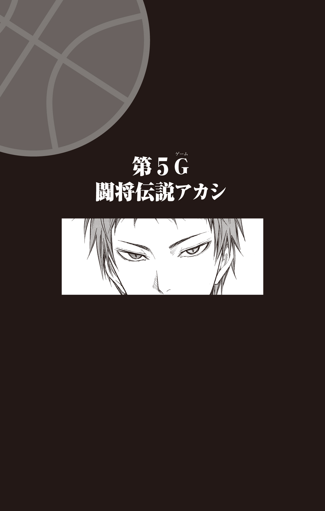
「洋の東西問わず、王子様が乗るのは白馬なのかしらね」
「王子様は知らないけど、赤司の馬は白いらしいよ」
目の前で交わされた会話に、根武谷永吉は盛大に顔をしかめた。元々の強面が、さらに凶悪な顔つきになる。
その鋭い眼差しで、テーブルの対面に座る実渕玲央と葉山小太郎を見つめた。
こいつら何言ってんだ、と根武谷は思った。
ここは洛山高校男子バスケ部の部室であり、顔をそろえているのはムサい（約一名、この表現に猛烈に抗議しそうな人物はいるが）高校生男子三人だ。
とてもじゃないが、昼休みのダラダラ話に『王子様』という単語が交わされるような面子ではない。
そして――赤司の馬とはなんだ。
根武谷は顔をしかめたまま窓の外を見た。空一面を覆う重たげな雲から雨が降っている。
六月になり、ここ京都も梅雨に入った。おかげでジメジメと湿度も高い。
なるほど、梅雨のせいか。
根武谷はひとり納得し、実渕と葉山に向き直った。
「おまえら、脳にカビが生えたんだな？」
「いきなり失礼なこと言わないでよ」
実渕がぎろりと根武谷をにらみつける。
「カビが生えてんのは、あんたのデリカシーのないハートのほうでしょ」
「いや、おまえらだろう。じゃなきゃ、なんで『王子様』なんて言い出すんだよ」
「それは、これよ」
と、実渕はテーブルに広げていた紙をひらりと持ち上げてみせる。
校内で配布されている洛山高校新聞部の校内新聞だった。
今回の取材テーマは近場のプレイスポット。その目玉として某映画村が大きく紹介されていた。新聞部は自ら体験取材をしてきたらしく、カツラをかぶり着物に着替え、殿さまに扮装するまでの過程がモノクロ写真で掲載されている。完成した殿さまには、ご丁寧にも拙い合成で白馬が追加されて、馬上姿よろしく写っていた。
実渕は写真をつんつんと指さし、
「これ見てたら、やっぱり殿も王子も白馬に乗るものなのね、って思ったわけ」
と説明した。
「知るかよ」
「あんたには聞いてない」
呆れ顔の根武谷に実渕はぴしゃりと言い、「それより」と葉山に向き直った。
「なんで征ちゃんの馬知ってるの？」
葉山は黒目がちの目をくりんと輝かせて言った。
「こないだの週末に、赤司が馬に乗ってきたっていうから、どんな馬に乗ってんのーって聞いたら、教えてくれたんだよ」
「そこも気になってたんだが......赤司がなんで馬に乗るんだ」
片腕をテーブルにつき、根武谷が身を乗り出して尋ねると、
「趣味だからよ。決まってるでしょ」
と実渕。
「馬って高校生の趣味かよ、それ」
「でも、自宅にも京都の別宅にも馬場があるらしいし、いいんじゃない？」
と葉山。
根武谷の顔がまたも険しくなった。
「馬場って......あいつん家、牧場なのか？」
「ちょっと、その顔やめてよね。暑苦しい」
実渕は丸めた校内新聞でスコンッと根武谷の額を叩く。
一方、葉山はからりと笑って言った。
「でもさっ、赤司にまつわる話って、もっとすごいのが多いし、これぐらいじゃ驚いてられないって感じじゃん？」
「あー......そうだな」
ようやく根武谷が納得した顔でうなずき、
「征ちゃん、ウルトラスペックの持ち主だものね」
実渕もしみじみと同意する。なにしろ入学早々、バスケ部の主将になり、今では生徒会長も務めているのが赤司征十郞だ。乗馬が趣味でもなんらおかしくはない。
「そういや、またすごい話、聞いたんだっ！」
葉山が身を乗り出し、聞いて聞いてと言わんばかりに実渕と根武谷を交互に見る。
まるで興奮する子犬が「待て」と言われ、うずうずしながら待っているかのようだ。
「なによ？」
実渕はさして興味を示さずに言うが、ゴーサインが出た子犬ははしゃいで言った。
「赤司ってば、今まで一度も負けたことないんだって！」
すごいよねっと葉山は黒目をキラキラさせて実渕と根武谷に同意を求める。
しかし、ふたりの反応は彼が予想したものとは違って、
「そりゃあ、あたりめーだろ」
「そうね。だって『キセキの世代』なんだし、無敗は当然でしょ」
と、至って冷静だった。
葉山は不満そうに口を尖らせた。
「違うって！ バスケだけじゃなくて、どんなことでも負けたことがないんだってばっ！」
「どんなことって、どんなことよ？」
「全部だよっ」
葉山の答えに実渕は困ったように口をつぐんだ。
根武谷がはっと鼻で笑う。
「噂を真に受けんなよ。いくらなんでも、負けたことのねー人間はいねーよ」
「だって赤司だよっ!?」
「でも、この世の中、勝負なんていくらでもあるんだし、それに全部勝ってるなんて......」
現実的ではない話に、実渕が長い指を頰にあて、うーんと首をかしげる。
「えー、レオ姉まで疑うの？ 赤司が言ってたのに？」
葉山の言葉に、実渕と根武谷ともに口をつぐむ。
「......征ちゃんが言ったの？ 自分で？」
実渕がおそるおそる尋ねると、葉山は「もちろんっ！」と胸を張った。
その時だ。
「......なんだ、三人ともここにいたのか」
静かにドアを開けて、赤司征十郞が現れた。
噂の人物の登場に、三人は思わず息を呑んで彼を見つめた。熱い視線を一身に集める赤司だが、さして気にならないようで何も言わずに彼らの脇を通り、持ってきたファイルを書棚にしまう。そして来た道を戻り、彼らの脇を通り過ぎる際に「邪魔をしたね」と軽く微笑んで出て行こうとした。
その洗練された無駄のない動きに、三人はただぼうっと見送りそうになる――が、赤司がドアに手をかけたところで、「ちょっと、ちょっと待てよ、赤司」と葉山が声を発した。
「なんだ、小太郎」
赤司は振り返り、左右がわずかに異なる色彩の瞳で葉山を見つめる。
「あのさ、レオ姉たちが赤司の言ってることは噓だって言うんだけど！」
「噓？」
赤司が目をすっと細くする。実渕はぱっと立ち上がり、赤司に駆け寄った。
「ち、違うの！ 噓だなんて言ってないわ！ ただ、ちょっと......」
「ちょっと、なんなんだい？」
赤司はまっすぐに実渕を見つめた。身長では実渕のほうが高いので、当然赤司が見上げる形になる。それなのに、実渕自身はなぜか見下ろされている気分になるのはいつものことだった。
「............その、不思議だなと思うことがあって」
言葉を選んで実渕は言った。赤司のことは信頼している。故に、その彼の言葉を否定するようなことを言う自分自身に、はがゆさを覚える。一見、矛盾するような心理だが、それを生み出すだけのカリスマ性を赤司は持っていた。
「なにが不思議なんだ？」
赤司の問いに、根武谷が口を挟んだ。
「おまえ一度も負けたことがないって、本当なのか？」
「......ああ、そのことか」
赤司はふっと微笑んだ。
「本当だ。僕は敗北を知らない」
その静かな肯定に、根武谷と実渕はまたも息を呑み、葉山は「ほらねっ！」と胸を張った。
「......一度もか？」
根武谷が念を押すと、
「一度もだ」
赤司はまたも静かに肯定し、「信じられないと思うのも無理はないよ」と付け加える。
それはよりいっそう、「無理でも、信じるしかない」と言っているように根武谷には聞こえた。
根武谷と実渕が何も言えずにいると、葉山が口を開いた。
「じゃあさっ、こうしようよ！」
三人の視線が集まる中、葉山は天真爛漫に言う。
「赤司、オレたちと勝負しようよ！ それで赤司が勝てば証明できるじゃん！」
突拍子もない提案に、眉をひそめた実渕と呆れる根武谷であったが、
「僕はかまわないよ」
赤司があっさりと引き受けたことには、そろって驚いた。
「いいの、征ちゃん？ そんな試すような真似......」
実渕が戸惑いながら尋ねると、赤司は静かにうなずいた。
「問題ないよ。むしろ、おまえたちが僕に疑念を持ち続けることのほうが問題だ。それに、たとえどんな勝負でも、僕が勝利を手にすることには変わりない」
赤司の勝利宣言であった。
葉山、根武谷、実渕が話し合い、赤司に提案したルールはこうだ。
根武谷、葉山、実渕がそれぞれ一回ずつ赤司に勝負を挑む。
勝負の内容は挑戦者が決める。
内容によっては共闘も可。
引き分けの場合は挑戦者の勝ち。
「ルールが征ちゃんにちょっと不利すぎるかしら？」
実渕が口元に手をあて、困惑した顔で言うが、当の赤司は、
「問題ないよ」
と涼しい顔で答える。
「では、まずは誰から始める？」
赤司が三人を見回すと、一番にたくましい腕があがった。
「ここは、オレだろ」
根武谷が口角を上げ、不敵に笑う。赤司はうなずいた。
「いいだろう。勝負の内容は？」
「これだよ、これ」
そう言うと、根武谷は右の肘をテーブルにつけ、緩やかに腕を起こした。
右の掌は握手をするように軽く開かれている。
「腕相撲だ」
「わかった」
「ええっ!?」
驚きの声をあげたのは、実渕と葉山だった。
「本気!? 征ちゃん、本気で腕相撲するの？」
実渕が前のめりの体勢で尋ねると、赤司は「ああ」とこともなげにうなずく。
「この筋肉とだよっ!?」
葉山は根武谷の上腕をつかんだ。たくましい、の一言に尽きる鍛えられた腕は、人肌の温かさがなければ、赤茶けた岩と見まがう硬さだ。
「力に自信のない相手と力勝負をしても意味がないからね」
赤司はそう言うと、ブレザーを脱いで椅子の背にかけた。さらには袖のボタンをはずし、腕まくりをする。しっかり臨戦態勢だ。
その間に根武谷は机を回り、赤司の対面に座り直した。
「オレが勝っても、恨みっこなしだぜ？」
「僕が永吉を恨むなどありえない」
それはチームメイトを恨むことなどないと言っているのか、それとも負けるわけがないということなのか。根武谷は判断に迷う。
そうしている間に赤司は肘をつき、優雅に右手を差し出す。根武谷は考えるのはやめて赤司と手を組んだ。
今は赤司に勝つことが先決だ。
根武谷はもちろん腕相撲には自信があった。その上、自分から見てもミスマッチに思えるこの体格差なら、勝つ以外に考えられない。
赤司には悪いが、その不敗伝説も今日で終わりだぜ、と根武谷は確信した。
レフェリー役の実渕が組み合わされた二人の手の上に自分の手を置くと、ギロリと根武谷をにらんだ。
「あんた、征ちゃんの腕を折ったら許さないからね」
「そんなことしねーよ」
「そうだね。そんなことはさせないよ」
淡々と言う赤司に、根武谷は一瞬目を瞠るが、すぐににやりと笑う。
見守る葉山がごくりと息を呑んだ。
実渕が押さえる手にきゅっと力をこめる。
「レディー......ゴゥッ！」
パシィィィィン！
瞬間、高い音が部室に響いた。それだけだった。
根武谷はゆっくりと口を開いた。否、開いてしまった。
自分の右手が、右に倒れている。
浅黒い掌の中にすっぽり収まってしまいそうな赤司の右手が、根武谷の右手を押し倒していた。
「すっげ―――――っっ!!」
ひと呼吸する間もなく決まった勝敗に、葉山は目を輝かせて叫んだ。
「赤司が勝っちゃった！ うそ、え、なにこれ！ 現実!?」
「眼に見えるものすべてが現実だよ」
そう言って、赤司はすっと根武谷の掌から自分の掌を引き抜く。
根武谷は倒れたままの自分の手を見つめた。
油断したつもりはない。はじめから全力でいくつもりだった。しかし指先に力が入ることはなかった。力をこめようとした矢先、赤司が動いたのだ。
まさに一瞬の出来事。
実渕は眼を細め、苦笑した。信じがたい結果だが、考えてみれば当然のことだ。
相手の動きの未来を見抜く、赤司の力――天帝の眼。
ならば根武谷の動きを読むことなどたやすい。
「......つまり、征ちゃんに勝つには力技はダメってことね」
一番の正攻法があっさり使えなくなり、実渕はふうと息を吐く。
どうやら赤司から勝利を奪うには、多少は搦め手のほうがいいようだ。
では、どのようなものがいいのか。頭脳系の勝負は得意そうだから、外すとして......。
挑戦内容を検討しはじめた実渕の隣で、ぱっと葉山が手をあげた。
「はいはーい！ 次はオレ！ にらめっこ勝負だよ！ 相手を笑わせたほうが勝ち！」
「わかった」
淡々とうなずく赤司に、実渕と根武谷はのけぞる。
次いで、慌てて身を乗り出して口々に尋ねた。
「赤司、にらめっこだぞ!? やれんのか!?」
「ルールぐらい知っているさ」
「そりゃそうだろうけど！ にらめっこって、つまり変顔よ!?」
実渕と根武谷はそろって赤司を見つめる。
感情の起伏があまりなく、いつも涼しげな顔をしている赤司。
その赤司が、にらめっこ。
「ぶほっ！」
根武谷が赤司に背を向けて吹き出した。笑いを堪えているのか、体が小刻みに震えている。巨体の振動は床に伝わり、テーブルがガタガタと震えた。
「永吉、どうした？」
いつもと変わらず冷静に尋ねる赤司に根武谷はたまらず、「すまんっ！」と言って部室を飛び出した。
バタンッと勢いよく閉まったドアの向こうで、「ぶわっはははははははは！」という笑い声が聞こえ、やがて遠くなっていく。
どうやら笑いながら、廊下を駆けていったようだ。
赤司は言った。
「困った奴だな」
困ってるのはこっちなんだけど、と実渕は思った。
赤司のにらめっこ対決など、前代未聞もいいところだ。その状況に立ち会う自分の身にもなってほしい。赤司が誰かを（この場合は葉山だが）笑わせるために、変顔をするなんて、怖いもの見たさと、見てはいけないものを見る背徳感の間で、乙女心は千々に乱れまくる。
だが同時にいい挑戦内容だとは思う。この歩く完璧人間の隙を衝くなら、それぐらいの搦め手が必要だろう。
意外と小太郎も策士なのかしら、実渕はちらりと葉山を見た。
葉山はすぐに実渕の視線に気づき、無邪気にＶサインをしてみせる。
「任せて！ オレ、表情筋にも自信あるんだっ！」
作為はなく天然のようだ。
「念のためルールを確認するが、相手を笑わせれば勝ち、でいいんだな？」
赤司が尋ねると、葉山は「そうだよっ」と元気にうなずいた。
「どっちも笑わなかったら、オレの勝ちね」
黒目がちの瞳を大きく見開いて、葉山は赤司を見つめる。
「いくよ？」
赤司も悠然とした構えで葉山を見つめ返す。
「ああ、いつでもいい」
葉山は歌った。
「だーるまさん、だーるまさん、にらめっこしましょ。あっぷっぷ！」
ぐい――ん！
瞬間、葉山は両手で自分の頰を横にひっぱる。自信があると言うだけあって、顔の筋肉は柔らかく、顔の形が大きく変わるほど横に細長く伸びた。
「ぶふっ！」
見守っていた実渕は思わず口を塞ぎ、勝負を邪魔しないよう必死に堪える。
一方、赤司は涼しい顔で葉山を見つめたままだ。ぴくりとも頰が動かない赤司に、葉山は焦れて、
「......あっぷっぷ！」
今度は伸ばしていた頰を押し戻し、タコのように口を尖らせた。しかも、ぴこぴこぴこと耳まで動くおまけつきだ。
「あははははははっ！ あ、ごめんなさいっ」
ついに笑ってしまった実渕がさっと口を押さえる。反して、赤司の頰はやはりぴくりとも動かない。
「それで終わりかい？」
「え？」
赤司の静かな問いに、葉山は手を頰から放し、眼をぱちぱちと瞬かせた。
再度、赤司は問いかける。
「終わりか、と聞いたんだ。そろそろ僕の番でいいかな」
「え......？」
葉山は戸惑い、赤司を見つめた。赤司の底知れぬ眼差しが、葉山を見つめている。
赤司の両手がゆっくりとあがった。
やがてその手は、静かに、だが確実にその顔に近づいていき――。
「もう限界！ たえられない!!」
実渕は椅子を蹴るようにして立ち上がり、その場から逃げ出した。
「なにやってんだ、おまえ」
部室棟の廊下を駆け回り、笑いを発散させて戻ってきた根武谷は、部室のドアの外でうずくまっている実渕に声をかけた。
実渕が恨めしげに根武谷を見上げ、ようやく立ち上がる。
「............にらめっこ勝負が終わるのを待ってるの」
〝にらめっこ〟という単語に根武谷がまたも「ぶほっ」と吹き出す。
「お、おまえは見ないのか？」
笑いで引きつる腹を押さえつつ、根武谷が尋ねると、
「見られるわけないでしょ!! 征ちゃんのそんな姿見たら、そんな姿見たら............！」
実渕は両手で顔を覆い、嘆いた。
「どんな顔で今後一緒にプレーすればいいか、わからなくなっちゃうじゃない！」
「!!」
実渕の憂いの意味することを理解し、根武谷はぼりぼりと頭をかく。
「............まあ、そりゃ一理あるわな」
赤司のにらめっこは大変気になるところだが、気になるからこそ、一時の感情で見ていいものではない気がする。見たら間違いなく、一生忘れられないだろう。もしもインパクトが強すぎて、思い出し笑いの果てにバスケができなくなってしまっては本末転倒だ。
と、なれば。
「あいつ、大丈夫か」
室内から漏れてくる葉山の爆笑を聞きながら、実渕と根武谷は身も心も震わせた。
「......大丈夫なの？」
「え、なにが？」
葉山はきょとんとして、自分の顔をまじまじと観察する実渕を見つめた。
赤司との勝負が終わり、「負けちゃったよー」とドアを開けた瞬間、外にいた根武谷にホールドされ、実渕には両手で顔を固定されたのだ。
「なんなの？」
眼を白黒させる葉山に、実渕は明らかにほっとした様子で、手を下ろした。
「後遺症はないようね」
「よかったな、犠牲者にならなくて」
根武谷も息をつき、葉山を解放する。
「え、なにが？ え？」
状況がわからない葉山の脇を通り、根武谷と実渕は部室に入った。
そしてようやく、部室のテーブルに再度、四人が顔をそろえる。
最後の挑戦者は実渕だ。
「さて、玲央はどうする？」
赤司はテーブルに肘をつき、両手を組むと悠然と尋ねた。
実渕は口元に指を滑らせて思案する。
力技も、搦め手も通用しないことがわかった。ならば最後のチャンスをどう活かせば勝てるのか。
残る手段は――？
「......あれぐらいかしら」
やがて実渕は立ち上がると、書棚の上に置かれている段ボールをひょいと下ろす。
「どうしたの、レオ姉？」
葉山が不思議そうに尋ねると、実渕は「ここにあったはずなのよ......」と段ボールの中をしげしげと見つめ、
「あったわ」
と、目的のものを取り出した。
「最後の勝負はこれにしましょ」
「トランプか？」
根武谷が実渕の掌にのるものを見つめる。
「そう。最後は四人でポーカーをするの。征ちゃん、どうかしら」
「わかった。それで問題ない」
カードは実渕によって手際よく配られた。各自、自分のカードを手に取る。
「カードって二回まで取り替えていい？」
葉山が自分のカードを見つめ、口を尖らせる。あまりいい札ではないらしい。
「何言ってんだよ、男はいつでも一回勝負に決まってんだろ」
根武谷がさも当然というように答えると、実渕が顔をしかめた。
「あら、じゃあ女はどうすんのよ」
「いま、それ関係あんのかよ。めんどくせーな」
「なんですって......！」
根武谷と実渕がにらみ合う。その様子を気にしたふうもなく、葉山が「ねえねえ、二回～」とおねだりを続けた。
「いいんじゃないか、二回でも」
結局、赤司の一言でカード変更は二回までとなった。
カードを替える順番は、実渕から時計回りということで、実渕、葉山、根武谷、赤司の順に決まる。
実渕は手元のカードを一瞥する。
クローバーの３、スペードの８、ダイヤの２とクイーン、ハートの２。
運がいいことにすでに２がそろい、ワンペアになっている。これを活かしつつ、ゲームを進めるのが有利だろう。
実渕はクローバーの３とスペードの８を引き出し、カードの捨て場に置き、山から二枚新たに引く。
そのカードは、クローバーの10とダイヤの３。
あら、もったいないことしたわ、と内心思うが、口元に微笑を浮かべていいカードを引いた体を装う。
ポーカーは運のゲームだ。
いいカードを引くのも、悪いカードを引くのも運次第。
だからこそ、赤司との勝負に相応しい。
一見、四人の個人戦に見えるが、実質は赤司に勝てばいいのだから、三対一で実渕たちのほうが勝率は高くなるのだ。
続いて、葉山の番となった。
「えー......じゃあ、これ！」
葉山はすべてのカードを捨て、山から新しく五枚引いた。
「大胆なことするなー」
呆れる根武谷に「仕方ないじゃんっ」と葉山は口を尖らせる。引いたカードを扇状に開くと、ぱっと顔を輝かせた。まったくもってポーカーフェイスではない。
「黙々とやってもつまらないし、何か話さない？」
実渕が言った。
「話すってなにをだ？」
根武谷が自分のカードから二枚引き出し、捨てる。
「私、征ちゃんの話が聞きたいわ」
自然と三人の視線が赤司に集まった。
「僕の、何が聞きたいんだ？」
根武谷がカードを引く。
「征ちゃんの中学時代ってどんなふうだったの？」
「いい時代を過ごしたと思っているよ。仲間たちにも恵まれた」
赤司が三枚カードを捨て、新たにカードを引いた。
葉山が興味津々で身を乗り出し、尋ねた。
「実際のところさ、他の『キセキの世代』はどんな感じの奴らなわけ？」
「......とても興味深い仲間たちだったよ。能力が高かったこともそうだが、誰もが個性的で一筋縄でいかないところが、魅力的だった」
カードを並べ直しながら、赤司は淀みなく話した。昔を思い出しているのか、口元に微笑みを浮かべている。
「全員個性的って......主将としてまとめるの、大変じゃなかった？」
そう言いながら、実渕がカードを替える。
「そうでもないさ。当初は衝突もあったが、うまくバランスを取る奴がいてね」
「へー、どんな奴!?」
葉山がカードを引きつつ、尋ねた。
赤司はふっと眼を細める。
「そのうち会えるよ」
「だな。インターハイで当たるんじゃねーのか？」
根武谷が一枚だけカードを替える。赤司はゆるく首を振った。
「いや、彼と会うには少し時間がかかるかもしれない。インターハイは無理だろう」
「でも『キセキの世代』のいる学校なら、インターハイ出場は確実じゃない？」
実渕が尋ねると、
「彼は『キセキの世代』じゃないよ。僕たちとは違う」
赤司はそう言って、カードを三枚取り替えた。
「だからこそ、意味があった」
「それって......？」
どこか不思議なトーンで語られた言葉に、実渕が興味を持ったとき。
「よっしゃ、勝負といこうじゃねえかっ」
自信たっぷりの根武谷の大声がその場に響き渡った。
「ひとりずつ、オープンしてこうぜ！」
意気揚々と仕切る根武谷に、実渕は「ちょっと、征ちゃんの話を聞いてるのに！」と抗議しかけるが、ちらりと赤司を見て、口を閉じた。赤司からは先ほどまでの雰囲気は消え失せていた。おそらくこれ以上は聞けないだろう。実渕は仕方なく諦める。
「まずはオレね！ 結構自信あるんだ～！」
葉山が手持ちのカードを、さっとみんなに見せた。
クローバーのジャック、ダイヤのジャックとキング、ハートの４と８。
ワンペアだ。
「それのどこが自信に繋がるわけ？」
実渕が呆れた様子でオープンしたカードは、
クローバーの10、ダイヤの２とクイーン、ハートの２とクイーン。
ツーペアだ。
「だらしねーな、お前ら」
根武谷がわざとらしく、やれやれと肩を落とす。
「なによ、そういうあんたはどうなの？」
実渕がギロリとにらみつけると、根武谷はパシッとカードをテーブルに放った。
五枚のカードが並ぶ。
スペードの２と３と６と７と10。
「フラッシュ!? すげーっ!!」
葉山が目を輝かせてカードを見つめる。
「よく二回でそろえたわね......。この回数じゃそろったとしてもスリーカードが最高だと思ってたわ」
実渕も驚いて言った。ふたりの反応に根武谷は笑みを深める。
「ま、オレにかかればこんなもんだ。......さて」
三人の視線は自然と一点に集まる。
未だ伏せられている、五枚のカード。
「三度目の正直ってな。今度こそ、おまえの負けだ」
根武谷は挑発的に言うが、赤司の涼しい顔は変わらない。
ただゆっくりと目を閉じる。
予鈴のチャイムが鳴った。
「......ああ、もうこんな時間か。悪いが、僕は先に失礼するよ。一年の教室はここから遠いからね」
そう言うと、赤司は立ち上がり、部室を出て行った。
突然の行動に三人は呆気にとられ、静かに閉まるドアを見つめるだけだった。
赤司の足音が聞こえなくなり、ようやく我に返った葉山ははっとして、
「えっ!? えぇ!? なにそれ！ 最後の結果ぐらいわからせていけばいいのに!!」
ぶーっと頰を膨らませる。さすがに実渕も不思議そうに首をひねった。
「ほんとね。カードぐらい見せていけばいいのに」
「見せたくなかったんだろ」
根武谷が口の端をあげ、勝ち誇った笑みを浮かべた。
「それってつまり......」
「気づかなかったのか？ 赤司のやつ、二回ともカードを三枚替えていやがった」
「......そういえば、そうね。いいカードじゃなかったのかしら」
「だろうな。つーことは、だ」
そう言うと、伏せていた赤司のカードに手を伸ばす。
「勝てねーと思って、先に帰ったのかもな」
「まさか、征ちゃんに限って......」
根武谷が五枚のカードを表に返す。
三人は絶句し、動きを止めた。
「............うそ。え、マジで？ え、え？」
葉山が眼をごしごしと擦る。しかし目の前から五枚のカードは消えることはない。
「............あいつは運さえも味方にすんのかよ」
うめくような声で根武谷が言った。
「それとも、最後まで勝負をかける人間には、運も味方するってことかしら」
実渕は苦笑するように薄く微笑む。
テーブルに開けられたカードは、
スペードのエース、クローバーのエース、ダイヤのエース、スペードのキング、ハートのキング。
フルハウスだった。
「二度あることは三度ある......いいえ、征ちゃんなら、永遠に終わりはないのかも」
六月の昼下がり。こうして彼の主将は三つの勝利と、新たな畏怖の念を手に入れた。
洛山高校一年、赤司征十郞。彼はまだ敗北を知らない。
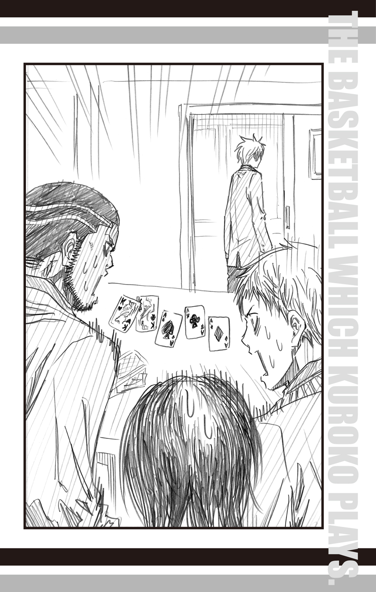
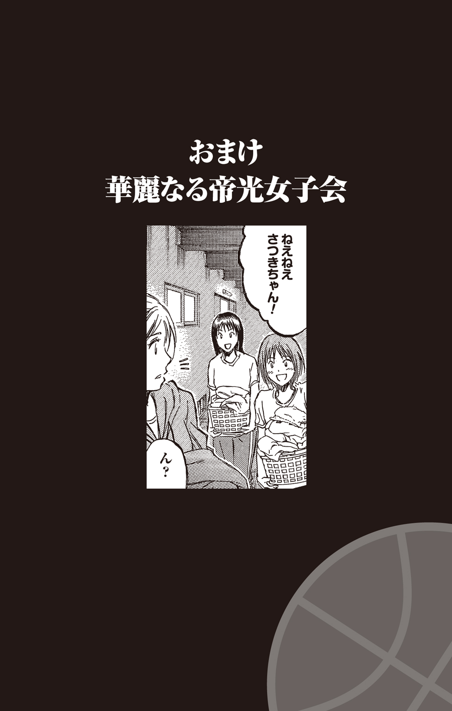
キセキの世代が二年生へと進級した、四月某日。
桃井を含めた帝光中バスケ部女子マネ三人組は、洗濯機を回しながら話に花を咲かせていた。本日の話題はずばり――バスケ部で誰が一番かっこいいか、である。
「やっぱり一番は赤司様だよー！」
みっちゃんが両頰に手を当て、セミロングの髪を揺らしながら頰を染めた。
「かっこいいし、頭はいいし、やさしいし！ この前もね、部の買い出しから帰ってきたところでばったり会ったら、『ご苦労様。僕が持つよ』って、荷物運んでくれたのー!!」
「えっ、じゃあ赤司様とふたりきり？ よかったねー、みっちゃん！」
さらりと長い髪を耳にかけ、あっちゃんは自分のことのように喜んだ。
「えへへ～。でも、一緒に歩いたら余計に緊張しちゃって、何も話せなかったよ」
「あーっ、わかる！ 赤司様ってオーラがあるから、あまり近づけないよね！」
「そうそう！ なんていうのかな......ミステリアスな雰囲気があるよね。そこがいいんだけど！ さつきちゃんもそう思わない？」
みっちゃんに同意を求められた桃井は、うーん......と首をひねった。
「ミステリアスって言われると、ミドリンのほうがミステリアスな気がする」
「............緑間くんはミステリアスっていうより、謎だよね」
「うん、謎。紳士だとは思うけど、理解の範疇を超えてる感じ」
ふたりから真顔で言われ、桃井はまたも首をひねった。
「やっぱり、青峰くんみたいなレベル高い人が傍にいると目が鈍るのかな？」
洗い終わった洗濯物を洗濯機から取り出しながら、あっちゃんが言った。
「レベルが高い!? どこが!?」
桃井がぎょっとしてあっちゃんに振り向く。
「青峰くんなんて色黒でバスケバカで、ほんとにバカなんだよ!? 小学生のときにザリガニ育ててロブスターにするんだって本気で言うような奴だよ!?」
「でも今は、背も高くてバスケうまいじゃない。かっこいいよー」
あっちゃんがニコニコ言うと、みっちゃんも「そうそう」とうなずいた。
「しかもすっごく楽しそうにプレイするし。観てると、ドキドキするよね」
「普段はやんちゃ坊主って感じだけど、コートの中だとそれがかえってかっこよく見えるっていうか......ギャップ萌え？」
「あーっ、そんな感じ!! でもギャップ萌えといえば、紫原くんだよね！」
「わかる！ あのプレイであの性格はズルイよね！」
きゃっきゃっと手を打ちあうふたりだが、桃井が真剣な顔で「ギャップ......？ それなら、ショウゴ君が......」と言い出して、ふたりとも固まった。
「違う！ さつきちゃん！ それは違うよ！」
「灰崎君は素行が悪いだけ！ どんだけバスケがうまくても、ギャップにはならない!! 絶対！」
必死に否定するふたりに、桃井はまたも真面目な顔でうなった。
「難しい......」
「さつきちゃんの感覚のほうが、難しいよね......」
「うん、やっぱりちょっと変わってるかも......」
ふたりはやれやれと洗濯物の入った籠を持ち上げた。一年の頃から同じマネージャーとして仲のいい三人だが、ことこの手の話については、桃井とは感想を共有できずにいる。
もしや、このままずっと共有できないかも......とふたりが半ば諦めかけた日から、およそ一か月――。
あっちゃんの教室で三人がおしゃべりをしていたときのことだ。
「誰がかっこいいかって聞かれたら......やっぱり、あの人かな......！」
桃井が目をうっとりとさせ、ため息をつくようにつぶやいた。まさに恋する乙女の症状だ。
「さつきちゃん、とうとう!?」
みっちゃんとあっちゃんは感動のあまり口元を押さえ、両目に涙をたたえた。気分はすっかり、娘の成長を喜ぶ母だ。
「さつきちゃん、その人、誰？ バスケ部の人？」
ドキドキしながらあっちゃんが尋ねると、桃井はこくっとうなずいた。
「うん！ 最近、一軍に上がってきた人！」
みっちゃんとさっちゃんの脳裏に、さっと一軍メンバーの顔が浮かぶ。最近一軍に上がってきた人物といえば。
「......まさか黄瀬くん!?」
「それはライバル多すぎ......」
「ううん、黒子テツヤ君!! きゃーっ!! 言っちゃった言っちゃった！」
ひとり照れる桃井に、あっちゃんとみっちゃんは絶句した。
「......え？」
「ほら、この前ユニフォームもらった人！ かっこいいよね！」
桃井が満面の笑顔で同意を求めると、ふたりの眉間に皺が寄った。
「............え？ かっこいい？」
「うん！ バスケうまくて、かっこいいよね！」
「............え、うまいかな？ 練習中、よく吐いてるよね？」
「でも、試合になるとキリッとして、かっこいいじゃない！ ギャップ萌えって意味、よくわかった！」
「たしかにギャップありだけど......。でも黒子くんって何考えてるか、わからないし......」
「そこがいいんだよ！ ミステリアスで!! あっちゃんとみっちゃんの気持ちがようやくわかったよ！ もー、テツくんかっこよすぎだよ!!」
身悶える彼女とともに、長い髪が激しく揺れる。
「さつきちゃん、この一か月でいったいなにが......」
「さぁ......」
黒子のかっこよさを延々と語り出した桃井の声を聞きながら、あっちゃんとみっちゃんは確信する。
この先も桃井とは「かっこいい人」の共通認識は永遠に得られないだろう、と。
そして、やはり。
「「......さつきちゃんってちょっと変わってるかも」」
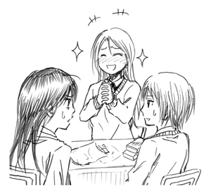
POSTSCRIPT
あとがき
今回の小説版のプロット（企画書）を見ながら
平林さん＆ JUMP j BOOKS 担当の佐藤さんと。
佐藤「どうでしょうか？」
藤巻「おぉー（相変わらず「バスケ」の「バ」の字もねぇ...）」
佐藤「今まで同様、黒子たちの帝光時代の話をメインに普段あまり見れない日常を描いた短編をいくつかやりたいなと！」
藤巻「なるほど（それもいいけどタイトル『黒子のバスケ』なんだけど。バスケはどこいったんだよバスケは）」
平林「前回好評だった火神、氷室、アレックスのアメリカ話ももう一度やりたいなと！」
藤巻「はあ（黒子もどっかいっちゃったよ！）」
佐藤「海常の監督も景虎と顔なじみだとしたら...あだ名はゲンゲンですかね！」
藤巻「あー（知らねぇよ！）」
平林「赤司がにらめっこする！」
藤巻「えーと（なに言ってんの!?）」
佐藤「どうでしょう！」
藤巻「最高です!!」
そんな熱い打ち合わせからできました小説版第４弾。
楽しんでいただけたら...最高です
藤巻忠俊
POSTSCRIPT
あとがき
このシリーズも相変わらずバスケをしないまま、とうとう四巻目です。
そしてとうとう、シリーズを通して一番の難題であった「洛山高校編」が収録されています。
いろいろと謎の多い人物ばかりのお話なので、内容については担当の佐藤さんと二人でさんざん悩みました。
ですが、お忙しいにも拘わらず、藤巻先生からいろいろとアイデアをいただくことができ、とても恵まれたお話になりました。
藤巻先生、今回も本当にありがとうございました！
また、佐藤さんをはじめ、JUMP j BOOKS 編集部の皆さま、校正さま、「黒子のバスケ」前担当の嶋崎さま、新担当の門司さま、大変お世話になりました。本当にありがとうございます。
そして、読者の皆様。
こうして四巻目をお送りできるのは、やはり皆様あってのことです。
感謝の言葉しかありません。ありがとうございます！
原作のお供に少しでも楽しんでいただければ幸いです。
さて。
それでは、最後はやはりこの言葉で。
祝 アニメ二期放送!!
７月某日黒バスカップ２０１３のライブ配信を拝見し
感激のあまり泣きそうになった
平林佐和子
■初出
黒子のバスケ−Replace− １／６のキセキ 書き下ろし
著者紹介
藤巻忠俊 FUJIMAKI TADATOSHI
第44回ジャンプ十二傑新人漫画賞にて『黒子のバスケ』で十二傑賞受賞。
２００９年週刊少年ジャンプ第２号より同作の連載をスタートし好評を博す。
平林佐和子 HIRABAYASHI SAWAKO
アニメの脚本もてがける女性小説家。
著書に『黒子のバスケ-Replace-』シリーズ『SKET DANCE extra dance』シリーズなど。
ジャンプジェイブックスDIGITAL
黒子のバスケ―Replace― １／６のキセキ
著者 藤巻忠俊／平林佐和子
© 2015 T.Fujimaki／S.Hirabayashi
２０１５年３月31日発行
この電子書籍は、ジャンプジェイブックス「黒子のバスケ―Replace― １／６のキセキ」
２０１３年11月23日発行の第４刷を底本としています。
装丁 勝亦一巳
編集協力 佐藤裕介［STICK-OUT］
発行者 鈴木晴彦
発行所 株式会社 集英社
〒１０１－８０５０
東京都千代田区一ツ橋２丁目５番10号
０３－３２３０－６０８０（読者係）
制作所 株式会社デジタルディレクターズ
本作品の全部また一部を無断で複製、転載、改竄、インターネット上に掲載すること、および有償無償に関わらず、本データを第三者に譲渡することを禁じます。なお個人利用の目的であっても、コピーガードを解除しての複製は、法律で禁じられています。